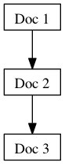
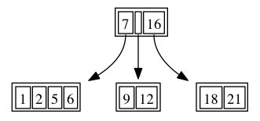
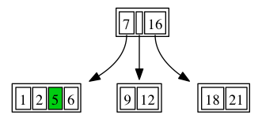
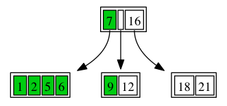
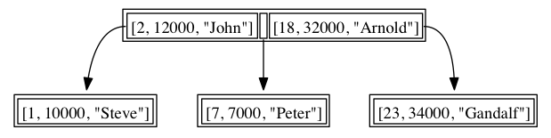
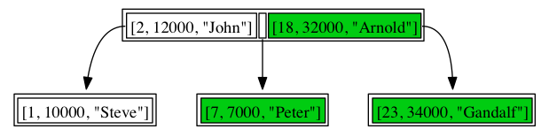
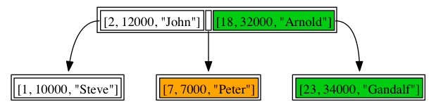
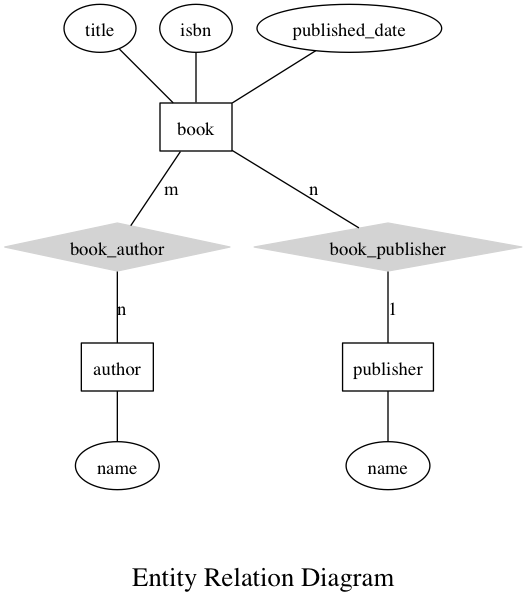

Learn Node.JS and MongoDB The Hard Way
Table Of Contents
Contents
- Learn Node.JS and MongoDB The Hard Way
- Preface
- Introduction: Introduce Your Language
- Exercise 0: The Setup
- Exercise 1: The package manager
- Exercise 2: Installing MongoDB
- Exercise 3: Async programming introduction
- Exercise 4: Connecting to a single MongoDB instance from Node.js
- Exercise 5: Document documents everywhere
- Exercise 6: Databases and Collections
- Exercise 7: Inserting documents
- Exercise 8: Write Concerns
- Exercise 9: Update Basics
- Exercise 10: Update Basics
- Exercise 11: Final Update
- Exercise 12: FindAndModify
- Exercise 13: Removing Documents
- Exercise 14: Querying MongoDB
- The Query Language
- Comparison operators
- $all (Contains all)
- $gt (Greater Than)
- $gte (Greater Than or Equal)
- $in (Contains One Of)
- $lt (Less Than)
- $lte (Less Than or Equal)
- $ne (Not Equal To)
- $nin (Contains None Of)
- Logical operators
- $and
- $or
- $not
- $nor
- Element operators
- $exists
- $mod
- $type
- JavaScript operators
- $regexp (Regular expressions)
- $where
- Array Operators
- $size
- Exercise 15: Index This
- Exercise 16: Basic Indexes in MongoDB
- Exercise 17: Index Katas
- Exercise 18: The Importance of Schema Design
- Exercise 19: Evolving A Simple Schema
- Exercise 20: A RESTFul Programming exercise
- Exercise 21: Let's Loan Out Some Books
- Exercise 22: MongoDB Topologies
- Tic-Tac-Toe: Exercise 1
- Tic-Tac-Toe: Exercise 2
- Tic-Tac-Toe: Exercise 3
- Where Is The Code
- The Glue Of It All
- The Game Model
- The Game Handler
- The find_all_available_gamers Handler
- The invite_gamer Handler
- The decline_game Handler
- The accept_game Handler
- The place_marker Handler
- The Front End
- The gamer_joined Event Handler
- The game_move Event Handler
- The game_invite Event Handler
- The register_button_handler Handler
- The login_button_handler Handler
- The invite_gamer_button_handler Handler
- The invite_accept_button_handler Handler
- The invite_decline_button_handler Handler
- The setupBoardGame Function
- The game_board_cell_handler Function
- The general_box_show Function
- The decline_box_show Function
- The game_invite_box_show Function
- Styling That Game
- Wrapping Up
- Notes
- Tic-Tac-Toe: Exercise 4
- Next Steps
Introduction: Introduce Your Language
Exercise 1: The package manager
Node.js has and outstanding amount of libraries available for usage allowing you to reuse a massive collection of code written by other programmers for your application. This tool is called the Node Package Manager or NPM for short. In this exercise we will learn the basics of using NPM to install some packages.
Open the Terminal application and type
~ $ npm search mongodb mongodb A node.js driver for MongoDB =christkv 2012-12-03 17: mongodb-async Thin & clean async wrapper for mongodb =zir 2012-10-26 17: mongodb-errors Helper classes to deal with mongodb errors =mwawrusch 2012-11-25 03:The npm search text command lets you search for available modules that you can use
Go to the directory learn-exercises we created in exercise 0.
Let's install some packages that we will use in the exercises.
~ $ npm install mongodb npm http GET https://registry.npmjs.org/mongodb npm http 304 https://registry.npmjs.org/mongodb npm http GET https://registry.npmjs.org/bson/0.1.5 npm http 304 https://registry.npmjs.org/bson/0.1.5 > bson@0.1.5 install /Users/ck/coding/projects/learnexercises /node_modules/mongodb/node_modules/bson > node install.js || (exit 0) ================================================================================ = = = Attempting to build bson c++ extension = = Windows: no build will be attempted as binaries are prepackaged = = Unix: on failure the package will still install without the C++ extension = = = ================================================================================ node-gyp clean node-gyp configure build CXX(target) Release/obj.target/bson/ext/bson.o SOLINK_MODULE(target) Release/bson.node SOLINK_MODULE(target) Release/bson.node: Finished child process exited with code 0 mongodb@1.2.2 node_modules/mongodb └── bson@0.1.5
You should see something like the text above, if it's slightly different don't worry.
NPM is has a lot of options for handling packages you can use npm help to read more about all options available. Also have a look at https://npmjs.org/ for a great web interface to search for available packages.
Notice that there is a new directory under learn-exercises called node_modules this directory contains all the npm packages we install.
Exercise 2: Installing MongoDB
This book is all about using Node.js with MongoDB so naturally we need to install MongoDB. With no further ado let's get to it.
Mac OSX
This exercise is made up by the following tasks that we need to complete to finish this exercise.
Go to the MongoDB website at http://www.mongodb.org/downloads
Locate the latest MongoDB production release for OS X 64 bit
Copy the link address to the latest release in the browser (right click on the link).
Open Terminal application
Go to the directory learn-exercises we created in exercise 0.
Write the following, where link is the pasted link from the browser Following the download do an `ls -la to see the file you downloaded.
The example below is with 2.2.2 of mongodb
~ $ curl -O link % Total % Received % Xferd Average Speed Time Time Time Current Dload Upload Total Spent Left Speed 100 56.6M 100 56.6M 0 0 353k 0 0:02:44 0:02:44 --:--:-- 277k ~ $ ls -la total 115928 drwxr-xr-x 4 ck staff 136 Dec 4 13:20 . drwxr-xr-x 25 ck staff 850 Dec 4 12:56 .. -rw-r--r-- 1 ck staff 59352946 Dec 4 13:23 mongodb-osx-x86_64-2.2.2.tgz drwxr-xr-x 3 ck staff 102 Dec 4 12:57 node_modules
Unpack the mongodb server in the local directory
~ $ tar xvfz mongodb-osx-x86_64-2.2.2.tgz x mongodb-osx-x86_64-2.2.2/GNU-AGPL-3.0 x mongodb-osx-x86_64-2.2.2/README x mongodb-osx-x86_64-2.2.2/THIRD-PARTY-NOTICES x mongodb-osx-x86_64-2.2.2/bin/mongodump x mongodb-osx-x86_64-2.2.2/bin/mongorestore x mongodb-osx-x86_64-2.2.2/bin/mongoexport x mongodb-osx-x86_64-2.2.2/bin/mongoimport x mongodb-osx-x86_64-2.2.2/bin/mongostat x mongodb-osx-x86_64-2.2.2/bin/mongotop x mongodb-osx-x86_64-2.2.2/bin/mongooplog x mongodb-osx-x86_64-2.2.2/bin/mongofiles x mongodb-osx-x86_64-2.2.2/bin/bsondump x mongodb-osx-x86_64-2.2.2/bin/mongoperf x mongodb-osx-x86_64-2.2.2/bin/mongosniff x mongodb-osx-x86_64-2.2.2/bin/mongod x mongodb-osx-x86_64-2.2.2/bin/mongos x mongodb-osx-x86_64-2.2.2/bin/mongoWe are going to create a file called start-mongodb.sh that we will use to start the server.
Open TextWrangler and a new document. Enter the following code but change the directory reference to the one matching your mongodb version.
In this case it's mongodb-osx-x86_64-2.2.2
Enter the following code.
export PATH=./mongodb-osx-x86_64-2.2.2/bin:$PATH
Save the file to the learn-exercises directory as setup.sh
Change the permission of the file so it can be executed
~ $ chmod 775 ./setup.shExecute the setup.sh script in our local context to set the environmental settings.
~ $ . ./setup.shNotice the . before the file, this runs the script in the current shell context allowing us to modify the current PATH.
Let's create a directory to store our database and start up MongoDB
~ $ mkdir data ~ $ mongod --dbpath=./data Tue Dec 4 14:33:17 [initandlisten] MongoDB starting : pid=79402 port=27017 dbpath=./data/ 64-bit host=ChristianK-MacBook-Pro.local Tue Dec 4 14:33:17 [initandlisten] Tue Dec 4 14:33:17 [initandlisten] ** WARNING: soft rlimits too low. Number of files is 256, should be at least 1000 Tue Dec 4 14:33:17 [initandlisten] db version v2.2.2, pdfile version 4.5 Tue Dec 4 14:33:17 [initandlisten] git version: d1b43b61a5308c4ad0679d34b262c5af9d664267 Tue Dec 4 14:33:17 [initandlisten] build info: Darwin bs-osx-106-x86-64-1.local 10.8.0 Darwin Kernel Version 10.8.0: Tue Jun 7 16:33:36 PDT 2011; root:xnu-1504.15.3~1/RELEASE_I386 i386 BOOST_LIB_VERSION=1_49 Tue Dec 4 14:33:17 [initandlisten] options: { dbpath: "./data/" } Tue Dec 4 14:33:17 [initandlisten] journal dir=./data/journal Tue Dec 4 14:33:17 [initandlisten] recover : no journal files present, no recovery needed Tue Dec 4 14:33:17 [websvr] admin web console waiting for connections on port 28017 Tue Dec 4 14:33:17 [initandlisten] waiting for connections on port 27017Open a new terminal shell window, ensure you are in the directory learn-exercises and do.
~ $ . ./setup.shLet's connect to the MongoDB instance using the Mongo shell and execute a couple of commands.
~ $ mongos MongoDB shell version: 2.2.2 connecting to: test > show dbs local (empty) > use test switched to db test > db.test.insert({a:1}) > db.test.find().pretty() { "_id" : ObjectId("50bdfd7d9806fc973570b5b2"), "a" : 1 } > exit bye
Note
For the rest of our exercises we are going to assume that you have mongod running on your development machine running on localhost and port 27017 which are the default. All the code in the rest of the examples that use MongoDB will assume this unless otherwise stated.
Exercise 3: Async programming introduction
There are several pitfalls that are worth understanding before we get started exploring the driver and MongoDB in general. This have to do with the essential differences between synchronous and asynchronous programming. It's best served by some examples. For the rest of the exercises we will assume that you understand how to enter code using the editor for your system.
Lets take a simple application that fetches a twitter feed a couple of thousand times. But before we start let's install another npm package that simplifies the fetching of web pages. This module is called request. Perform the following tasks to install it and then lets get one with some coding.
Mac OSX
Start up the Terminal application.
Go to the directory learn-exercises we created in exercise 0.
Install the request package using NPM
~ $ npm install request npm http GET https://registry.npmjs.org/request npm http 200 https://registry.npmjs.org/request npm http GET https://registry.npmjs.org/request/-/request-2.12.0.tgz npm http 200 https://registry.npmjs.org/request/-/request-2.12.0.tgz request@2.12.0 node_modules/requestBring up TextWrangler and enter the script below
var request = require('request'); for(var i = 0; i < 100; i++) { request('http://www.google.com', function (error, response, body) { if (!error && response.statusCode == 200) { console.log("Retrieved the web page"); } }); } console.log("DONE");
Save it as the file ex1.js in the directory learn-exercises
From the terminal execute the script ex1.js
~ $ node ex1.js DONE Retrieved the web page Retrieved the web page Retrieved the web page Retrieved the web page Retrieved the web page Retrieved the web page Retrieved the web page Retrieved the web page (node) warning: possible EventEmitter memory leak detected. 11 listeners added. Use emitter.setMaxListeners() to increase limit. Trace at Socket.EventEmitter.addListener (events.js:175:15) at Socket.EventEmitter.once (events.js:196:8) at ClientRequest.<anonymous> (/Users/ck/coding/projects/learnexercises/node_modules/request/main.js:521:27) at ClientRequest.g (events.js:192:14) at ClientRequest.EventEmitter.emit (events.js:96:17) at HTTPParser.parserOnIncomingClient [as onIncoming] (http.js:1462:7) at HTTPParser.parserOnHeadersComplete [as onHeadersComplete] (http.js:111:23) at Socket.socketOnData [as ondata] (http.js:1367:20) at TCP.onread (net.js:403:27) (node) warning: possible EventEmitter memory leak detected. 11 listeners added. Use emitter.setMaxListeners() to increase limit. Looking at the output from our little program notice that the first line ``DONE`` was the last line in our program. This shows one of the main pitfals most developers fall into when they start using ``Node.js`` and merits a more profound explanation and then an example on how to avoid this.
Asynchronous Programming
The traditional way a programming language works is by stopping when we do an operation that requires the program to talk to things like your hard disk or a server on a network until they answer. If you wrote the example above in ruby or python it would process each fetch one after the other and once it had finished it would print DONE.
But in Node.JS any operation that wants to communicate with a hard disk or server returns at once and the results are then returned to the program in an callback. So when the program runs all the requests to fetch the google homepage starts at the same time and as each is finished the function containing the console.log statement is triggered. Since they all get started at the same time Node.js complains that we might have a memory leak. If we start enough of these requests it will schedule retrivals of the google homepage until our program runs out of memory and crashes.
But this can be easily fixed. Let's enter it. Write the code and save it as ex2.js
var request = require('request');
var load10AtATime = function(callback) {
var counter = 10;
for(var i = 0; i < 10; i++) {
request('http://www.google.com', function (error, response, body) {
counter = counter - 1;
if (!error && response.statusCode == 200) {
console.log("Retrieved the web page");
}
if(counter == 0) callback();
});
}
}
var loadBatches = function(numberOfBatches, callback) {
console.log("= Loading batch :: " + numberOfBatches);
load10AtATime(function() {
numberOfBatches = numberOfBatches - 1;
if(numberOfBatches == 0) return callback();
loadBatches(numberOfBatches, callback);
})
}
loadBatches(10, function() {
console.log("DONE");
})
Did I say easily. Hmm maybe not easily. Let's do a review of the code and look at what it means. The function load10AtATime has a callback function. This function will only be called once the 10 requests have completed. To ensure that all the requests have completed we have a count down variable called counter that is only decremented once the result is returned from the request. Once counter reaches 0 we call the function callback signaling that we have finished fetching the 10 copies of the google homepage. This function thus takes care of loading 10 pages at a time in parallel.
Calling load10AtATime is the function loadBatches. This function is a recursive function that calls itself 10 times until numberOfBatches is 0 and for each time it calls the load10AtATime function and waits for it to return before executing the next batch. Once numberOfBatches reaches 0 it calls the callback function to return to the original caller.
Finally the last part of the code just starts the batch loading by calling it loadBatches` with a start value of ``10 and waits for it to finish before printing it out to the console.
One problem with this code is that if the number of batches is to high you can run out of stack meaning the application will crash. A better way to handle this recurssion is to use a method called process.nextTick. Below is an example of the code will look when using process.nextTick.
var request = require('request');
var load10AtATime = function(callback) {
var counter = 10;
for(var i = 0; i < 10; i++) {
request('http://www.google.com', function (error, response, body) {
counter = counter - 1;
if (!error && response.statusCode == 200) {
console.log("Retrieved the web page");
}
if(counter == 0) callback();
});
}
}
var loadBatches = function(numberOfBatches, callback) {
console.log("= Loading batch :: " + numberOfBatches);
load10AtATime(function() {
numberOfBatches = numberOfBatches - 1;
if(numberOfBatches == 0) return callback();
process.nextTick(function() {
loadBatches(numberOfBatches, callback);
})
})
}
loadBatches(10, function() {
console.log("DONE");
})
process.nextTick schedules the function call for the next tick in the eventloop of Node.js. This happens with a new stack allowing us to avoid running out of stack and crashing if we have are loading to many batches in one go. There is another technique called a trampolining that can do the same but this is left to you to investigate. The main issue is the lack of tail recurrsion. You can read more about it at http://en.wikipedia org/wiki/Tail_call including trampolining. That said I prefer to use process.nextTick because it schedules the function call in the eventloop of Node.js letting other code run inbetween.
I also recommend using some of the excellent libraries for asynchronous programming for Node.js. Let's see how we can accomplish the same using the async npm module. First install the npm module doing
npm install async
Then fire up the text editor of your choice and enter the following example.
var async = require('async')
, request = require('request');
var numberOfBatches = 10;
async.whilst(
function() { return numberOfBatches > 0; }
, function(callback) {
console.log("= Loading batch :: " + numberOfBatches);
numberOfBatches = numberOfBatches - 1;
var counter = 10;
for(var i = 0; i < 10; i++) {
request('http://www.google.com', function (error, response, body) {
if (!error && response.statusCode == 200) {
console.log("Retrieved the web page");
}
counter = counter - 1;
if(counter == 0) callback();
});
}
}
, function(err) {
console.log("DONE");
}
)
Let's have a quick look at the code. The async.whilst method takes three functions. The first function is the while statement that tells whilst to keep running until the returned value from the first function is false. The second function is the actual work being done in each pass through the while. Once the program is done with it's work it calls the callback and the loop repeats. When the first function returns false whilst calls the last function with the final result. The second function is the same as the previous code example.
Note
Grasping the fundamentals about asynchronous programming is important to the correct behaviour of you applications and also to leverage the high concurrency available in Node.js. Don't worry if you don't grasp it the first time around it can take a while to get used to it especially if you come from another programming platform that is synchronous like ruby, python, perl or php.
It's worth spending some time practicing it or understanding how the async library works.
Exercise 4: Connecting to a single MongoDB instance from Node.js
In this exercise we will look at how to connect to MongoDB from Node.js. We will write a simple program that connects to the server and then disconnects itself. We are assuming the npm mongodb package is already installed (if not revisit exercise 1). Fire up your text editor and enter the following program.
var mongodb = require('mongodb')
, MongoClient = mongodb.MongoClient;
MongoClient.connect("mongodb://localhost:27017/test", function(err, db) {
if(err) {
console.log("failed to connect to the database");
} else {
console.log("connected to database");
}
db.close();
})
Notice the weird string mongodb://localhost:27017/test this is called an URI connection string and is used by the driver to allow you to specify how to connect to a MongoDB server without specifying it programatically. This is useful if you need to use the same program against multiple different MongoDB setups as you can just store a seperate string for each environment.
The MongoClient.connect takes a function with 2 parameters where the first one is named err and the second db. This is how Node.js works and if you look at the documentation on the Node.js site http://nodejs.org/ you'll notice that all functions take the same function. If the function worked correctly the err parameter will be set to null. If it's not set to null there was an error during the MongoClient.connect call. To check if there was an error the code does if(err) that will return true if err is anything but null and then prints an error message before closing the connection.
But say we have 2 different databases we want to use. Can we do just do MongoClient.connect calls. The answer is yes but that it's not optimal. The reason is that MongoClient.connect sets up a connection pool for each call meaning that if you call MongoClient.connect a lot you might find that you are opening a lot of uneccessary connection to the MongoDB server. Luckily we can avoid this simply. Enter the following code in you text editor.
var mongodb = require('mongodb')
, MongoClient = mongodb.MongoClient;
MongoClient.connect("mongodb://localhost:27017/test", function(err, db) {
if(err) {
console.log("failed to connect to the database");
} else {
console.log("connected to database");
}
var test2 = db.db('test2');
db.close();
})
Notice the line db.db('test2'). This creates a new Db object where all operations will go against the db test2 but will share the underlying connection pool with the first database test. This lets your program get efficient reuse of the connection pool we created using MongoClient.connect.
That's covered MongoClient.connect. Sometime we want better programatic control of our connections to MongoDB. Luckily MongoClient allows for this aswell. Spin up the text editor again and enter the following program.
var mongodb = require('mongodb')
, MongoClient = mongodb.MongoClient
, Server = mongodb.Server;
var mongoclient = new MongoClient(new Server('localhost', 27017));
mongoclient.open(function(err, mongoclient) {
if(err) {
console.log("failed to connect to the database");
} else {
console.log("connected to database");
}
var test = mongoclient.db('test');
var test2 = mongoclient.db('test2');
mongoclient.close();
})
Notice the line Server = mongodb.Server. It allows us to define the settings for connecting to a server instance. The line new MongoClient(new Server('localhost', 27017)) creates an instance of MongoClient that is ready to connect to the MongoDB server at localhost on port 27017. The program then calls .open on the MongoClient instance. The main difference from the previous connection example using MongoClient.connect is that the function returns the MongoClient instance instead of a db instance. To get hold of the db instances we have to call the function .db('test') on the MongoClient instance. The code does this twice to retrieve a db instance for the databases test and test2 before finally closing the connection to the MongoDB database.
Note
MongoDB can be configured to run as a cluster or sharded system. In later exercises we will learn how to connect to this configuarations. It's very similar to the current examples but has some slight differences. You can read more about the URI format at http://docs.mongodb.org/manual/reference/connection-string/
Exercise 5: Document documents everywhere
So it's probably dawned on you that MongoDB is a document database. Moreover it's schemaless database. So what does that mean in layman terms. Let's start with a simple example of a JSON document.
{ "name": "MongoDB", "version": 2, "description": "A schemaless document database", "features": ["schemaless", "document oriented", "fast", "scalable"], "main developer": { "name": "10gen", "location": "new york city" } }
As we can the document is made up of set of names and values 'name': 'MongoDB' and we can see that we can express such concepts as a list of features and a JSON embedded document under the name main developer. The possibilities on how to structure your data in documents is only limited by your imagination and the current 16MB limit for a single document.
MongoDB extends on JSON by adding types. This format is called BSON and is a binary representation of JSON with additonal types so the database can operate on them. These types can be summed up in a table (more details available at http://bsonspec.org/#/specification). We've only included the types that you will use from your application and ignored the ones that are internal data types or are not generally used in documents.
| Type | Description |
|---|---|
| Long | A 64 bit integer value that can take the value of +/- 9,223,372,036,854,775,808 |
| Date | A UTC Datetime value |
| Regexp | A regular expression |
| Code | A Javascript string with an option scope for the script |
| Binary | A Binary blob object (can have a subtype) |
| Double | A 64 bit float value (only use this if you have a whole number that you want stored as a double instead and not an integer) |
So how do we express a Document with all these special types in Node.js. Well fire up the text editor and let's get cracking on the code below.
var mongodb = require('mongodb')
, Long = mongodb.Long
, Binary = mongodb.Binary
, Code = mongodb.Code
, ObjectID = mongodb.ObjectID
, serialize = mongodb.BSONPure.BSON.serialize;
var buffer = new Buffer('hello world');
var document = {
'64bitvalue': Long.fromNumber(45000000)
, 'array of values': [1, 2, 3, 'hello', {'a': 1}]
, 'binary': new Binary(buffer)
, 'code': new Code(function test() {
return "hello world";
})
, 'date': new Date()
, 'regexp': /^hello/
, '_id': new ObjectID()
}
serialize(document);
The serialize function is not a function you'll usually use in your programs but allows us to verify that the document is a valid BSON document by serializing it to it's binary representation.
There are some interesting limitations in Javascript due to the way way numbers are represented in the language. All numbers are actually double floats which means that the highest number you can represent in Javascript is 53 bits of resolution or +/- 9,007,199,254,740,992 which is significantly less than the Long type. This means that any Long values stored in MongoDB is returned as a Long instance instead of a Number instance. Since MongoDB can only store either 32 bit ints, 64 bit ints or 64 bit doubles the driver does intelligent conversion where possible. You can override this by doing new Double(1) to force it to store it as a 64 bit float instead of a 32 bit integer.
If we look a the second value in the document array of values we can see that it's an array composed of some numbers, a string and a document. This is a reflection of the flexibility of expression the document model gives you when modeling your applications data and one of the main reasons I think MongoDB is a blast of fresh air to traditional data modelling with relational tables.
The Binary type let's us store raw byte data in MongoDB. You can store such things as images or maybe binary files such as word documents or pdf's. However remember that a single document has a maximum size of 16MB. If you need to store Bigger files we will show you how in a later exercise using a driver feature called GridFS.
The Code object is kind of interesting and is used to store actual Javascript code in MongoDB. You can even execute this code on the server if you store it in a special place (but this is not recommended as Javascript on the server is not very performant and comes with some fairly harsh limitations, more on that later).
The date value is a Javascript Date object and MongoDB has native support for dates so you can sort on them in the database. For the driver this shows the perfect match of MongoDB and Node.js since the date type is just the one that already comes pre-packaged with Javascript.
The next value regexp is a a regular expression that can also be stored in MongoDB. For pure documents it might not be so useful but because queries in MongoDB are actually BSON documents it means that MongoDB supports regular expressions in queries.
The last value _id is a special type in MongoDB that is a 12 bit unique identifier inside a collection. This type is the default primary key in a collection (the primary key in a document is alway the _id field in a document) and is made up of a timestamp + some additional fields and an incremental value. This gives it a great secondary property of being sortable by time allowing you to sort any record that just contains the _id field by it's creation time.
So as you can see we can store pure JSON objects but also more complex types that go beyond what Javascript supports natively. This matching makes MongoDB a great database for Node.js. As we will see in future exercises the match between MongoDB and Node.js can be leveraged to do some very interesting and unique things.
Note
Much of the power of MongoDB is locked in the design of your schema, how you design your data will impact the way you read and write the data and also the performance of you application. We will go more indepth on schema design in future exercises and look at benefits and tradeoffs associated with specific solutions.
Exercise 6: Databases and Collections
MongoDB has is build around 3 main concepts. One or more db's that contain one or more collections that contain one or more documents. So how do we get hold of a collection? Time for some code entry.
var mongodb = require('mongodb')
, MongoClient = mongodb.MongoClient;
MongoClient.connect("mongodb://localhost:27017/test", function(err, db) {
if(err) {
console.log("failed to connect to the database");
} else {
console.log("connected to database");
}
var myotherdb = db.db('myotherdb');
var admin = db.admin();
var mydocuments = db.collection('mydocuments');
db.close();
});
The example shows how to use the MongoClient.connect method to fetch a connection to a database directly. The connect method actually returns a database object. If we want to use other databases we can call the .db() method on the db object returned by the MongoClient.connect method. Notice that we don't need a new callback, this is because the .db() method does not open a new connection but reuses the existing connections that was created during the MongoClient.connect call.
So what is the .admin() method. Some administrative commands must be run against a special database called admin. To make the it a little bit easier I created an .admin() method that returns an instance of the Admin class with helper methods to make it easier to use the administrative commands available.
The other main usage of the admin() database is for storing user credentials as a server level. Don't worry we will touch on this later as for now it's a more advanced topic than we need to be concerned about.
After having fetched the new dbs myotherdb and admin we want to grab some collections to do some work on. This is done by calling db.collection() that returns a Collection object helper methods to help us do work on the collection. The reason we don't need to use a callback function here is that .collection() does not actually call out to the database to create a collection. This happens automatically when we save the first document to MongoDB. MongoDB will create a default collection with the name we passed into the .collection() method and save the document to it.
Capped Collections
However this might not always be what we want. MongoDB has two types of collection types available. The first one we will refer to as the standard collection type and the second as the capped collection type. The capped collection type is quite a different beast from the standard collection type. It's of a fixed size (you have to specify the size of the intial collection in bytes) and you can set a max number of documents it can store. It's als a FIFO (First in first out) queue which means that when it reaches the end of the space it will wrap around. Other limitiations are that you cannot add fields to an existing document and you cannot delete them.
This might sound like a lot of limitiations but the FIFO property and the semantics of operations are actually really good if you want to limit the amount of data stored or don't care if data is overwritten after awhile.
So how do we create a capped collection instead of a standard collection ? Let's explore some code, typing it up in your editor.
var mongodb = require('mongodb')
, MongoClient = mongodb.MongoClient;
var document = {
'hello': 'world'
}
MongoClient.connect("mongodb://localhost:27017/test", function(err, db) {
if(err) {
console.log("failed to connect to the database");
} else {
console.log("connected to database");
}
db.createCollection("mycappedcollection",
{ capped:true
, size:100000
, max: 100 }, function(err collection) {
db.close();
});
});
Notice the db.createCollection() method we are using. This is a method specifically made to allow us to create collections that are not standard collections. In this code example we are creating a capped collection with a size of 100000 bytes and holding a maximum of 100 documents before it starts overwritting them. The options we can pass in to the db.createCollection for a capped collection are.
- capped: (true/false), specified that this is a capped (FIFO) collection
- size: (a number of bytes larger than 0), specifies the maximum size in bytes of the capped collection.
- max: (a number larger than 0), specifies the maximum number of documents that can be stored in the collection before the collection starts overwritten old documents.
Time to live collections (TTL)
From MongoDB 2.2 onwards there is a new type of collection called a TTL collection. It's a bit of a misdemeaner to call it a type of collections as it's actually a standard collection with a special type to live index on a date fields that automatically removes documents that are older than the time specified for the TTL index. It's a very useful when want only to store data for a specified time period. Say we only want to keep 48 hours of log data in a collection. With TTL you can set the time of expiry to be 48 hours and documents will be removed when they are older than 48 hours. Code is a thousand words so fire up your editor and enter the code below.
var mongodb = require('mongodb')
, MongoClient = mongodb.MongoClient;
var document = {
'hello': 'world'
}
MongoClient.connect("mongodb://localhost:27017/test", function(err, db) {
if(err) {
console.log("failed to connect to the database");
} else {
console.log("connected to database");
}
var collection = db.collection('myttlcollection');
var fortyeighthours = 60 * 60 * 48;
collection.ensureIndex(
{created_on: 1}
, {expireAfterSeconds: fortyeighthours}, function(err, result) {
db.close();
});
});
Notice the collection.ensureIndex() method. We will go deeper into how indexes work and how the Node.js driver can create them in a later exercise. The point to notice here is that the TTL collection needs an index on a data field to work correctly and that the expireAfterSeconds parameter is in seconds.
Note
One particular note to be made about TTL collections is that the expiry time is not a hard expiry time. What's meant by hard. Well it means that even if a document is exactly 48 hours old it might not be removed at exactly 48 hours but some time after that when MongoDB has free resources to remove the document. Also due to the fact that TTL collections need to remove documents from a collection TTL does not work with capped collections so keep that in mind.
Exercise 7: Inserting documents
The first and most important feature of a database is to be able to store data in it. Let's get cracking on inserting documents into MongoDB. There are 3 main things you need to know about inserting documents in MongoDB using the Node.js driver. These are single inserts, bulk inserts and write concerns. Before hitting the details let's do a single document insert to get us moving and explain the basic concept. Fire up your text editor and enter the following code.
var mongodb = require('mongodb')
, MongoClient = mongodb.MongoClient;
var document = {
'hello': 'world'
}
MongoClient.connect("mongodb://localhost:27017/test", function(err, db) {
if(err) {
console.log("failed to connect to the database");
} else {
console.log("connected to database");
}
var mydocuments = db.collection('mydocuments');
mydocuments.insert(document, {w:0});
db.close();
});
Let's digest the code example. The first thing we notice after connecting to the database is that we create a document containing 'hello': 'world'. After that we grab the collection mydocuments and we call the method on the collection called .insert(). The first parameter is the document we wish to store and the second is an object with the parameter w set to 0. Notice that we have not provided any callback function. We will touch on the concept of write concerns a bit down the line. Sufficient for now is to know that if we set w:0 we are not asking MongoDB to acknowledge that the write was correctly recieved by the database server. Rather it's a fire and forget write of the document to MongoDB.
What happens under the cover is that the driver takes your document and converts it into a BSON document that is then sent over the socket to MongoDB. Let's boot up the MongoDB console and verify that the document made it to the console (we are assuming you have the executable mongodb in your path for your terminal/shell/windows prompt).
~ $ mongo MongoDB shell version: 2.2 connecting to: test > use test switched to db test > show collections mydocuments system.indexes > db.mydocuments.findOne() { "hello" : "world", "_id" : ObjectId("50c5f63780ebe8585f000001") }
Notice that our document is correctly stored in our test database. But also notice that we have an additional field called _id that seems to be of a type known as ObjectId. The first thing to understand is that all documents in a collection in MongoDB has what is termed a primary key called _id. A primary key is a unqiue identifier for that specific document that is unique for the whole collection. There is a guarante from MongoDB's side that there cannot be more than one document using a specific ObjectId for the field _id in a collection. You can use the same ObjectId in other collections of course or in other field names. The driver actually generates these for you when you insert if they don't exist from before. Also notice that the number inside the ObjectId(...) will vary on your computer in comparision to the example as it's a generated value.
But you can also override the _id field yourself and set it to application generated id. This might be useful if you are generating your own globally unique numbers for example. Let's do this and also see what happens if we try to insert the same document with the same id twice. Enter the following code in your editor.
var mongodb = require('mongodb')
, MongoClient = mongodb.MongoClient;
var document = {
'_id': 1
, 'hello': 'world'
}
MongoClient.connect("mongodb://localhost:27017/test", function(err, db) {
if(err) {
console.log("failed to connect to the database");
} else {
console.log("connected to database");
}
var mydocuments = db.collection('mydocuments');
mydocuments.insert(document, function(err, result) {
mydocuments.insert(document, function(err, result) {
if(err) {
console.log("document with _id already exists");
}
db.close();
});
});
});
When you run this you should see the following output
connected to database
document with _id already exists
Let's check what's in the database after we ran our script.
~ $ mongo MongoDB shell version: 2.2 connecting to: test > use test switched to db test > show collections mydocuments system.indexes > db.mydocuments.find().pretty() { "hello" : "world", "_id" : ObjectId("50c5f63780ebe8585f000001") } { "_id" : 1, "hello" : "world" }
So what happened here. The first insert command worked as expected and our document was saved in the database with the _id set to 1 as we expected. When the second insert was tried however it failed and we got the message that the document with that _id already exists. Since _id needs to be unique that is as expected.
One thing to remember is that the _id can be any BSON type including a binary which is used to for example use global unique identifiers called UUID's (read more at http://en.wikipedia.org/wiki/Universally_unique_identifier about UUID). This can be quite useful as we mentioned above for some specific scenarios. But for this book we will stick to the plain vanilla ObjectId or ObjectID as its nown in the Node.js driver.
Bulk Inserts
So this is quite good, we can easily insert a document. So what if we want to insert 100 documents. The first thought might be something like the code below. Enter it an run it.
var mongodb = require('mongodb')
, MongoClient = mongodb.MongoClient;
var document = {
'_id': 1
, 'hello': 'world'
}
MongoClient.connect("mongodb://localhost:27017/test", function(err, db) {
if(err) {
console.log("failed to connect to the database");
} else {
console.log("connected to database");
}
var mydocuments = db.collection('mycountingdocuments');
var counter = 100;
for(var i = 0; i < 100; i++) {
mydocuments.insert({i:i}, function(err, result) {
counter = counter - 1;
if(counter == 0) {
db.close();
}
});
}
});
Let's check that the documents made it to the database. Notice that we changed the name of the collection.
~ $ mongo MongoDB shell version: 2.2 connecting to: test > use test switched to db test > show collections mycountingdocuments mydocuments system.indexes > db.mycountingdocuments.find().pretty() { "i" : 0, "_id" : ObjectId("50c5fb4ad2950cbd5f000001") } { "i" : 1, "_id" : ObjectId("50c5fb4ad2950cbd5f000002") } { "i" : 5, "_id" : ObjectId("50c5fb4ad2950cbd5f000006") } { "i" : 3, "_id" : ObjectId("50c5fb4ad2950cbd5f000004") } { "i" : 4, "_id" : ObjectId("50c5fb4ad2950cbd5f000005") } { "i" : 2, "_id" : ObjectId("50c5fb4ad2950cbd5f000003") } { "i" : 9, "_id" : ObjectId("50c5fb4ad2950cbd5f00000a") } { "i" : 8, "_id" : ObjectId("50c5fb4ad2950cbd5f000009") } { "i" : 6, "_id" : ObjectId("50c5fb4ad2950cbd5f000007") } { "i" : 7, "_id" : ObjectId("50c5fb4ad2950cbd5f000008") } { "i" : 10, "_id" : ObjectId("50c5fb4ad2950cbd5f00000b") } { "i" : 11, "_id" : ObjectId("50c5fb4ad2950cbd5f00000c") } { "i" : 12, "_id" : ObjectId("50c5fb4ad2950cbd5f00000d") } { "i" : 13, "_id" : ObjectId("50c5fb4ad2950cbd5f00000e") } { "i" : 14, "_id" : ObjectId("50c5fb4ad2950cbd5f00000f") } { "i" : 15, "_id" : ObjectId("50c5fb4ad2950cbd5f000010") } { "i" : 16, "_id" : ObjectId("50c5fb4ad2950cbd5f000011") } { "i" : 17, "_id" : ObjectId("50c5fb4ad2950cbd5f000012") } { "i" : 18, "_id" : ObjectId("50c5fb4ad2950cbd5f000013") } { "i" : 19, "_id" : ObjectId("50c5fb4ad2950cbd5f000014") } Type "it" for more > db.mycountingdocuments.count() 100
As you can see we have inserted 100 documents into the database as expected. But surely there must be a better way to bulk insert documents than issuing 100 seperate insert commands. Luckily there is. MongoDB support bulk inserts. In fact the bulk insert command sent to the server is a single message. There is a limit on how much data you can send in a single bulk insert. For now the drivers enforce a 16MB limit. With this information let's rewrite the example to do the insert as a bulk insert.
var mongodb = require('mongodb')
, MongoClient = mongodb.MongoClient;
MongoClient.connect("mongodb://localhost:27017/test", function(err, db) {
if(err) {
console.log("failed to connect to the database");
} else {
console.log("connected to database");
}
var mydocuments = db.collection('mycountingdocuments');
var counter = 100;
var documents = [];
for(var i = 0; i < 100; i++) {
documents.push({i:i});
}
mydocuments.insert(documents, function(err, result) {
db.close();
});
});
Before running the code let's cleanup the collection to ensure we don't have any existing documents in the collection. Fire up the console and do the following to remove all the documents.
~ $ mongo MongoDB shell version: 2.2 connecting to: test > use test switched to db test > show collections mycountingdocuments mydocuments system.indexes > db.mycountingdocuments.remove() > db.mycountingdocuments.count() 0
Run the example above and verify that all the documents made it to the collection on MongoDB.
~ $ mongo MongoDB shell version: 2.2 connecting to: test > use test switched to db test > show collections mycountingdocuments mydocuments system.indexes > db.mycountingdocuments.find().pretty() { "i" : 0, "_id" : ObjectId("50c5fb4ad2950cbd5f000001") } { "i" : 1, "_id" : ObjectId("50c5fb4ad2950cbd5f000002") } { "i" : 5, "_id" : ObjectId("50c5fb4ad2950cbd5f000006") } { "i" : 3, "_id" : ObjectId("50c5fb4ad2950cbd5f000004") } { "i" : 4, "_id" : ObjectId("50c5fb4ad2950cbd5f000005") } { "i" : 2, "_id" : ObjectId("50c5fb4ad2950cbd5f000003") } { "i" : 9, "_id" : ObjectId("50c5fb4ad2950cbd5f00000a") } { "i" : 8, "_id" : ObjectId("50c5fb4ad2950cbd5f000009") } { "i" : 6, "_id" : ObjectId("50c5fb4ad2950cbd5f000007") } { "i" : 7, "_id" : ObjectId("50c5fb4ad2950cbd5f000008") } { "i" : 10, "_id" : ObjectId("50c5fb4ad2950cbd5f00000b") } { "i" : 11, "_id" : ObjectId("50c5fb4ad2950cbd5f00000c") } { "i" : 12, "_id" : ObjectId("50c5fb4ad2950cbd5f00000d") } { "i" : 13, "_id" : ObjectId("50c5fb4ad2950cbd5f00000e") } { "i" : 14, "_id" : ObjectId("50c5fb4ad2950cbd5f00000f") } { "i" : 15, "_id" : ObjectId("50c5fb4ad2950cbd5f000010") } { "i" : 16, "_id" : ObjectId("50c5fb4ad2950cbd5f000011") } { "i" : 17, "_id" : ObjectId("50c5fb4ad2950cbd5f000012") } { "i" : 18, "_id" : ObjectId("50c5fb4ad2950cbd5f000013") } { "i" : 19, "_id" : ObjectId("50c5fb4ad2950cbd5f000014") } Type "it" for more > db.mycountingdocuments.count() 100
Awesome not hard right. Well what happens if there is a document with an error inbetween the 100 documents we plan to insert. Well let's try it and see what happens. Enter the example below. Before running it clear out the collection as previously shown. When you run it you should see the following output.
connected to database
failed to perform bulk insert due to multiple documents havin the same _id field
var mongodb = require('mongodb')
, MongoClient = mongodb.MongoClient;
MongoClient.connect("mongodb://localhost:27017/test", function(err, db) {
if(err) {
console.log("failed to connect to the database");
} else {
console.log("connected to database");
}
var mydocuments = db.collection('mycountingdocuments');
var documents = [
{_id: 1000}
, {_id: 1001}
, {_id: 1000}
, {_id: 1002}
];
mydocuments.insert(documents, function(err, result) {
if(err) {
console.log("failed to perform bulk insert due to duplicate _id field")
}
db.close();
});
});
Ok we got an error from MongoDB but what happened in the database. Did it finish inserting the documents or did it stop. Let's have a look in the db.
~ $ mongo MongoDB shell version: 2.2 connecting to: test > use test switched to db test > show collections mycountingdocuments mydocuments system.indexes > db.mycountingdocuments.find().pretty() { "_id" : 1000 } { "_id" : 1001 }
As we can see MongoDB kept accepting the documents until we hit the document with the duplicate _id value and then stopped and returned an error. But what if we want to make the inserts continue even if there is an error. Well it's also possible. Clear out the db, enter the code below and run it.
var mongodb = require('mongodb')
, MongoClient = mongodb.MongoClient;
MongoClient.connect("mongodb://localhost:27017/test", function(err, db) {
if(err) {
console.log("failed to connect to the database");
} else {
console.log("connected to database");
}
var mydocuments = db.collection('mycountingdocuments');
var documents = [
{_id: 1000}
, {_id: 1001}
, {_id: 1000}
, {_id: 1002}
];
mydocuments.insert(documents, {continueOnError: true}, function(err, result) {
if(err) {
console.log("failed to perform bulk insert due to duplicate _id field")
}
db.close();
});
});
Notice that we get the same ouput as the following example but let's have a look at what's in MongoDB now.
~ $ mongo MongoDB shell version: 2.2 connecting to: test > use test switched to db test > show collections mycountingdocuments mydocuments system.indexes > db.mycountingdocuments.find().pretty() { "_id" : 1000 } { "_id" : 1001 } { "_id" : 1002 }
As we can see MongoDB did not stop inserting on the error but kept going inserting all the valid documents it could find. However one problem is that MongoDB is not currently able to tell us what specific document failed to insert so we need to programatically in our code. Let's see how we can identify what documents had the same _id variable below. Clean out the collection, then enter and run the code below.
var mongodb = require('mongodb')
, MongoClient = mongodb.MongoClient;
MongoClient.connect("mongodb://localhost:27017/test", function(err, db) {
if(err) {
console.log("failed to connect to the database");
} else {
console.log("connected to database");
}
var mydocuments = db.collection('mycountingdocuments');
var counter = 100;
var documents = [
{_id: 1000}
, {_id: 1001}
, {_id: 1000}
, {_id: 1002}
];
mydocuments.insert(documents, {continueOnError: true}, function(err, result) {
if(err) {
var ids = [];
for(var i = 0; i < documents.length; i++) {
ids.push(documents[i]._id);
}
mydocuments.find({_id: {$in: ids}}, {_id: 1}).toArray(function(err, docs) {
var docHash = {};
var docsNotFound = [];
for(var i = 0; i < docs.length; i++) {
docHash[docs[i]._id] = true;
}
for(var i = 0; i < documents.length; i++) {
if(!docHash[documents[i]._id]) {
docsNotFound.push(i);
} else {
docHash[documents[i]._id] = false;
}
}
console.dir(docsNotFound);
});
}
db.close();
});
});
This code is a bit complicated but the basic explanation is that after we try to do the bulk insert and it fails we retrieve all documents which has a _id value equal to the documents we were trying to insert. We then create a hashmap of the _id where each value is set to true. Iterating through our original documents if we find it in the hashmap we set the hashmap value to false indicating it's been seen by the application. Any other document in the documents array will then trigger the condition !docHash[documents[i]._id] that will save the index in the documents array to the docsNotFound array. The docsNotFound array will contain all the indexes of the documents that failed to insert during the bulk insert.
You might wonder what the $in means and we will get into that in a later exercise. Sufficient to say for now that it's a asking MongoDB to return all documents where _id is in the list of _id's in the ids array.
One thing to note is that you might get a duplicate key error on another field in your document, how to resolve this issue I leave as an exercise for you to figure out.
Save
If you've looked at the documentation for the driver you might have noticed there is a save function on the collection object. From the beginning this might look like a resonable method to use to save your document. If this document already exists (it matches it by the _id) it will replace the entire document. We will go through why this is non optimial later when we talk about updates but I'll give you a hint. Why replace the whole document if you only want to change a single field ? There are some other side effects of full document replacement that we will highlight later.
But for now let's move on to the next exercise which is about one of the most interesting features of MongoDB the ability to specify the durability concern for your application.
Exercise 8: Write Concerns
Remember we briefly mentioned something called write concerns earlier when we introduced the option w:0 on the insert. Write concerns is one of the more crucial concepts to understand when using MongoDB. They allow you to set the guarantee of persitance that you want for your documents. This means you can set your app to wait for MongoDB to save the document to memory, disk or send it over to other members in a cluster (more on clusters later). At one end of the spectrum is w:0 which means no acknowledgement from MongoDB. This means the driver does not ask MongoDB if the write succeded or not (fire and forget). You application will never know if the data was correctly written to MongoDB unless you attempt to retrieve the data later. This might now sound like a good idea but it comes with one good upside, namely raw insert performance. Let's say you are inserting analytical data from a mouse tracking application. The analytics might be all about aggregation so a single missing data point does not matter but the insert speed does. So to avoid that the application has to wait for an acknowledgement from MongoDB you set w:0 and don't incur the cost of the acknowledgement.
So what kind of values can write concerns be and what do they mean. Below is a table outlining the write concerns and what they mean.
| WriteConcern | Description |
|---|---|
| w:0 | No acknowlegement of the write from MongoDB |
| w:1 | MongoDB acknowleges when the document has been safely written to memory |
| w:2 or larger | MongoDB acknowleges when the document has been safely written to memory in N servers |
| w:'majority' | MongoDB acknowleges when the document has been safely written to memory in a majority of servers (f.ex if you have 1 primary and 4 secondaries this would be 3 servers as 3 out of 5 is a majority of servers) |
| j:true | MongoDB acknowleges when the document has been safely written to the MongoDB journal |
| fsync:true | MongoDB acknowleges when the document has been safely written to disk |
Quite a bit of new terminology. Let's look through the different write concerns and explain what they mean. I will introduce the concept of a replicaset here but only as a concept as we will go more indepth in later exercises. In short a replicaset is a MongoDB cluster that in the simplest form concists of a primary which accepts writes (inserts/update/removes) and one or more secondaries that only accept reads (queries).
Let's look at how MongoDB actually works under the cover when you want to ackowledge an insert. The first thing we need to understand is that MongoDB seperates the writing of the data from the ackowledgement. They are in fact two different commands. So when the driver does a non ackowledge write using w:0 it only sends the write command. If your application needs written to memory ackowledgement with w:1 it will send a write command and a getLastError command together.
The getLastError command is the command that returns the the status of the last executed operation on a specific socket. It will wait until the specified write concern is fulfilled. Let's try it ourselves. Let's fire up the mongo console.
~ $ mongo MongoDB shell version: 2.2 connecting to: test > use test switched to db test > db.getlasterrortest.insert({_id: 1}) > db.getlasterrortest.insert({_id: 1}) E11000 duplicate key error index: test.getlasterrortest.$_id_ dup key: { : 1.0 } > db.getLastError() E11000 duplicate key error index: test.getlasterrortest.$_id_ dup key: { : 1.0 } > db.getlasterrortest.insert({_id: 2}) > db.getLastError() null
As we can see the getLastError returns the last command status for our connection. Once we insert a new record with no error getLastError returns null.
So let's play with the write concerns in a bit of code. Get your editor and start typing.
var mongodb = require('mongodb')
, MongoClient = mongodb.MongoClient;
MongoClient.connect("mongodb://localhost:27017/test", function(err, db) {
if(err) {
console.log("failed to connect to the database");
} else {
console.log("connected to database");
}
var mydocuments = db.collection('playing_with_write_concerns');
var start = new Date().getTime();
mydocuments.insert({_id:1}, {w: 0}, function(err, result) {
console.log("time w:0 ~ " + (new Date().getTime() - start))
mydocuments.insert({_id:1}, {w: 0}, function(err, result) {
if(err) {
console.log("Duplicate document")
}
mydocuments.insert({_id:1}, {w: 1}, function(err, result) {
if(err) {
console.log("Duplicate document")
}
start = new Date().getTime();
mydocuments.insert({_id:2}, {w: 1}, function(err, result) {
console.log("time w:1 ~ " + (new Date().getTime() - start))
start = new Date().getTime();
mydocuments.insert({_id:3}, {j:true}, function(err, result) {
console.log("time j:true ~ " + (new Date().getTime() - start))
mydocuments.insert({_id:3}, {j:true}, function(err, result) {
if(err) {
console.log("Duplicate document")
}
start = new Date().getTime();
mydocuments.insert({_id:4}, {fsync:true}, function(err, result) {
console.log("time fsync:true ~ " + (new Date().getTime() - start))
mydocuments.insert({_id:4}, {fsync:true}, function(err, result) {
if(err) {
console.log("Duplicate document")
}
db.close();
});
});
});
});
});
});
});
});
});
When I run it on my local machine the output looks something like.
connected to database
time w:0 ~ 0
Duplicate document
time w:1 ~ 0
time j:true ~ 31
Duplicate document
time fsync:true ~ 35
Duplicate document
Let's look at the usage of the write concerns. We are doing 4 different types in this code. The first one is w:0, the second one is w:1 the third j:true and the last one fsync:true. Note that when we try to insert a duplicate document using w:0 we don't recieve any error message back as we are not sending the getLastError command to the MongoDB server. Once we use w:1, j:true or fsync:true we get an error message back when we try to insert a duplicate document. The example also calculates the time it took to insert a document when using w:0, w:1, j:true, fsync:true and as we can see there is a marked jump in time take from w:1 to j:true and fsync:true. This is because when you put j:true getLastError waits for the document to be written to the MongoDB journal. The journal flushes to disk every 100 ms so in the worst case it will take 100 miliseconds before you get an acknowledgement but most likely it will be less than 100 miliseconds. However if you wait for j:true you have a guarantee that you can recover the data if the MongoDB database should crash.
For fsync:true the server needs to write the document to memory and then write that memory to disk which can be quite slow depending on how much data MongoDB has to write and what kind of disk you have (SSD or HD). Safe to say you should avoid fsync:true if possible.
We can see that w:1 is close to w:0 and this will for the most part be true. There are some corner cases where this is not true and that is if MongoDB has to make some space in memory before it can write the document. In this case it might take longer as it needs to be shuffle memory around to make some space for the new document. Some of the more observant might point out that w:0 cannot be measures as it does not perform a getLastError. That's very true but it still shows that there is little difference between w:0 and w:1 when it comes to general performance.
Problems In Paradise
So one of the traps you can fall into is that you decide to do all the inserts using w:0 only to discover that you run out of memory on huge inserts of documents. This happens because Node.js is capable of processing more documents for insert than MongoDB and your network can handle so they back up in the socket buffers until you run out of memory. Or you find that you are writing so much to MongoDB that is has problems responding to other operations.
Luckily there is a way to control the flow of the inserts and the clue lies in getLastError. Let's type in the example below and have a look at how the flow control works.
var mongodb = require('mongodb')
, MongoClient = mongodb.MongoClient;
var batch = function(collection, documents, callback) {
var counter = documents.length;
for(var i = 0; i < documents.length; i++) {
var writeConcern = i == documents.length ? {w:1} : {w:0};
collection.insert(documents[i], writeConcern, function(err, doc) {
counter = counter - 1;
if(counter == 0) {
callback(null);
}
});
}
}
var runBatches = function(collection, batchSize, numberOfBatches, documents, callback) {
if(numberOfBatches == 0) return callback();
console.log("number of batches left = " + numberOfBatches);
batch(collection, documents.splice(0, batchSize), function(err, result) {
process.nextTick(function() {
runBatches(collection, batchSize, numberOfBatches - 1, documents, callback);
});
});
}
MongoClient.connect("mongodb://localhost:27017/test", function(err, db) {
if(err) {
console.log("failed to connect to the database");
} else {
console.log("connected to database");
}
var collection = db.collection('mybatchdocs');
var documents = [];
var batchSize = 1000;
var numberOfDocuments = 100005;
var numberOfBatches = Math.round(numberOfDocuments / batchSize);
var leftOverDocuments = numberOfDocuments % batchSize;
for(var i = 0; i < numberOfDocuments; i++) {
documents.push({i:i});
}
runBatches(collection, batchSize, numberOfBatches, documents, function(err, result) {
if(leftOverDocuments == 0) return db.close();
batch(collection, documents, function(err, result) {
db.close();
});
});
});
The first part of the code after the MongoClient.connect is to generate an array of documents (in this case 100005 documents). After creating the documents we calculate the number of batches needed when the batchsize is 1000. And after getting the right number of batches we use the modulo operator % in the statement var leftOverDocuments = numberOfDocuments % batchSize; to determine how many documents are left outside the batches. In this case the number of batches are 100 and the left over number of documents 5
We then call the runBatches function with the collection, batchSize, numberOfBatches and documents. The runBatches function calls the batch function that inserts 999 with the write concern w:0 and then the last one of the 1000 with the write concern w:1. Once the batch function finishes we call runBatches again with numberOfBatches - 1 until numberOfBatches equals 0 (notice that we call numberOfBatches using process.nextTick() to make sure we don't run out of stack space). After the batch inserts are done we check if we have any left over documents and do a final batch insert with any leftover documents.
The benefit of this is that we are inserting 1000 documents and for each 1000 documents we are doing a write concern of w:1 to let MongoDB catch up. This lets us throttle the insert rate, get the benefit of no ackowledgement using w:0 but at the same time avoiding overflowing the socket buffers.
Setting Default Write Concern
The Node.js driver lets you set the default write concern at different levels. MongoClient already comes with the default write concern set to w:1 but your application can set it at the Db, Collection or individual operation. Let's enter some example code showing how to set it at different levels.
var mongodb = require('mongodb')
, MongoClient = mongodb.MongoClient;
MongoClient.connect("mongodb://localhost:27017/test?w=0", function(err, db) {
if(err) {
console.log("failed to connect to the database");
} else {
console.log("connected to database");
}
var collection = db.collection('my_write_concern_docs');
collection.insert({_id:1});
var collectionWithWriteConcernSet = db.collection('my_write_concern_docs', {w:1});
collectionWithWriteConcernSet.insert({_id:1}, function(err, result) {
if(err) {
console.log("write concern on collection caught duplicate key error");
}
collection.insert({_id:1}, {j:true}, function(err, result) {
if(err) {
console.log("write concern on collection caught duplicate key error");
}
db.close();
});
});
});
When you run the script the output should look something like this.
connected to database
write concern on collection caught duplicate key error
write concern on collection caught duplicate key error
Let's dissect the code and look at how it works. The first insert is the collection.insert({_id:1}) when we connected to the db we used the connection string mongodb://localhost:27017/test?w=0 where w=0 means no ackowledgement by default. This is inherited by the collection when we do var collection = db.collection('my_write_concern_docs'); meaning that the first insert is done with w:0. The second insert shows how we can override the default write concern set for the database for a collection. var collectionWithWriteConcernSet = db.collection('my_write_concern_docs', {w:1}); creates a new collection object where all operations will default to w:1. This causes the insert to fail as we try to insert a duplicate document. The last insert shows how we can override the write concern on an individual insert operation. In this case we take the collection variable which has the default write concern w:0 and override it for the insert to be j:true by doing collection.insert({_id:1}, {j:true}, ........
As we can see write concerns can be specified at the Db, Collection and the individual operation level and if not set the individual operation inherits from the Collection settings while the Collection inherits the write concern from the Db if not set.
Note
Replicasets and write concerns will be covered in later exercises. One of the things to keep in mind about write concerns is that the cost of higher guarantees of durability comes with an insert performance cost. So think carefully if you need your documents to be replicated across multiple secondaries or if you are good enough with them being ackowledged as written to the memory of the primary server. A typical mistake is to be to paranoid about losing data and setting the highest possible durability you can do and getting very bad insert performance as a consequence.
Exercise 9: Update Basics
In the previous exercises we learned how to insert documents into MongoDB and what a write concern is. We also learned why .save() is not a good way of saving your documents and how bulk inserts work. We've managed to get all those documents into MongoDB but now we find we need to update some of the fields. In this exercise we will focus on the basic operations to change your documents in MongoDB and in the next exercise on the more advanced ways to modify your existing documents.
Lets start with a simple insert and full document update and explain why this in general is a bad idea. Fire up the editor and type in the following code.
var mongodb = require('mongodb')
, MongoClient = mongodb.MongoClient;
MongoClient.connect("mongodb://localhost:27017/test", function(err, db) {
if(err) {
console.log("failed to connect to the database");
} else {
console.log("connected to database");
}
var collection = db.collection('my_basic_update_documents');
collection.insert({_id:1, a:1}, function(err, result) {
if(err) {
console.log("write concern on collection caught duplicate key error");
}
collection.update({_id:1}, {_id:1, b:1}, function(err, result) {
db.close();
});
});
});
We first insert a document with the values {_id: 1, a:1} then after it inserted we do an update statement
collection.update({_id:1}, {_id:1, b:1}, function(err, result) { db.close(); });
The update statement is made up of two different objects. The first part is the query to match locate the document we wish to change {_id:1} and the second object is the way we wish to change the document. In this case we are passing in the document {_id:1, b:1} which will replace the existing document with the new one. Let's see what's in the database. Let's fire up mongo.
~ $ mongo MongoDB shell version: 2.2 connecting to: test > use test switched to db test > db.my_basic_update_documents.find() { "_id" : 1, "b" : 1 }
As we can see the whole document {_id: 1, a:1} was replaced. This can cause some issues. Imagine that there are several applications trying to modify the same document. Each update would overwrite any changes in the document meaning we would loose all changes but the last update. This is what the collection.save() function does. There is also a problem of efficiency. When we save the whole document we need to transfer the whole document to MongoDB even if we only want to change one field. This is less than optimial as we can imagine especially if we have a large document. Luckily we don't have to do that and we can also avoid the problem of overwritting any existing changes in a document. We do this using special operators called atomic operators.
Atomic Operators
Let's start with the basics of what an Atomic operator is. To do this let's imagine that we have a document that looks like this.
{ "value" : 1 }
Now let's imagine that two different applications wish to change the value by incrementing it by one. The end result should be 3. To make sure that value is incremented correctly we need to ensure that only one of the two applications can change the the value at any given time. Otherwise both applications might read the value to be incremented at the same time and increment it from 1 to 2. The property of ensuring only one application can change the value at a time is called an atomic operation. The second benefit of atomic operators is that we are changing are only sending the changes to MongoDB not the whole document so the amount of information that needs to be sent over the network is smaller and MongoDB can in most cases update the document where it is in memory without having to move the document to a new location on the Database.
So what kind of operators does MongoDB have that are atomic.
| Operator | Operates On | Description |
|---|---|---|
| $set | Field | Set a particular field in the document |
| $unset | Field | Remove a particular field from the document |
| $inc | Field | Increments a numeric field by the provided value and sets it to the provided value if the field does not exist |
| $rename | Field | Renames a field or overwrites the existing field with the new field |
| $ | Array | Updates an element in an array field to update without specifiying the exact position. Acts as a placeholder for the first match. |
| $push | Array | Appends a value to an array, if the array does not exist it gets created. |
| $pushAll | Array | Works as $push but lets you push multiple values to the array |
| $addToSet | Array | Only adds the value to the array if it does not already exist |
| $pop | Array | Pop the last element off the array or shift the first element of the array |
| $pull | Array | Removes all instances of a value from an array |
| $pullAll | Array | Removes all instances of the list of values passed from an array |
| $bit | Bitwise | Perform a bitwise operation on a field, letting you do bitmapped files for compact storing of flags etc. |
Since atomic operations are only guaranteed for one of these operations at a time MongoDB also has a special operator called $isolated that will guarantee that multiple atomic operations in an update happen without changes being applied by other applications during it's execution.
That's a lot to take in so in this exercise we are going to just focus on the field and bitwise operators and leave the array operators for the next exercise.
$set/$unset Operators
Let's have a look at the $set. For this exercise we will also use a method called collection.findOne() to retrieve the document and allow us to print it out to see the changes instead of using the mongo console. Also notice that we are removing all the documents from the collection before starting using the collection.remove() method. Fire up the editor and enter the code below.
var mongodb = require('mongodb')
, MongoClient = mongodb.MongoClient;
MongoClient.connect("mongodb://localhost:27017/test", function(err, db) {
if(err) {
console.log("failed to connect to the database");
} else {
console.log("connected to database");
}
var collection = db.collection('my_basic_update_documents');
collection.remove(function() {
collection.insert({_id:2, value:1}, function(err, result) {
if(err) {
console.log("write concern on collection caught duplicate key error");
}
collection.update({_id: 2}, {$unset: {value: ""}}, function(err, result, full_result) {
console.log("updated " + result + " number of documents");
console.dir(full_result);
collection.findOne({_id: 2}, function(err, doc) {
console.dir(doc);
db.close();
});
});
});
});
});
Run the code in the console and you should see the following ouput
connected to database
updated 1 number of documents
{ updatedExisting: true, n: 1, connectionId: 55, err: null, ok: 1 }
{ _id: 2, value: 2 }
Let's dissect the code we just ran. The collection.remove() function does what name implies. It removes all the documents in the collection. This is just done so it will be a bit easier to run the example multiple times as we can avoid the duplicate document errors. The next operation collection.insert() should be familiar by now. It inserts a document containing {_id:2, value:1} in the collection. The following operation is what we are interested in here. collection.update({_id: 2}, {$set: {value: 2}}, function(err, result) {}). The first part of the update operation {_id: 2} matches the first document where _id: 2. Note changes the first document matched, if you have two documents with the same field you are matching on it will not change both just the first one it finds which which might not be consistent. In the next exercise we will explain how to do multi document updates. The second part of the update is the bread and butter of this exercise namely the atomic operator $set. The statement {$set: {value: 2}} sets the value field of the matched document to 2.
Once the update operation has finished the callback happens and returns the result. Notice that we have 3 return parameters in this case. The first err is the normal error object, the second is the number of documents changed during the update and the last full_result contains the whole update result including a special field called updatedExisting that will contain the information if we updated an existing document or a new one was created. The secret of this field will be revealed in the next exercise.
Let's move on and look at $unset. Enter the following code in your editor and run it.
var mongodb = require('mongodb')
, MongoClient = mongodb.MongoClient;
MongoClient.connect("mongodb://localhost:27017/test", function(err, db) {
if(err) {
console.log("failed to connect to the database");
} else {
console.log("connected to database");
}
var collection = db.collection('my_basic_update_documents');
collection.remove(function() {
collection.insert({_id:2, value:1}, function(err, result) {
if(err) {
console.log("write concern on collection caught duplicate key error");
}
collection.update({_id: 2}, {$unset: {value: ""}}, function(err, result, full_result) {
console.log("updated " + result + " number of documents");
console.dir(full_result);
collection.findOne({_id: 2}, function(err, doc) {
console.dir(doc);
db.close();
});
});
});
});
});
Your console output should look something like.
connected to database
updated 1 number of documents
{ updatedExisting: true, n: 1, connectionId: 75, err: null, ok: 1 }
{ _id: 2 }
The main difference from the previous example is that the second term of the update now reads like {$unset: {value: ""}}, this removes the field value from the document. That's fairly straight forward.
$inc Operator
Let's move on to the $inc operator that lets us manipulate a numeric value. Fire up your editor and enter the code.
var mongodb = require('mongodb')
, MongoClient = mongodb.MongoClient;
MongoClient.connect("mongodb://localhost:27017/test", function(err, db) {
if(err) {
console.log("failed to connect to the database");
} else {
console.log("connected to database");
}
var collection = db.collection('my_basic_update_documents');
collection.remove(function() {
collection.insert({_id:2, value:1}, function(err, result) {
if(err) {
console.log("write concern on collection caught duplicate key error");
}
collection.update({_id: 2}, {$inc: {value: 1}}, function(err, result, full_result) {
console.log("updated " + result + " number of documents");
console.dir(full_result);
collection.update({_id: 2}, {$inc: {value2: -5.1}}, function(err, result, full_result) {
console.log("updated " + result + " number of documents");
console.dir(full_result);
collection.findOne({_id: 2}, function(err, doc) {
console.dir(doc);
db.close();
});
});
});
});
});
});
Execute the code and your output should look something like.
connected to database
updated 1 number of documents
{ updatedExisting: true, n: 1, connectionId: 85, err: null, ok: 1 }
updated 1 number of documents
{ updatedExisting: true, n: 1, connectionId: 86, err: null, ok: 1 }
{ _id: 2, value: 2, value2: -5.1 }
The first update operation uses the update statement {$inc: {value: 1}}, since the value field already exists it gets incremented by 1. The operation translates to new value = old value + increment value. The second update statement creates the field value2 as it does not already exist and sets it to -5.1. Pretty cool we can now do such things as keeping count of items. Also note that $inc works with floating point values aswell as whole integers.
$bit Operator
Sweet let's touch on the last field operator before we show how we can apply multiple updates to a single document. The last field operator is the $bit operator. It's very useful for some situations. Imagine that you might want to store 8 different status flags. You could do it like this.
{
flag1: true
, flag2: true
, flag3: true
, flag4: true
, flag5: true
, flag6: true
, flag7: true
, flag8: true
}
or maybe like this
{
flags: [true, true, true, true, true, true, true, true]
}
But they take up quite a bit of memory space. So say you want to save space and want to pack all the 8 flags into a single field. That's where bitwise operators come in (more information on bit fields at http://en.wikipedia.org/wiki/Bit_field). Let's fire up the editor and enter the code below. Don't worry if bitwise operations are a bit difficult to understand, consider it priming you brain with an idea you can exploit at some later point in the future.
var mongodb = require('mongodb')
, MongoClient = mongodb.MongoClient;
MongoClient.connect("mongodb://localhost:27017/test", function(err, db) {
if(err) {
console.log("failed to connect to the database");
} else {
console.log("connected to database");
}
var collection = db.collection('my_basic_update_documents');
collection.remove(function() {
collection.insert({_id:2, value:1}, function(err, result) {
if(err) {
console.log("write concern on collection caught duplicate key error");
}
collection.update({_id: 2}, {$bit: {value: {or: 0x10}}}, function(err, result, full_result) {
collection.findOne({_id: 2}, function(err, doc) {
console.dir(doc);
collection.update({_id: 2}, {$bit: {value: {and: 0xEF}}}, function(err, result, full_result) {
collection.findOne({_id: 2}, function(err, doc) {
console.dir(doc);
db.close();
});
});
});
});
});
});
});
You should see the following output
connected to database
{ _id: 2, value: 17 }
{ _id: 2, value: 1 }
So what does this little example do. It first inserts a document with the field value set to 1. The first update applies the value 0x10 (hex value) against the field using the $bit operator and an or. First lets we need to understand how or works. Let's look at the or table.
value: 0 0 1 1
or value: 0 1 0 1
------------------
result: 0 1 1 1
Basically if the bit position is not set it will be set if we or with a 1 while preserving existing flags.Let's see what happens to the value when we apply it.
existing value: 0 0 0 0 0 0 0 1
or value (0x10): 0 0 0 1 0 0 0 0
-----------------------------------
final value: 0 0 0 1 0 0 0 1
hex value: 0x11
decimal value: 17
Cool we flipped a single bit positon to 1 which we consider to be the true value. What if we want to flip it back. Normally you would use an operation called xor to do this but as of now MongoDB does not support xor. Luckily it does support an operation called and. How does and work. Well let's look at the and table.
value: 0 0 1 1
and value: 0 1 0 1
------------------
result: 0 0 0 1
If we and a bit with the value 1 it will preserve the existing bit value. If we and it with 0 it will set the corresponding bit to 0 as well. This lets us flip a bit to 0 as long as all the bits in our value are set to 1. Let's see what happens when we apply the value.
existing value: 0 0 0 1 0 0 0 1
and value (0xEF): 1 1 1 0 1 1 1 1
------------------------------------
final value: 0 0 0 0 0 0 0 1
hex value: 0x01
decimal value: 1
Perfect we just flipped the value back to 0 setting our flag to false. In short bit fields can be very useful to compress values into a smaller space in the database. As an example a 32bit integer can contain 32 binary flags and will take up very little space in comparision to 32 indidvidual fields or 32 entries in an array.
$isolated or how I came to love the bomb
Let's start right off the bat in the editor, fire it up and enter the code below.
var mongodb = require('mongodb')
, MongoClient = mongodb.MongoClient;
MongoClient.connect("mongodb://localhost:27017/test", function(err, db) {
if(err) {
console.log("failed to connect to the database");
} else {
console.log("connected to database");
}
var collection = db.collection('my_basic_update_documents');
collection.remove(function() {
collection.insert({_id:2, value:1}, function(err, result) {
if(err) {
console.log("write concern on collection caught duplicate key error");
}
collection.update({_id: 2, $isolated: 1}
, {$set: {value2: 'hello'}, $inc: {value: -5}}, function(err, result, full_result) {
collection.findOne({_id: 2}, function(err, doc) {
console.dir(doc);
db.close();
});
});
});
});
});
Your output should look like.
connected to database
{ _id: 2, value: -4, value2: 'hello' }
So as you might have suspected you can make multiple changes on a document in a single update. However by default each operation is atomic by itself but not all of them together as MongoDB will let other update operations on the same document happen at the same time. What does that mean? Well easier said with an example. Say we have to updates executing at the same time.
initial document state: {value: 5}
first update operations: $set: {value2: 'hello'} and $inc: {value: -5}
second update operations: $inc: {value: -1}
possible ordering of operations:
-----------------------------------------
first update: $set: {value2: 'hello'}
second update: $inc: {value: -1}
first update: $inc: {value: -5}
MongoDB will interleave the operations. In this particular this might cause a problem. Imagine if the matcher for the document is only update document if value > 0. Since both of them match correctly but get intermixed the end value of value could potentially be -1 not 0 as we expect.
To avoid this in the example above we use the $isolated operator as part of the update matching. This tells MongoDB to not let anyone else modify the document until the current operation is done and forces the ordering to look like.
initial document state: {value: 5}
first update operations: $set: {value2: 'hello'} and $inc: {value: -5}
second update operations: $inc: {value: -1}
possible ordering of operations:
----------------------------------------------------------
first update: $set: {value2: 'hello'}
first update: $inc: {value: -5}
second update: $inc: {value: -1} (failes as value is 0)
So as we can see $isolated can be quite useful. With this we are ready to take the tackle the next step of dealing with arrays when performing updates.
Note
You might be tempted to always use $isolated but you should not fall into this temptation. Only use it where appropriate as you are losing out on the benefit of concurrent writes to MongoDB forcing all updates to be serial. But keep it in mind when doing multiple field updates in a document if you are unsure something else could be changing the field while your application is executing a complex update.
Exercise 10: Update Basics
In the previous exercises we learned how to insert document into MongoDB and what a write concern is. We also learned why .save() is not a good way of saving your documents and how bulk inserts work. Having covered the basics we will spend this exercise looking at how to use the update array operators to manipulate document level arrays.
$push Operator
The $push operator lets you add a document to the end of an array inside a MongoDB document. If the array does not exist it will create the array and then add the document to the newly created array. Let's put some code in showing the usage of the $push operator.
var mongodb = require('mongodb')
, MongoClient = mongodb.MongoClient;
MongoClient.connect("mongodb://localhost:27017/test", function(err, db) {
if(err) {
console.log("failed to connect to the database");
} else {
console.log("connected to database");
}
var collection = db.collection('my_basic_update_documents');
collection.remove(function() {
collection.insert({_id:2, value:1}, function(err, result) {
if(err) {
console.log("write concern on collection caught duplicate key error");
}
collection.update({_id: 2}
, {$push: {array: 1}}, function(err, result, full_result) {
collection.findOne({_id: 2}, function(err, doc) {
console.dir(doc);
db.close();
});
});
});
});
});
The output from running the script with node should look like.
connected to database
{ _id: 2, array: [ 1 ], value: 1 }
If we look at the code we you'll notice that the update statement looks like.
{$push: {array: 1}}
The way the $push operator works is that it will attempt to locate the field named array in the document with _id equal to 2. Since there is no field named array in the document it will create a new field array that is an empty array and then will add the value 1 to the array. The value added to the array can be of any type. It's thus possible to do things like.
{$push: {array: [1, 2, 3]}}
that will return a document looking like this.
{ "_id" : 2, "array" : [ [ 1, 2, 3, 4 ] ] }
Or even adding a document to the array.
{$push: {array: {a: 1}}}
that will return a document looking like this.
{ "_id" : 2, "array" : [ {a: 1} ] }
The only time the $push operation will fail is if the document already contains a field named array that is not an array. So what if we want to push a series of documents to an array all at the same time ? Well there is an operator for that too.
$pushAll Operator
Let's consider a document that represents a meeting. The first part of the meeting might be a simple one line title outlining the reason for the meeting and it might also have some sort of description as well as a start time and end time. We also have an array of users that we want to add as participants to the meeting in question. Let's enter the code.
var mongodb = require('mongodb')
, MongoClient = mongodb.MongoClient;
MongoClient.connect("mongodb://localhost:27017/test", function(err, db) {
if(err) {
console.log("failed to connect to the database");
} else {
console.log("connected to database");
}
var meeting = {
_id : 1
, title: "Let's buy a widget"
, description: "We need to buy the ACME widget and need budget approval"
, startTime: new Date()
, endTime: new Date()
}
var users = [
{ name: 'April', email: 'april@inc.com'}
, { name: 'John', email: 'john@inc.com'}
]
var collection = db.collection('meetings');
collection.remove(function() {
collection.insert(meeting, function(err, result) {
if(err) {
console.log("write concern on collection caught duplicate key error");
}
collection.update({ _id: meeting._id }
, {$pushAll: {participants: users}}, function(err, result, full_result) {
collection.findOne({ _id: meeting._id }, function(err, doc) {
console.dir(doc);
db.close();
});
});
});
});
});
the output should look like this.
connected to database
{ _id: 1,
description: 'We need to buy the ACME widget and need budget approval',
endTime: Wed Jan 23 2013 14:18:21 GMT+0100 (CET),
participants:
[ { name: 'April', email: 'april@inc.com' },
{ name: 'John', email: 'john@inc.com' } ],
startTime: Wed Jan 23 2013 14:18:21 GMT+0100 (CET),
title: 'Let\'s buy a widget' }
As you can see the $pushAll operator added both of the documents in the user array to the meeting document under the field name participants. Just as with $push the $pushAll operator will fail if there is an existing field that is not an array. If the field does exist and is an array the documents will be added to the end of the array. But what if we wish to remove documents from an Array ?
$pull Operator
Let's imagine that April no longer can attend the meeting. How do we remove her from the list ? Let's fire up our editor and enter some code and then have a look at how it works.
var mongodb = require('mongodb')
, MongoClient = mongodb.MongoClient;
MongoClient.connect("mongodb://localhost:27017/test", function(err, db) {
if(err) {
console.log("failed to connect to the database");
} else {
console.log("connected to database");
}
var meeting = {
_id : 1
, title: "Let's buy a widget"
, description: "We need to buy the ACME widget and need budget approval"
, startTime: new Date()
, endTime: new Date()
}
var users = [
{ name: 'April', email: 'april@inc.com'}
, { name: 'John', email: 'john@inc.com'}
]
var collection = db.collection('meetings');
collection.remove(function() {
collection.insert(meeting, function(err, result) {
if(err) {
console.log("write concern on collection caught duplicate key error");
}
collection.update({ _id: meeting._id }
, {$pushAll: {participants: users}}, function(err, result, full_result) {
collection.update({_id: meeting._id}, {$pull: { participants: {name: 'April'}}}
, function(err, result, full_result) {
collection.findOne({ _id: meeting._id }, function(err, doc) {
console.dir(doc);
db.close();
});
})
});
});
});
});
the output should look like this.
{ _id: 1,
description: 'We need to buy the ACME widget and need budget approval',
endTime: Wed Jan 23 2013 14:30:29 GMT+0100 (CET),
participants: [ { name: 'John', email: 'john@inc.com' } ],
startTime: Wed Jan 23 2013 14:30:29 GMT+0100 (CET),
title: 'Let\'s buy a widget' }
The $pull operator removes all instances of a value from an existing array. Given the update statement.
collection.update({_id: meeting._id}, {$pull: { participants: {name: 'April'}}} ....
MongoDB will first locate the document that matches the initial query of {_id: meeting._id} and then the $pull operator will traverse the array participants looking for any values that contains the field name with the value set to April and if found will remove them from the participants array.
The $pull operator and the $push operator make it easy to operate on arrays inside of MongoDB documents.
$pop Operator
The $pop operator let's you remove the first or the last document from an array in a document.
Give a document that looks like this.
{_id: 1, a: 1, b: [1, 2, 3]}
the update statement
collection.update({_id: 1}, {$pop: { b: 1}} ....
would remove the element 3 from the array in field b. leaving you with a document looking like this.
{_id: 1, a: 1, b: [1, 2]}
similarly the statement.
collection.update({_id: 1}, {$pop: { b: -1}} ....
would remove the element 1 from the array in field b, leaving you with a document looking like this.
{_id: 1, a: 1, b: [2, 3]}
Unfortunately the $pop operator does not actually return the value that was removed. There is a special command for this called findAndModify that we will cover in the next exercise. What if we need to guarantee that there is only a single instance of a specific document in an array.
$addToSet Operator
The $addToSet only adds a value to an array if the value does not already exist. Let's see how we can use this in practice. Remember the meeting. Well let's use $addToSet and attempt to add a duplicate document. Open up your editor and type in.
var mongodb = require('mongodb')
, MongoClient = mongodb.MongoClient;
MongoClient.connect("mongodb://localhost:27017/test", function(err, db) {
if(err) {
console.log("failed to connect to the database");
} else {
console.log("connected to database");
}
var meeting = {
_id : 1
, title: "Let's buy a widget"
, description: "We need to buy the ACME widget and need budget approval"
, startTime: new Date()
, endTime: new Date()
}
var users = [
{ name: 'April', email: 'april@inc.com'}
, { name: 'John', email: 'john@inc.com'}
]
var collection = db.collection('meetings');
collection.remove(function() {
collection.insert(meeting, function(err, result) {
if(err) {
console.log("write concern on collection caught duplicate key error");
}
collection.update({ _id: meeting._id }
, {$pushAll: {participants: users}}, function(err, result, full_result) {
var april = { name: 'April', email: 'april@inc.com'};
collection.update({_id: meeting._id}
, {$addToSet: {participants: april}}, function(err, result, full_result) {
collection.findOne({ _id: meeting._id }, function(err, doc) {
console.dir(doc);
db.close();
});
});
});
});
});
});
Your output should look like the following.
connected to database
{ _id: 1,
description: 'We need to buy the ACME widget and need budget approval',
endTime: Wed Jan 23 2013 15:35:03 GMT+0100 (CET),
participants:
[ { name: 'April', email: 'april@inc.com' },
{ name: 'John', email: 'john@inc.com' } ],
startTime: Wed Jan 23 2013 15:35:03 GMT+0100 (CET),
title: 'Let\'s buy a widget' }
As you can see there was no duplicate entries of the user April in the participants field when using $addToSet. But what if we want to modify a document inside an array, not remove it from the array but set a value on it. Luckily there are a couple of ways we can go about doing this.
Updating a document in an array
If we know the where in the array a particular document is we can specify to update that particular document. Let's take our sample meetings document.
{ _id: 1, description: 'We need to buy the ACME widget and need budget approval', endTime: Wed Jan 23 2013 15:35:03 GMT+0100 (CET), participants: [ { name: 'April', email: 'april@inc.com' }, { name: 'John', email: 'john@inc.com' } ], startTime: Wed Jan 23 2013 15:35:03 GMT+0100 (CET), title: 'Let\'s buy a widget' }
Say we want to add a contact number for April to the document. Since we know it's the first document we can address it as element 0 in the array (more information about it's why 0 and not 1 at http://en.wikipedia.org/wiki/Zero-based_numbering). Let's write the update statement to add the phone number.
collection.update({_id:1}, {$set: {'participants.0.phone': '333-444-5555'}}, function(err, result) { });
After the update the document will look like.
{ _id: 1, description: 'We need to buy the ACME widget and need budget approval', endTime: Wed Jan 23 2013 15:35:03 GMT+0100 (CET), participants: [ { name: 'April', email: 'april@inc.com', phone : '333-444-5555' }, { name: 'John', email: 'john@inc.com' } ], startTime: Wed Jan 23 2013 15:35:03 GMT+0100 (CET), title: 'Let\'s buy a widget' }
Notice 'participants.0.phone' this tells MongoDB that the field participants is an array and that we are accessing the first element of the array and in that element we wish to set the field phone.
That's great but what if we don't know the location of the document in the array participants. How do we select the right document to update. Luckily for us we have a operator called the positional operator available to do this. The positional operator is the $ sign. Let's show it with an update example. Let's add a phone number to John using the positional operator.
collection.update({_id:1, participants.name:'John'}, {$set: {'participants.$.phone': '111-222-3333'}} , function(err, result) { });
After the update the document will look like.
{ _id: 1, description: 'We need to buy the ACME widget and need budget approval', endTime: Wed Jan 23 2013 15:35:03 GMT+0100 (CET), participants: [ { name: 'April', email: 'april@inc.com', phone : '333-444-5555' }, { name: 'John', email: 'john@inc.com', phone : '111-222-3333' } ], startTime: Wed Jan 23 2013 15:35:03 GMT+0100 (CET), title: 'Let\'s buy a widget' }
Notice the two main differences. The first part is the query which looks like {_id:1, participants.name:'John'}. This will locate the document where _id is 1 and it contains a participant document where the name field equals to John.
The update part {'$set': {'participants.$.phone': '111-222-3333'}} contains the $ which tells MongoDB to locate the first participant who's name field equals John and update $set the value of the field phone in that document to 111-222-3333.
There are a couple of limitations to the $ operator. The first is that it will only change the first matching document so if you use a query that is picking a document in an array by a field that is not unique it will only update the first match. So it's important to make sure you are using a field in the documents for your query uniquely identifies it. There are some other limitations for the command that you can read more about at http://docs.mongodb.org/manual/reference/operator/positional/#_S_.
One $push To Rule Them All
MongoDB 2.4 or higher introduces some changes in the $push operator that deprecates the usage of $pushAll and allows you to fix the max size of an array. This is most easily showed using an example.
Say we have a document that looks like this.
{ _id: 1, a: [1, 2, 3, 4, 5] }
Let's add 2 more elements but we want to keep the size fixed to a max of 5 elements.
collection.update({_id:1}, {$push: { a: { $each: [6, 7], $slice: -5}}}, function(err, result) { });
The results from the update.
{ _id: 1, a: [3, 4, 5, 6, 7] }
Let's pick apart the update statement.
{$push: { a: { $each: [6, 7], $slice: -5}}}
The $each parameter of the $push operator takes an array of values or objects and replaces the $pushAll operation. so the operation {$push: { a: { $each: [6, 7]}}} is equivalent to {$pushAll: {a : [6, 7]}}. The second parameter is $slice. $slice takes a value that is 0 or less and trims the number of elements in the array from right to left. In other words the following happens.
[1, 2, 3, 4, 5]
[1, 2, 3, 4, 5, 6, 7]
[3, 4, 5, 6, 7]
Between the second and third step the $push operator takes the last five elements and removes the rest. This makes it possible to enforce a fixed size array field in a document. The last parameter we will show is the $sort parameter. Let's write up an example. Take a document like.
{ _id: 1, a: [{pri:4}, {pri:1}, {pri:2}, {pri:4}, {pri:3}] }
Now let's add some new objects to our fixed size array and sort them in descending order with the highest priority object first.
collection.update({_id:1}, {$push: { a: { $each: [ {pri:2}, {pri:1}], $slice: -5, $sort: {pri:-1}}}} , function(err, result) { });
The results from the update.
{ _id: 1, a: [{pri:3}, {pri:2}, {pri:2}, {pri:1}, {pri:1}] }
The thing to notice is that the $sort will be applied before the slice and that it only supports sorting of objects. You cannot use $sort with an array of numbers for example.
That covers working with arrays when performing updates. As we briefly touched upon earlier there is an additional update command available called findAndModify. In the next exercise we will learn how it works and for what kind of situations it's useful.
Exercise 11: Final Update
The last two elements we are going to touch when it comes to the update operation is the upsert and the multi option. Let's start with a simple example to illustrate the usage of the upsert option.
var mongodb = require('mongodb')
, MongoClient = mongodb.MongoClient;
MongoClient.connect("mongodb://localhost:27017/test", function(err, db) {
if(err) {
console.log("failed to connect to the database");
} else {
console.log("connected to database");
}
var collection = db.collection('upserts');
collection.remove(function() {
collection.insert({_id:1, value:1}, function(err, result) {
console.log("added document");
collection.update({_id:1}, {$set: {_id: 1}}, function(err, result) {
console.log("will fail");
console.dir(err);
collection.update({value:2}, {$set: {upserted:true}}, {upsert:true}
, function(err, result) {
console.log("upserted document");
collection.find().toArray(function(err, docs) {
console.log("documents");
console.dir(docs);
db.close();
});
});
});
});
});
});
The results should look like this.
connected to database
added document
will fail
{ [MongoError: Mod on _id not allowed]
name: 'MongoError',
err: 'Mod on _id not allowed',
code: 10148,
n: 0,
connectionId: 153,
ok: 1 }
upserted document
documents
[ { _id: 1, value: 1 },
{ _id: 510124cc0ac025483df1af08, upserted: true, value: 2 } ]
The upsert option will run the update creating a new document if no document is found for the query. The first upsert fails because we cannot modify the _id field as it's the unique identifier for the document. The second succeeds as there is not document with the field value set to 2. This means the update is run but creates a new document. If there had been a document present it would have been modified as if it was a normal update statement.
Multi
As you might have discovered by now the update command updates a single document at the time. But what if we want do update all documents matching a query. This is where the multi command comes in. Let's have a look at an example.
var mongodb = require('mongodb')
, MongoClient = mongodb.MongoClient;
MongoClient.connect("mongodb://localhost:27017/test", function(err, db) {
if(err) {
console.log("failed to connect to the database");
} else {
console.log("connected to database");
}
var documents = [{
_id: 1
, user: 1
, read:false
}, {
_id: 2
, user: 1
, read:false
}, {
_id: 3
, user: 2
, read:false
}
];
var collection = db.collection('upserts');
collection.remove(function() {
collection.insert(documents, function(err, result) {
console.log("added document");
collection.update({user:1, read:false}, {$set: {read:true}}, {multi:true}
, function(err, result) {
console.log("updated documents");
collection.find().toArray(function(err, docs) {
console.log("documents");
console.dir(docs);
db.close();
});
});
});
});
});
The results should look like this.
connected to database
added document
updated documents
documents
[ { _id: 1, user: 1, read: true },
{ _id: 2, user: 1, read: true },
{ _id: 3, user: 2, read: false } ]
Our update statement will select all the documents that match the expression {user:1, read:false}.
[{ _id: 1 , user: 1 , read:false }, { _id: 2 , user: 1 , read:false }]
And will then set the read field for both documents to true. This covers the last two options of the update command. In the next exercise we will introduce a way to modify and retrieve a document in one operation called findAndModify.
Note
You might be tempted to use update with upsert set to true instead of insert. This might have a performance impact as you collection grows as the database needs to perform a query and an update operation instead of just an insert operation.
Exercise 12: FindAndModify
In exercise 10 we introduced the $pop command that removes an element from the start or the end of an array in a document. Unfortunately it does not return the actual element. What if we need to modify and retrieve a document in one go ? Thankfully we have a command called findAndModify that allows you to do exactly that.
The findAndModify Command
The definition of the method looks like findAndModify (query, sort, doc, options, callback). Let's have a look at what the different parameters mean.
| Parameter | Description |
|---|---|
| query | The query matching to the document we wish to change |
| sort | The sort order of the documents returned from the query |
| doc | The update statements for the first document returned from the query and sort |
| options | A set of options that allow us to define how the operation will behave |
Let's look at the options that we use to define how our findAndModify command will operate.
| Parameter | Description |
|---|---|
| remove | Will remove the document from the collection and return it |
| upsert | Will create a new document if none is found to modify |
| new | Will return the modified document (if false will return the original document before changes. This is ignored if you set remove to true) |
Let's start with the simplest example. We will insert four documents into a collection we call work and then retrieve the highest priority document where work has not been started.
var mongodb = require('mongodb')
, MongoClient = mongodb.MongoClient;
MongoClient.connect("mongodb://localhost:27017/test", function(err, db) {
if(err) {
console.log("failed to connect to the database");
} else {
console.log("connected to database");
}
var documents = [{
_id : 1
, title: "Buy milk"
, priority: 5
, started: false
, done: false
, startTime: null
, endTime: null
}, {
_id : 2
, title: "Become a Billionaire"
, priority: 1
, started: false
, done: false
, startTime: null
, endTime: null
}, {
_id : 3
, title: "Play DOOM"
, priority: 1000
, started: false
, done: false
, startTime: null
, endTime: null
}
]
var collection = db.collection('work');
collection.remove(function() {
collection.insert(documents, function(err, result) {
if(err) {
console.log("write concern on collection caught duplicate key error");
}
collection.findAndModify(
{started:false}
, {priority:-1}
, {$set: {started:true, startTime:new Date()}}
, {new:true}, function(err, doc) {
console.log("changed document");
console.dir(doc);
collection.find({}).toArray(function(err, docs) {
console.log("all documents");
console.dir(docs);
db.close();
});
});
});
});
});
Execute the code and you should see the following results.
connected to database
changed document
{ _id: 3,
done: false,
endTime: null,
priority: 1000,
startTime: Thu Jan 24 2013 11:47:22 GMT+0100 (CET),
started: true,
title: 'Play DOOM' }
all documents
[ { _id: 1,
title: 'Buy milk',
priority: 5,
started: false,
done: false,
startTime: null,
endTime: null },
{ _id: 2,
title: 'Become a Billionaire',
priority: 1,
started: false,
done: false,
startTime: null,
endTime: null },
{ _id: 3,
done: false,
endTime: null,
priority: 1000,
startTime: Thu Jan 24 2013 11:47:22 GMT+0100 (CET),
started: true,
title: 'Play DOOM' } ]
Let's look at the code we just entered, more specifically the line.
collection.findAndModify(
{started:false}
, {priority:-1}
, {$set: {started:true, startTime:new Date()}}
, {new:true}, function(err, doc) {
});
Let's break down the findAndModify operation we did above.
| Parameter | Statement | Description |
|---|---|---|
| query | {started:false} | Locate all the documents where the field started equals false |
| sort | {priority:-1} | Sort the documents in descending order (highest priority ones first, meaning the first one will be the one with the biggest priority) |
| doc | {$set: {started:true, startTime:new Date()}} | If we find a document set started to true and assign a start time |
| options | {new:true} | Return the changed document |
From the breakdown we can see that we will modify the document with the highest priority where work has not started. Since findAndModify is an atomic command it means that nobody else can modify the document while it's executing on the server. We are using this property in this example to model a queue of work where only one worker works on a given task at a time. In a later exercise we will leverage this property to build a work queue and also a shopping cart.
Now let's assume we've finished performing the work and need to remove the document from the list of work (maybe to insert into a history collection of work done). Let's modify the code a little bit to do this. Notice that when using the remove option we are not able to modify the document so this has to happen be done in code.
var mongodb = require('mongodb')
, MongoClient = mongodb.MongoClient;
MongoClient.connect("mongodb://localhost:27017/test", function(err, db) {
if(err) {
console.log("failed to connect to the database");
} else {
console.log("connected to database");
}
var documents = [{
_id : 1
, title: "Buy milk"
, priority: 5
, started: false
, done: false
, startTime: null
, endTime: null
}, {
_id : 2
, title: "Become a Billionaire"
, priority: 1
, started: false
, done: false
, startTime: null
, endTime: null
}, {
_id : 3
, title: "Play DOOM"
, priority: 1000
, started: false
, done: false
, startTime: null
, endTime: null
}
]
var collection = db.collection('work');
collection.remove(function() {
collection.insert(documents, function(err, result) {
if(err) {
console.log("write concern on collection caught duplicate key error");
}
collection.findAndModify(
{started:false}
, {priority:-1}
, {$set: {started:true, startTime:new Date()}}
, {new:true}, function(err, doc) {
console.log("changed document");
console.dir(doc);
collection.find({}).toArray(function(err, docs) {
console.log("all documents");
console.dir(docs);
collection.findAndModify(
{_id: doc._id}
, {}
, {}
, {remove:true}, function(err, doc) {
console.log("removed document");
console.dir(doc);
collection.find({}).toArray(function(err, docs) {
console.log("all documents");
console.dir(docs);
db.close();
});
});
});
});
});
});
});
The results should look like this.
connected to database
changed document
{ _id: 3,
done: false,
endTime: null,
priority: 1000,
startTime: Thu Jan 24 2013 12:32:50 GMT+0100 (CET),
started: true,
title: 'Play DOOM' }
all documents
[ { _id: 1,
title: 'Buy milk',
priority: 5,
started: false,
done: false,
startTime: null,
endTime: null },
{ _id: 2,
title: 'Become a Billionaire',
priority: 1,
started: false,
done: false,
startTime: null,
endTime: null },
{ _id: 3,
done: false,
endTime: null,
priority: 1000,
startTime: Thu Jan 24 2013 12:32:50 GMT+0100 (CET),
started: true,
title: 'Play DOOM' } ]
removed document
{ _id: 3,
done: false,
endTime: null,
priority: 1000,
startTime: Thu Jan 24 2013 12:32:50 GMT+0100 (CET),
started: true,
title: 'Play DOOM' }
all documents
[ { _id: 1,
title: 'Buy milk',
priority: 5,
started: false,
done: false,
startTime: null,
endTime: null },
{ _id: 2,
title: 'Become a Billionaire',
priority: 1,
started: false,
done: false,
startTime: null,
endTime: null } ]
For the remove option of findAndModify you can use a special version of it on the collection called findAndRemove that just removes the update section of the findAndModify command. If you do want to perform removes I recommend using this method to avoid the confusion of remove not allowing modifications of the document.
You might have noticed that there is an upsert option for the findAndModify command. This works exactly as the upsert for the update command but of course let's you return the document. Let's take a look at a simple example using it.
var mongodb = require('mongodb')
, MongoClient = mongodb.MongoClient;
MongoClient.connect("mongodb://localhost:27017/test", function(err, db) {
if(err) {
console.log("failed to connect to the database");
} else {
console.log("connected to database");
}
var collection = db.collection('work');
collection.remove(function() {
collection.findAndModify(
{started:false}
, {priority:-1}
, {$set: {started:true, startTime:new Date()}}
, {new:true, upsert:true}, function(err, doc) {
console.log("added document");
console.dir(doc);
collection.find({}).toArray(function(err, docs) {
console.log("all documents");
console.dir(docs);
db.close();
});
});
});
});
You should see the following when executing the code.
connected to database
added document
{ _id: 51011f910ac025483df1af06,
startTime: Thu Jan 24 2013 12:48:33 GMT+0100 (CET),
started: true }
all documents
[ { _id: 51011f910ac025483df1af06,
startTime: Thu Jan 24 2013 12:48:33 GMT+0100 (CET),
started: true } ]
This pretty much covers the findAndModify and findAndRemove commands.
Note
It might be tempting to use findAndModify everywhere you would typically use an update. You should avoid this temptation and use it only when appropriate as it takes out a write lock for the duration of the operation potentially slowing down all the other write operations in the affected database. Most of the time you might discover that you do not in fact need the returned the document and that the operation can be better described as a query and update operation. Use findAndModify when you have to ensure that only a single operation can modify the document in question. The example above with the work queue is a good candidate for the usage of findAndModify and in later exercises we will look at some more concrete examples that are good fits.
Exercise 13: Removing Documents
We've learned how to insert and update documents. But what if we want to remove documents from the database. Thankfully the collection has a method called remove that does exactly that. Let's see how it works.
var mongodb = require('mongodb')
, MongoClient = mongodb.MongoClient;
MongoClient.connect("mongodb://localhost:27017/test", function(err, db) {
if(err) {
console.log("failed to connect to the database");
} else {
console.log("connected to database");
}
var documents = [{
_id: 1
, user: 1
, read:false
}, {
_id: 2
, user: 1
, read:false
}, {
_id: 3
, user: 2
, read:false
}
];
var collection = db.collection('upserts');
collection.remove(function() {
collection.insert(documents, function(err, result) {
console.log("added document");
collection.remove({user:1}, function(err, result) {
console.log("removed documents");
collection.find().toArray(function(err, docs) {
console.log("documents");
console.dir(docs);
db.close();
});
});
});
});
});
The result will be
connected to database
added document
removed documents
documents
[ { _id: 3, user: 2, read: false } ]
Notice that it removed all the documents that matched {user:1}. The default behavior of remove is to remove all the documents that match. But what if we only want to remove a single document. Luckily there is an option called single that allows us to do this. Let's see how it works.
var mongodb = require('mongodb')
, MongoClient = mongodb.MongoClient;
MongoClient.connect("mongodb://localhost:27017/test", function(err, db) {
if(err) {
console.log("failed to connect to the database");
} else {
console.log("connected to database");
}
var documents = [{
_id: 1
, user: 1
, read:false
}, {
_id: 2
, user: 1
, read:false
}, {
_id: 3
, user: 2
, read:false
}
];
var collection = db.collection('upserts');
collection.remove(function() {
collection.insert(documents, function(err, result) {
console.log("added document");
collection.remove({user:1}, {single:true}, function(err, result) {
console.log("removed documents");
collection.find().toArray(function(err, docs) {
console.log("documents");
console.dir(docs);
db.close();
});
});
});
});
});
The result will be
connected to database
added document
removed documents
documents
[ { _id: 2, user: 1, read: false },
{ _id: 3, user: 2, read: false } ]
That's all there is to removing document in MongoDB. In the next couple of exercises we will start digging into how to query and use the data in MongoDB using the findOne, find and stream functions.
Note
One thing you might wonder is how to remove all of the documents in a collection. This is can be done in two ways. remove({}, function(err, result) {}) or remove(function(err, result) {}).
Exercise 14: Querying MongoDB
To understand how queries work in MongoDB we need to understand how they work under the covers. When you execute a query against MongoDB it will create what is called a Cursor that is pointing to the results from the query. This is easier to show. Let's imagine that we perform a query asking for all cars that are owned by Steve. The might look like this.
{owner: 'Steve'}
There might be 1000 results for this query in the database as Steve is a very rich man indeed. To avoid sending all of the documents all at once to your application MongoDB decides to send only the first 100 cars. That leaves 900 cars that we need to transfer. To be able to keep track of where in the 1000 cars we are for the next 100 we want to read MongoDB keeps a Cursor pointing to the current read location in the 1000 cars result. In this case the Cursor would point to 100.
| Start | End | Cursor Position |
|---|---|---|
| 0 | 100 | X |
| 100 | 200 | |
| 200 | 300 | |
| . | . | |
| 900 | 1000 |
After reading the first 100 cars the cursor position changes to point to the next 100 cars.
| Start | End | Cursor Position |
|---|---|---|
| 0 | 100 | |
| 100 | 200 | X |
| 200 | 300 | |
| . | . | |
| 900 | 1000 |
We are only using 100 as an example your application could choose to read only 4 documents at the time as you can tell MongoDB how big you want each read to be. But more about that later. Once you finish reading the documents the Cursor is removed on MongoDB. There are some limitations on Cursors. You cannot go backwards in time only forward. In other words if you read the first 100 cars from the Cursor you cannot then reread the first 100 cars from the same cursor. You will have to execute a brand new query to do this.
The NodeJS driver represents the MongoDB cursor using a class called Cursor that we will explore in depth in later exercises. For this exercise we will explore the MongoDB query language using the simplest query function the driver has called findOne that returns the first document from a query.
The Query Language
The MongoDB query language features several different operators. These include Comparison, Logical, Element, JavaScript, Geospatial and Array operators. In this exercise we will cover the Comparison, Logical, Element, JavaScript and Array operator. We will leave Geospatial ones to a later exercise.
So lets start with the Comparison operators.
Comparison operators
The comparison operators let's you compare documents to values to select the ones you wish to be returned. There are several operators available including $all, $gt, $gte, $in, $lt, $lte, $ne and $nin. Let's go through them and see how they work (we only look at how the matching works).
$all (Contains all)
Say you have a set of documents containing some tags.
[{ _id: 1 , title: "Wing Commander 72" , tags: ["game", "scifi", "pc", "13+"] },{ _id: 2 , title: "Dead space 15" , tags: ["game", "scifi", "mac", "18+"] },{ _id: 3 , title: "Star Controller 2" , tags: ["game", "scifi", "pc", "10+"] }]
Now image that you want to locate all the documents that contain the tags "game", "scifi" and "pc". This is where the $all operator comes in. Our query would look like this.
{tags: {$all: ["game", "scifi", "pc"]}}
The results returned are.
{ "_id" : 1, "title" : "Wing Commander 72", "tags" : [ "game", "scifi", "pc", "13+" ] } { "_id" : 3, "title" : "Star Controller 2", "tags" : [ "game", "scifi", "pc", "10+" ] }
$gt (Greater Than)
Say you have some user documents containing the field age.
[{ _id: 1 , name: "Agent Smith" , age: 67 },{ _id: 2 , name: "Mr Anderson" , age: 25 },{ _id: 3 , name: "Trinity" , age: 28 }]
You wish to query for the users that are older than 30 years. Let's use the $gt or Greater Than operator. The query would look like this.
{age: {$gt: 28}}
The results returned are.
{ "_id" : 1, "name" : "Agent Smith", "age" : 67 }
$gte (Greater Than or Equal)
$gte or Greater than or Equal is similar to $gt but includes any documents that match the value provided as well as any values larger than the provided value. Given the following documents.
[{ _id: 1 , name: "Agent Smith" , age: 67 },{ _id: 2 , name: "Mr Anderson" , age: 25 },{ _id: 3 , name: "Trinity" , age: 28 }]
Let's select all the documents where the age is greater or equal to 28.
{age: {$gte: 28}}
The results returned are.
{ "_id" : 1, "name" : "Agent Smith", "age" : 67 } { "_id" : 3, "name" : "Trinity", "age" : 28 }
$in (Contains One Of)
The $in operator lets us match any document where a value is in a predefined set of values. Let's take a set of documents.
[{ _id: 1 , title: "Wing Commander 72" , platform: "xbox1080" },{ _id: 2 , title: "Dead space 15" , platform: "ps2000" },{ _id: 3 , title: "Star Controller 2" , platform: "pc" }]
Let's select all the games that are available for the xbox1080 and the ps2000.
{platform: {$in: ["ps2000", "xbox1080"]}}
The results returned are.
{ "_id" : 1, "title" : "Wing Commander 72", "platform" : "xbox1080" } { "_id" : 2, "title" : "Dead space 15", "platform" : "ps2000" }
$lt (Less Than)
Say you have some user documents containing the field age.
[{ _id: 1 , name: "Agent Smith" , age: 67 },{ _id: 2 , name: "Mr Anderson" , age: 25 },{ _id: 3 , name: "Trinity" , age: 28 }]
We wish to select all the users where the age is less than 28.
{age: {$lt: 28}}
The results returned are.
{ "_id" : 2, "name" : "Mr Anderson", "age" : 25 }
$lte (Less Than or Equal)
Just as with $gte, $lte is a Less than or equal operator letting you find all documents where the specified field is less or equal to the provided value. Let's see it in action.
[{ _id: 1 , name: "Agent Smith" , age: 67 },{ _id: 2 , name: "Mr Anderson" , age: 25 },{ _id: 3 , name: "Trinity" , age: 28 }]
We wish to select all the users where the age is less than 28.
{age: {$lte: 28}}
The results returned are.
{ "_id" : 2, "name" : "Mr Anderson", "age" : 25 } { "_id" : 3, "name" : "Trinity", "age" : 28 }
$ne (Not Equal To)
Imagine if we wish to find all documents that does not specify a specific value. Let's take an example set of documents.
[{ _id: 1 , name: "Agent Smith" , agent: true },{ _id: 2 , name: "Mr Anderson" },{ _id: 3 , name: "Trinity" , agent: false }]
We wish to select all the users who are not agents.
{agent: {$ne: true}}
The results returned are.
{ "_id" : 2, "name" : "Mr Anderson" } { "_id" : 3, "name" : "Trinity", "agent" : false }
Take not that $ne matches not only on the document that has agent:false but also the document that does not contain the agent field.
$nin (Contains None Of)
Think of $nin as a reverse off the $in operator. Let's define a set of documents.
[{ _id: 1 , title: "Wing Commander 72" , tags: ["game", "scifi", "pc", "13+"] },{ _id: 2 , title: "Dead space 15" , tags: ["game", "scifi", "mac", "18+"] },{ _id: 3 , title: "Star Controller 2" , tags: ["game", "scifi", "pc", "10+"] }]
Let's select all the games that do not contain the pc tag.
{tags:{$nin: ["pc"]}}
The results returned are.
{ "_id" : 2, "title" : "Dead space 15", "tags" : [ "game", "scifi", "mac", "18+" ] }
Note
In a later exercise we will learn about something called indexes that speed up queries. $nin is poison for search on very big collections because $nin queries cannot use an index and needs to scan through all of the document individually. The best is to rewrite you code to avoid $nin or only use it in very small collections where the cost of scanning through all of the documents is very low.
That covers all the comparison expressions for MongoDB. Next let's see how we can combine them with Logical operators to make create more advanced queries.
Logical operators
So what if you want to query for an age range (between 10 and 20 years) or return only documents where the age is 20 and the location is Barcelona. This is where the logical operators come in. There are four of them in MongoDB. They are $and, $or, $not and $or. Let's look at them in turn.
$and
The $and operator allows to ask questions like find me all users aged 28 and living in New York. Only documents matching both of them will be returned. Let's look at a simple example.
[{ _id: 1 , name: "Agent Smith" , location: "NYC" , age: 67 },{ _id: 2 , name: "Mr Anderson" , location: "NYC" , age: 25 },{ _id: 3 , name: "Trinity" , location: "NYC" , age: 28 }]
We wish to select all the users where the age is less than 28.
{$and: [{age: 28}, {location: "NYC"}]}
The results returned are.
{ "_id" : 3, "name" : "Trinity", "location" : "NYC", "age" : 28 }
Let's look at how we can combine the logical operator with a comparison operator to select a range. More specifically all the users living in NYC between and including the ages of 28 and 70.
{$and: [{age: {$gte: 28}}, {age: {$lte: 70}}, {location: "NYC"}]}
The results returned are.
{ "_id" : 1, "name" : "Agent Smith", "location" : "NYC", "age" : 67 } { "_id" : 3, "name" : "Trinity", "location" : "NYC", "age" : 28 }
One thing we need to mention is that the $and operator can be expressed in a different way. Let's look how. Take the same query as above.
{age: {$gte: 28, $lte: 70}, location: "NYC"}
The results returned are.
{ "_id" : 1, "name" : "Agent Smith", "location" : "NYC", "age" : 67 } { "_id" : 3, "name" : "Trinity", "location" : "NYC", "age" : 28 }
Let's look at what just happened. Take age: {$gte: 28, $lte: 70} the comma between the $gte and $lte is an implicit $and meaning this is a short form for the same expression as above using the $and. So for short you can use the comma as an $and.
$or
The $or or logical OR let's you ask questions such as return all games where the platform is pc or one of the tags is "pc". To be selected a document has to satisfy at least one of the $or statements.
[{ _id: 1 , title: "Wing Commander 72" , platform: "steam" , tags: ["game", "scifi", "pc", "13+"] },{ _id: 2 , title: "Dead space 15" , platform: "ps2000" , tags: ["game", "scifi", "mac", "18+"] },{ _id: 3 , title: "Star Controller 2" , platform: "pc" , tags: ["game", "scifi", "pc", "10+"] }]
Let's select all the games that do not contain the pc tag.
{$or: [{platform: "pc"}, {tags: {$in: ["pc"]}}]}
The results returned are.
{ "_id" : 1 , "title" : "Wing Commander 72" , "platform" : "steam" , "tags" : [ "game", "scifi", "pc", "13+" ] } { "_id" : 3 , "title" : "Star Controller 2" , "platform" : "pc" , "tags" : [ "game", "scifi", "pc", "10+" ] }
Note
Due to each $or statement actually being checked in parallel by MongoDB they cannot share what is called a compound index (more on this later). To speed up this query we need to create two different indexes. One for the field tags and one for the field platform.
$not
The $not or logical NOT let's you ask questions such as, show me all users that are not older than 28. Take the following documents.
[{ _id: 1 , name: "Agent Smith" , location: "NYC" , age: 67 },{ _id: 2 , name: "Mr Anderson" , location: "NYC" , age: 25 },{ _id: 3 , name: "Trinity" , location: "NYC" , age: 28 }]
We wish to select all the users where the age is not greater than 28 and less than 26.
age: { $not: { $gt: 28, $lt: 26}}}
The results returned are.
{ "_id" : 3, "name" : "Trinity", "location" : "NYC", "age" : 28 }
In most cases a $not operator can be considered a reversal of a query and can be useful to quickly find what is not covered by a given query.
$nor
The $nor or logical NOR is way to locate documents that do not satisfy an expression. Given a set of documents.
[{ _id: 1 , title: "Wing Commander 72" , platform: "steam" , tags: ["game", "scifi", "pc", "13+"] },{ _id: 2 , title: "Dead space 15" , platform: "ps2000" , tags: ["game", "scifi", "mac", "18+"] },{ _id: 3 , title: "Star Controller 2" , platform: "pc" , tags: ["game", "scifi", "pc", "10+"] }]
Let's select all the games that do not have the tag pc nor the tag 10+.
{ $nor: [{tags: "pc"}, {tags: "10+"}]}
The results returned are.
{ "_id" : 2 , "title" : "Dead space 15" , "platform" : "ps2000" , "tags" : [ "game", "scifi", "mac", "18+" ] }
Note
Take care when using negations in queries where you rely on indexes as negations can sometime make it impossible for MongoDB to use an index forcing it to scan the entire collection for matching documents. In a later exercise we will learn all there is to know about indexes in MongoDB and how to ensure your queries uses them efficiently.
This covers the Logical operators the MongoDB query language supports. Next up is element level operators.
Element operators
The element operators $exists, $mod and $type let you match on if a field exists, a specific module remainder or if the field is of a specific BSON type.
$exists
The $exists operator lets us select documents based on if a field exists or not instead of by a specific value. Given the documents below.
[{ _id: 1 , title: "Wing Commander 72" , platform: "steam" , tags: ["game", "scifi", "pc", "13+"] },{ _id: 2 , title: "Dead space 15" , platform: "ps2000" , sale: true , tags: ["game", "scifi", "mac", "18+"] },{ _id: 3 , title: "Star Controller 2" , platform: "pc" , tags: ["game", "scifi", "pc", "10+"] }]
Let's select all the games that are for sale (in this case has the field sale).
{ sale: {$exists: true }}
The results returned are.
{ "_id" : 2 , "title" : "Dead space 15" , "platform" : "ps2000" , "sale" : true , "tags" : [ "game", "scifi", "mac", "18+" ] }
$mod
The $mod operator let's us match documents based on the remainder of dividing to numbers. We have two simple examples below.
8 / 8 = 1
8 mod 8 = 0
8 / 9 = 0.88888888
8 mod 9 = 0
16 / 8 = 2
16 mod 8 = 0
As you can see the remainder of the 8 / 9 division is 8 as it cannot be divided to a whole number. The module only show the remainder of the division. Let's look at an example that's a bit contrived but still demonstrates the usage of the $mod operator.
[{ _id: 1 , title: "Wing Commander 72" , platform: "steam" , price: 12 , tags: ["game", "scifi", "pc", "13+"] },{ _id: 2 , title: "Dead space 15" , platform: "ps2000" , price: 24 , tags: ["game", "scifi", "mac", "18+"] },{ _id: 3 , title: "Star Controller 2" , platform: "pc" , price: 27 , tags: ["game", "scifi", "pc", "10+"] }]
Let's select all games that have a price that's a multiple of 12.
{ price: {$mod: [12, 0] }}
The results returned are.
{ "_id" : 1 , "title" : "Wing Commander 72" , "platform" : "steam" , "price" : 12 , "tags" : [ "game", "scifi", "pc", "13+" ] } { "_id" : 2 , "title" : "Dead space 15" , "platform" : "ps2000" , "price" : 24 , "tags" : [ "game", "scifi", "mac", "18+" ] }
Note
The $mod operator cannot use an index so it will force MongoDB to scan through all of your documents potentially causing slow queries if the collection contains a lot of documents.
$type
The $type operator let's us select documents based on what kind of BSON type it is. The BSON types are defined in the following table.
| Type | Number |
|---|---|
| Double | 1 |
| String | 2 |
| Object | 3 |
| Array | 4 |
| Binary data | 5 |
| Object id | 7 |
| Boolean | 8 |
| Date | 9 |
| Null | 10 |
| Regular Expression | 11 |
| JavaScript | 13 |
| Symbol | 14 |
| JavaScript w/scope | 15 |
| 32 bit integer | 16 |
| Timestamp | 17 |
| 64 bit integer | 18 |
| Min key | -1 |
| Max key | 127 |
Let's look at example using the following documents.
[{ _id: 1 , title: "Wing Commander 72" , price: 12 },{ _id: 2 , title: "Dead space 15" , price: 24 },{ _id: 3 , title: "Star Controller 2" , price: "27" }]
Let's select all the documents where the file is a numeric type.
{ $or: [ {price: {$type: 16}}, {price: {$type: 18}}, {price: {$type: 1}}]}
The results returned are.
{ "_id" : 1 , "title" : "Wing Commander 72" , "price" : 12 } { "_id" : 2 , "title" : "Dead space 15" , "price" : 24 }
Since MongoDB allows a field to have any the $type operator can be very useful to detect if you have documents that use a different field type than the one expected.
JavaScript operators
The MongoDB query language also supports the use of JavaScript in queries in the form of the $regexp and $where operators. However its prudent to warn against using $where in your queries as it will run the comparison over all of the documents in the collection as well as in the MongoDB JavaScript runtime meaning performance leaves a lot to be desired.
$regexp (Regular expressions)
The $regexp operator lets you perform string matches using the (http://www.pcre.org/). The MongoDB query language supports the following options.
| Option | Description |
|---|---|
| i | allows case insensitive matches |
| m | will match across multiple lines (otherwise stops at the first line) |
| x | ignores all white space in the text |
| s | allows dot character to match all characters |
Let's look at example using the following documents.
[{ _id: 1 , title: "Wing Commander 72" , price: 12 },{ _id: 2 , title: "Dead space 15" , price: 24 },{ _id: 3 , title: "Star Controller 2" , price: "27" }]
Let's select all the documents starting with Wing.
{ title: /^Wing/ }
The results returned are.
{ "_id" : 1, "title" : "Wing Commander 72", "price" : 12 }
Note
One of the problems with the $regexp operator is that it needs to search through all of the documents in a collection do locate matches for most cases. The only case where it will use an index (and thus execute more rapidly) is if the regular expression is performing a case sensitive match from the start of the string such as /^Wing.
$where
The $where operator lets you match documents using JavaScript expression. However it comes with a massive Here lies dragons warning sign as it needs to scan the entire collection to match documents (using no indexes) and runs inside the MongoDB JavaScript engine meaning it impacts the performance of the server and is fairly slow. Use with extreme caution. Give the dire warning let's look at an example. Given the following documents.
[{ _id: 1 , title: "Wing Commander 72" , platform: "steam" , price: 12 , tags: ["game", "scifi", "pc", "13+"] },{ _id: 2 , title: "Dead space 15" , platform: "ps2000" , price: 24 , tags: ["game", "scifi", "mac", "18+"] },{ _id: 3 , title: "Star Controller 2" , platform: "pc" , price: 27 , tags: ["game", "scifi", "pc", "10+", "steam"] }]
Let's select all the documents where the number of tags is more than four.
{ $where: "this.tags.length > 4" }
The results returned are.
{ "_id" : 3 , "title" : "Star Controller 2" , "platform" : "pc" , "price" : 27 , "tags" : [ "game", "scifi", "pc", "10+", "steam" ] }
Note
As mentioned before use extreme caution when using $where as it will impact your application performance.
Array Operators
The last set of query operators we will cover in this exercise is the Array operator $size.
$size
The $size operator let's us match on the size of an array. Take the following documents.
[{ _id: 1 , title: "Wing Commander 72" , tags: ["game", "scifi", "pc", "13+"] },{ _id: 2 , title: "Dead space 15" , tags: ["game", "scifi", "mac", "18+"] },{ _id: 3 , title: "Star Controller 2" , tags: ["game", "scifi", "pc", "10+", "steam"] }]
Let's select all the documents where the number of tags is four.
{ tags: {$size:4}}
The results returned are.
{ "_id" : 1 , "title" : "Wing Commander 72" , "tags" : [ "game", "scifi", "pc", "13+" ] } { "_id" : 2 , "title" : "Dead space 15" , "tags" : [ "game", "scifi", "mac", "18+" ] }
This covers the query operators in MongoDB that we wanted to cover in this exercise. We have intentionally skipped Geospatial query operators as well as Projection operators as we will introduce them in later exercises.
Exercise 15: Index This
Let's get a deeper understanding of how MongoDB looks up data when you issue it a query. Let's imagine a collection that contains 100 documents of the type {a:i} where i = [0 to 100]. We issue a search to the server using {a:5}. Think of all the documents as being on a chain, one connected to the next.
Now when the query gets executes MongoDB will start from the top of the chain and check each document to see if it matches a equals 5. If it does match it will add it to the result set otherwise it will skip to the next document. This is what is known as a table scan in the database world. If you imagine the chain containing millions of documents you can see that this is not a very efficient way of querying data as we would have to check each document for each query meaning a lot of reading data from disk. Thus a better approach to searching is needed and this is where the concept of an index comes in.
Index Magic
Now indexes are not truly magic and once you grasp the main concept you'll wonder why you never thought of them yourself. The main index used in MongoDB is what's called a BTree index (or more specifically a variation of a BTree+ index).
So let's get into what a BTree index is. In very short it's a way to keep a list of values in a sorted order that's a tree structure and not a chain. What do you mean you might ask. Well it's easier to illustrate than explain.
The tree above is an index for the field a in the documents above. Notice how it's a tree structure, instead of a chained list of documents. Each level of the tree contains a set of id's that correspond to a value that is stored in the a field in a document. So say we need to find the document with the value a equals 5. We grab the top node where we find the the first value to be 7. We know our value is less than 7 so we decent into the left node of the tree and scan from left to right until we find the value 5 and we can now return the correct document. So instead of having to scan all documents we can short-cut our search because we have split the search space into smaller chunks of data to search through. So in this case given that we know that a is less than 7 we only need to search through the documents that are larger than 0 and less than 7 which are all contained in the left lower node.
The main benefit comes from when our collections of documents grow very big as it allows MongoDB to limit the number of documents it needs to search through to find the correct matches to the query, thus speeding up the search massively compared to searching through all of the documents.
An index like this lets us look up a document by an indexed value very quickly but it also lets us do what is called a ranged query. A ranged query is a query that looks like this in mongodb {a:{$gt:0, $lt:10}}. This looks for all documents where a is greater than 0 and less than 10. Because of the way the Btree index is structured it helps us limit the amount of documents we need to search as as can see from the first node that we only have to search the leftmost and middle node for all values that are less than 10. So we only need to search the results
This is of course a very oversimplified way of explaining the way an index works but safe to say is that it allows you to search more efficiently for a value.
The last item we will cover is what's called a compound index and a beneficial side effect of compound indexes called covered indexes.
Compound indexes
Besides support a single value index MongoDB also supports what's called a compound index. This type of index is made up of multiple values. Let's take an example of documents that look like this.
{ pid: 1, name: 'Steve', salary: 10000 } { pid: 2, name: 'John', salary: 12000 } { pid: 7, name: 'Peter', salary: 7000 } { pid: 18, name: 'Arnold', salary: 32000 } { pid: 23, name: 'Gandalf', salary: 34000 }
What if we want to efficiently search for documents where pid is larger than 2 and the salary is less than 10000. This is where a compound index comes in and allows us to do this efficiently. Compound means to combine and that what it is, an index that combines two or more fields. Let's look at an example of a compound index of {pid, salary, name}.
Now let's run our query against it. The first part of the query is the pid factor, so let's locate all the pids larger than 2
As you can see we have identified 3 nodes (colored green) that fulfill the the criteria of pid larger than 2. It's time to apply the second criteria to this new sub tree of results. Inside of the green nodes we locate the ones where salary is less than 10000
This is awesome, we can use a single index to narrow down the number of documents we need to search to locate the values in the query even if the query covers two or more fields. This brings us to the last aspect of compound indexes, namely covered indexes. Given that the data for pid, salary, name is already in the index we can retrieve the data directly from the index if the query only requires the fields in the index to be returned. This means we will not have to load the actual documents into memory to satisfy a query.
This covers the basics of how indexes work. We have not covered geo indexes or text indexes here on purpose as we will cover them in future exercises. Hopefully this introduction will be enough for you to grasp why indexes are one of the most important aspects of MongoDB and that they are vital to get maximum performance out your queries.
Exercise 16: Basic Indexes in MongoDB
In this exercise we will focus on the basics of creating indexes for MongoDB, using them and understanding how our queries use indexes. To kick off let's insert some documents into a database and create an index on the field salary.
var mongodb = require('mongodb')
, MongoClient = mongodb.MongoClient;
MongoClient.connect("mongodb://localhost:27017/test", function(err, db) {
if(err) {
console.log("failed to connect to the database");
} else {
console.log("connected to database");
}
var documents = [
{
pid: 1,
name: 'Steve',
salary: 10000
},
{
pid: 2,
name: 'John',
salary: 12000
},
{
pid: 7,
name: 'Peter',
salary: 7000
},
{
pid: 18,
name: 'Arnold',
salary: 32000
},
{
pid: 23,
name: 'Gandalf',
salary: 34000
}
];
var collection = db.collection('salaries');
collection.remove(function(err, result) {
collection.insert(documents, function(err, result) {
if(err) throw err;
console.log("added salary documents");
collection.ensureIndex({salary:1}, function(err, index_name) {
collection.find({salary:7000}).toArray(function(err, docs) {
console.log("documents");
console.dir(docs);
db.close();
});
});
});
});
});
Let's have a look at the new collection method we are using called ensureIndex. The call looks like.
collection.ensureIndex({salary:1}, function(err, index_name) { }
The ensureIndex method will only add the index if there is not an index already present. This lets you specify the index creation as part of your code to ensure that the specified index exists. A typical place to locate this code is at the boot up time of your application so the indexes are built before your application is ready to process incoming requests (if an web app).
The meat of the story is the {salary:1} index specifier. This tells MongoDB to build a BTree index over the field salary in all documents present in the collection. If you remember from the introduction on indexes this will create a tree structure allowing us to efficiently query the data. The next line is the actual query.
collection.find({salary:7000}).toArray(function(err, docs) { }
This will look for any documents where the salary is equal to 7000 and the output after running the example is (_id will vary).
connected to database
added salary documents
documents
[ { pid: 7,
name: 'Peter',
salary: 7000,
_id: 51811ee1746bbbc015000003 } ]
But how can we know if a query is using an index ?. Actually you can do this both from the driver as well as the mongo shell. To be fair it's probably better to do it from the shell but let's cover what that would look like using the driver. The code below requires that the first example has been run first to populate the collection and create the index. Notice that we use a option for the find method called explain. This tells the server to return the query plan or the way it searched for data instead of the actual data for the query.
var mongodb = require('mongodb')
, MongoClient = mongodb.MongoClient;
MongoClient.connect("mongodb://localhost:27017/test", function(err, db) {
if(err) {
console.log("failed to connect to the database");
} else {
console.log("connected to database");
}
var collection = db.collection('salaries');
collection.find({salary:7000}, {explain:true}).toArray(function(err, docs) {
console.log("documents");
console.dir(docs);
db.close();
});
});
After running the example you'll see the following
connected to database
documents
[ { cursor: 'BtreeCursor salary_1',
isMultiKey: false,
n: 1,
nscannedObjects: 1,
nscanned: 1,
nscannedObjectsAllPlans: 1,
nscannedAllPlans: 1,
scanAndOrder: false,
indexOnly: false,
nYields: 0,
nChunkSkips: 0,
millis: 0,
indexBounds: { salary: [Object] },
allPlans: [ [Object] ],
oldPlan: { cursor: 'BtreeCursor salary_1', indexBounds: [Object] },
server: 'localhost:27017' } ]
This can be done more simply from the mongo shell executing the following commands.
mongo MongoDB shell version: 2.4.3 connecting to: test > db.salaries.find({salary:7000}).explain(true) { "cursor" : "BtreeCursor salary_1", "isMultiKey" : false, "n" : 1, "nscannedObjects" : 1, "nscanned" : 1, "nscannedObjectsAllPlans" : 1, "nscannedAllPlans" : 1, "scanAndOrder" : false, "indexOnly" : false, "nYields" : 0, "nChunkSkips" : 0, "millis" : 0, "indexBounds" : { "salary" : [ [ 7000, 7000 ] ] }, "allPlans" : [ { "cursor" : "BtreeCursor salary_1", "n" : 1, "nscannedObjects" : 1, "nscanned" : 1, "indexBounds" : { "salary" : [ [ 7000, 7000 ] ] } } ], "oldPlan" : { "cursor" : "BtreeCursor salary_1", "indexBounds" : { "salary" : [ [ 7000, 7000 ] ] } }, "server" : "localhost:27017" } > exit bye
I personally prefer to use the mongo shell to explain queries as it does not require me to write additional code.
So let's pick apart what the explain document actually means and how it relates to the usage of the documents.
| Field | Value | Description |
|---|---|---|
| cursor | BtreeCursor salary_1 | Tells us what kind of cursor was used for the query. In this case it was a BtreeCursor which means it used the salary index. |
| isMultiKey | false | If true it tells us that one of the fields in the index is an array of values. |
| n | 1 | The number of documents that matches the query. |
| nscannedObjects | 1 | The number of documents scanned during the query |
| nscanned | 1 | The number of documents + index entries scanned during the query. |
| nscannedObjectsAllPlans | 1 | The total number of documents scanned for all query plans; |
| nscannedAllPlans | 1 | The total number of documents + index entries scanned across all query plans. |
| scanAndOrder | false | Is true if an index cannot be used to order the documents returned. |
| indexOnly | false | Is true if the query can be answered using only the data stored in the index. |
| nYields | 0 | The number of times MongoDB let somebody else perform work while executing the query. |
| nChunkSkips | 0 | Advanced field for sharding, reflects the number of chunks skipped during the search because chunks were being migrated. |
| millis | 0 | The miliseconds it took to execute the query. |
| indexBounds | salary:[[7000,7000]] | Contains what field in the index satisfied the query and what range of the index was used to locate the documents. |
| allPlans | ... | Contains a list of all the query plans MongoDB tried when executing the query |
| oldPlan | ... | Contains the last query plan used for this query (MongoDB caches the most efficient query plan and reuses it) |
| "server" | localhost:27017 | Server the query was run against |
As you can see it's quite a lot of information. The easiest way to understand how to read it is to contrast the information above with a query that does not use an index.
mongo
MongoDB shell version: 2.4.3
connecting to: test
> db.salaries.find({name: "Steve"}).explain(true)
{
"cursor" : "BasicCursor",
"isMultiKey" : false,
"n" : 1,
"nscannedObjects" : 5,
"nscanned" : 5,
"nscannedObjectsAllPlans" : 5,
"nscannedAllPlans" : 5,
"scanAndOrder" : false,
"indexOnly" : false,
"nYields" : 0,
"nChunkSkips" : 0,
"millis" : 0,
"indexBounds" : {
},
"allPlans" : [
{
"cursor" : "BasicCursor",
"n" : 1,
"nscannedObjects" : 5,
"nscanned" : 5,
"indexBounds" : {
}
}
],
"server" : "localhost:27017"
}
quit
bye
Let's look at the two side by side.
| Field | Value | Value |
|---|---|---|
| cursor | BtreeCursor salary_1 | BasicCursor |
| isMultiKey | false | false |
| n | 1 | 1 |
| nscannedObjects | 1 | 5 |
| nscanned | 1 | 5 |
| nscannedObjectsAllPlans | 1 | 5 |
| nscannedAllPlans | 1 | 5 |
| scanAndOrder | false | false |
| indexOnly | false | false |
| nYields | 0 | 0 |
| nChunkSkips | 0 | 0 |
| millis | 0 | 0 |
| indexBounds | salary:[[7000,7000]] | {} |
| allPlans | ... | ... |
| oldPlan | ... | ... |
| "server" | localhost:27017 | localhost:27017 |
Notice how the cursor field says BasicCursor instead off BtreeCursor. This tells us that the query did not use an index and had to go through all of the documents in the collection to satisfy the query. This directly leads to nscannedObjects, nscanned, nscannedObjectsAllPlans and nscannedAllPlans being 5 as there are 5 documents in the collection. Also as MongoDB did not use an index for the query the indexBound is empty as we could not locate a boundary for the query (remember how the Btree is laid out, a boundary is the set of tree node ranges needed to satisfy the query)
Imagine that there was hundreds of thousands of documents in the collection instead of just 5. A query looking up a name would require each query to scan through all of the documents to locate matching documents. This would very quickly become unsustainable as the slowness of the query would be compounded by many of them happening in parallel. Even worse since MongoDB would have to load every document into it could cause excessive swapping out of memory to disk (moving documents out of RAM to make space for the ones we need to scan) making the queries even slower and limiting the performance of our application. This is why we need to make sure we always use indexes and even more so if the collection of documents is very large. Cool that covers the basics of understanding how we can create a simple index and how we can investigate if a query is using it correctly or not. Next exercise we will build a ton of different indexes and see how they work and perform.
Note
In development I tend to use an option for mongod that allows me to catch queries that don't use an index. When you start up the mongod server add the option --notablescan to the mongod command line. If you now attempt to run a query that does not use an index MongoDb will throw an error {"$err" : "table scans not allowed:test.salaries", "code" : 10111 }
Exercise 17: Index Katas
Let's do a bunch of index Katas to get used to how indexes work in MongoDB. A Kata is a form or pattern. Let's start off with the single value index.
Single Value Index
Given the documents inserted into the database test and collection users.
{ pid: 1, name: 'Steve', salary: 10000 } { pid: 2, name: 'John', salary: 12000 } { pid: 7, name: 'Peter', salary: 7000 } { pid: 18, name: 'Arnold', salary: 32000 }
We want to create an index on the salary field so we can perform two queries using the index. The first one is locate all users with the salary 10000 and the second one is the query locate all users that have a salary less then 30000 but larger than 8000.
Let's create the index using either the driver
db.collection('users').ensureIndex({salary:1}, function(err, result) {});
or the console
> use test > db.users.ensureIndex({salary:1})
Let's execute the queries mentioned above using the console and have a look at the resulting explain results.
First the locate all users with the salary 10000 query
> use test > db.users.find({salary:10000}).explain() { "cursor" : "BtreeCursor salary_1", "isMultiKey" : false, "n" : 1, "nscannedObjects" : 1, "nscanned" : 1, "nscannedObjectsAllPlans" : 1, "nscannedAllPlans" : 1, "scanAndOrder" : false, "indexOnly" : false, "nYields" : 0, "nChunkSkips" : 0, "millis" : 0, "indexBounds" : { "salary" : [ [ 10000, 10000 ] ] }, "server" : "localhost:27017" }
and then the locate all users that have a salary less then 30000 but larger than 8000 query.
> use test > db.users.find({salary:{$lt: 30000, $gt: 8000}}).explain() { "cursor" : "BtreeCursor salary_1", "isMultiKey" : false, "n" : 2, "nscannedObjects" : 2, "nscanned" : 2, "nscannedObjectsAllPlans" : 2, "nscannedAllPlans" : 2, "scanAndOrder" : false, "indexOnly" : false, "nYields" : 0, "nChunkSkips" : 0, "millis" : 0, "indexBounds" : { "salary" : [ [ 8000, 30000 ] ] }, "server" : "localhost:27017" }
As you notice we are explicitly making you look the explains for the queries. We are trying to impart the importance of understanding how you queries use indexes as it's a prime factor in getting the best performance out of all databases. Going forward we will only touch on the explain part when it expands the understanding of how indexes work. Let's move on to a single index with sorting.
Single Value Index With Sorting
Let's play with sorting and using an index. For this we need a bigger set of data to play with. Let's generate some using the mongo shell. Remember it's a JavaScript repl so we can script it in JavaScript.
> use test > for(var i = 0; i < 10000; i++) db.sorting.insert({a:i, b:(10000 - i)})
This will generate 10000 documents with an a field a that increases for each insert (as well as an increasing b field).
Note
When we create an index we have to specify either -1 or 1. This is the ordering of the data in the index. -1 means in descending (4, 3, 2, 1), while 1 means ascending sort order (1, 2, 3, 4). This impacts how data is scanned in indexes and optimally you should always create the index in the sort order that will used in most of the queries to make them as efficient as possible.
Now let's add an index to this field.
> use test > db.sorting.ensureIndex({a:1})
The index can be created in the following way with the driver.
db.collection('employees').ensureIndex({a:1}, function(err, result) {});
Let's look at how it works when we are using a sort.
> use test > db.sorting.find({a: {$lt:5000, $gt: 1000}}).sort({a:1}).explain() { "cursor" : "BtreeCursor a_1", "isMultiKey" : false, "n" : 3999, "nscannedObjects" : 3999, "nscanned" : 3999, "nscannedObjectsAllPlans" : 3999, "nscannedAllPlans" : 3999, "scanAndOrder" : false, "indexOnly" : false, "nYields" : 0, "nChunkSkips" : 0, "millis" : 6, "indexBounds" : { "a" : [ [ 1000, 5000 ] ] }, "server" : "localhost:27017" }
Contrast that to
> use test > db.sorting.find({a: {$lt:5000, $gt: 1000}}).sort({a:-1}).explain() { "cursor" : "BtreeCursor a_1 reverse", "isMultiKey" : false, "n" : 3999, "nscannedObjects" : 3999, "nscanned" : 3999, "nscannedObjectsAllPlans" : 3999, "nscannedAllPlans" : 3999, "scanAndOrder" : false, "indexOnly" : false, "nYields" : 0, "nChunkSkips" : 0, "millis" : 6, "indexBounds" : { "a" : [ [ 5000, 1000 ] ] }, "server" : "localhost:27017" }
Notice how cursor says BtreeCursor a_1 reverse instead off BtreeCursor a_1. This is because MongoDB was able to use the index to sort the values by traversing the index tree in the reverse order.
But what if we sort on the field b instead. Let's try it.
> use test > db.sorting.find({a: {$lt:5000, $gt: 1000}}).sort({b:1}).explain() { "cursor" : "BtreeCursor a_1", "isMultiKey" : false, "n" : 3999, "nscannedObjects" : 3999, "nscanned" : 3999, "nscannedObjectsAllPlans" : 4100, "nscannedAllPlans" : 4100, "scanAndOrder" : true, "indexOnly" : false, "nYields" : 0, "nChunkSkips" : 0, "millis" : 22, "indexBounds" : { "a" : [ [ 1000, 5000 ] ] }, "server" : "localhost:27017" }
Let's look at the field here scanAndOrder. scanAndOrder is defined as Is true if an index cannot be used to order the documents returned.. In the cases where we are using a for sorting this is set to false as the index can be used for the sorting. But in the case of using b for sorting MongoDB cannot use the a index for sorting so it uses it to retrieve all the matching documents by the query and then sorts them by b in memory.
- NOTE::
- At the moment MongoDB can only use a single index for a query and sort, this will change in the future to allow multiple indexes to be used in a query and sort scenario.
Compound That Index
So we've looked at single value indexes. But what if we want to search by a as well as b and also a combination of the two. This is where compound indexes come in. A compound index is an index built up of one or fields. Let's use the data from the previous example to play around with the implications for search. But first let's drop the existing indexes and then create the compound index {a:1, b:-1}.
> use test > db.sorting.dropIndexes() > db.sorting.ensureIndex({a:1, b:1})
The index can be created in the following way with the driver.
db.collection('employees').ensureIndex({a:1, b:1}, function(err, result) {});
Let's do the query over the field a again and sort over the fields a and b.
> use test > db.sorting.find({a: {$lt:5000, $gt: 1000}}).sort({a:1, b:1}).explain() { "cursor" : "BtreeCursor a_1_b_1", "isMultiKey" : false, "n" : 3999, "nscannedObjects" : 3999, "nscanned" : 3999, "nscannedObjectsAllPlans" : 3999, "nscannedAllPlans" : 3999, "scanAndOrder" : false, "indexOnly" : false, "nYields" : 0, "nChunkSkips" : 0, "millis" : 6, "indexBounds" : { "a" : [ [ 1000, 5000 ] ], "b" : [ [ { "$minElement" : 1 }, { "$maxElement" : 1 } ] ] }, "server" : "localhost:27017" }
Notice how scanAndOrder is false telling us MongoDB was able to use the index to sort the retrieve as well as sorting the data.
However if we don't specify the sort order as {a:1, b:1} MongoDB cannot establish that we want to use the b part of the index to sort and will have to sort all the documents after retrieving them.
> use test > db.sorting.find({a: {$lt:5000, $gt: 1000}}).sort({b:1}).explain() { "cursor" : "BtreeCursor a_1_b_1", "isMultiKey" : false, "n" : 3999, "nscannedObjects" : 3999, "nscanned" : 3999, "nscannedObjectsAllPlans" : 4100, "nscannedAllPlans" : 4100, "scanAndOrder" : true, "indexOnly" : false, "nYields" : 0, "nChunkSkips" : 0, "millis" : 21, "indexBounds" : { "a" : [ [ 1000, 5000 ] ], "b" : [ [ { "$minElement" : 1 }, { "$maxElement" : 1 } ] ] }, "server" : "localhost:27017" }
Notice how scanAndOrder is true when we just sort by {b:1}. The reason is that when the index is built it's compounded by adding the fields a and b together when we use ensureIndex({a:1, b:1}) meaning we need to tell MongoDB the sort order of the first key before the second one. If we wanted to sort by only {b:1} we would need to reverse the order of the fields in the compound index making it {b:1, a:1} instead.
Let's take a sample compound index and tell which queries would use the index and which would not be able to.
Assume the index { a: 1, b: 1, c: 1, d: 1 }
| Query | Uses Index |
|---|---|
| db.sorting.find().sort( { a:1 } ) | true |
| db.sorting.find().sort( { a:1, b:1 } ) | true |
| db.sorting.find( { a:4 } ).sort( { a:1, b:1 } ) | true |
| db.sorting.find( { b:5 } ).sort( { a:1, b:1 } ) | true |
| db.sorting.find( { a:5 } ).sort( { b:1, c:1 } ) | true |
| db.sorting.find( { a:5, c:4, b:3 } ).sort( { d:1 } ) | true |
| db.sorting.find( { a: { $gt:4 } } ).sort( { a:1, b:1 } ) | true |
| db.sorting.find( { a: { $gt:5 } } ).sort( { a:1, b:1 } ) | true |
| db.sorting.find( { a:5, b:3, d:{ $gt:4 } } ).sort( { c:1 } ) | true |
| db.sorting.find( { a:5, b:3, c:{ $lt:2 }, d:{ $gt:4 } } ) | true |
| db.sorting.find().sort( { b:1 } ) | false |
| db.sorting.find( { b:5 } ).sort( { b:1 } ) | false |
| db.sorting.find({ a:{$lt:10, $gt:5} }).sort({ b:1, c:1 }) | false |
Two important rules to keep in mind for your queries.
- If doing a simple equality match and not matching on the first field a you need to include the fields previous to the field you are matching on to use the index. Example db.sorting.find( { b:5 } ).sort( { a:1, b:1 } )
- If doing a ranged query you need to include the field you are performing the ranged query over as well as proceeding fields. Example db.sorting.find({ b:{$lt:10, $gt:5} }).sort({ a:1, b:1, c:1 })
That covers the basics for compound indexes. Let's move onto something cool that we can do with compound indexes namely covered indexes.
Note
When sorting large results sets you want to make sure you are using the index as MongoDB will only sort up to 32MB of document at the moment meaning that if the result set is to big it will not be sorted.
Note
In development I tend to use an option for mongod that allows me to catch queries that don't use an index. When you start up the mongod server add the option --notablescan to the mongod command line. If you now attempt to run a query that does not use an index MongoDb will throw an error {"$err" : "table scans not allowed:test.salaries", "code" : 10111 }
I've Got You Covered
So what if you could return results from a query without ever touching the actual documents. Incredible as this sounds it's possible because of compound indexes. There is only one limitation and that is that we cannot return the _id field.
Given the documents inserted into the database test and collection users.
{ pid: 1, name: 'Steve', salary: 10000 } { pid: 2, name: 'John', salary: 12000 } { pid: 7, name: 'Peter', salary: 7000 } { pid: 18, name: 'Arnold', salary: 32000 }
No let's create a compound index over the tree fields present.
> use test > db.users.dropIndexes() > db.users.ensureIndex({pid:1, name:1, salary:1})
The index can be created in the following way with the driver.
db.collection('employees').ensureIndex({pid:1, name:1, salary:1}, function(err, result) {});
Let's perform a normal simple query to retrieve all the users.
> use test > db.users.find({pid:{$gt: 1}}) { "_id" : ObjectId("51824040ae699e537241fcef") , "pid" : 2 , "name" : "John" , "salary" : 12000 } { "_id" : ObjectId("51824040ae699e537241fcf0") , "pid" : 7 , "name" : "Peter" , "salary" : 7000 } { "_id" : ObjectId("51824040ae699e537241fcf1") , "pid" : 18 , "name" : "Arnold" , "salary" : 32000 }
Sweet works fine and the explain method returns
> use test > db.users.find({pid:{$gt: 1}}).explain() { "cursor" : "BtreeCursor pid_1_name_1_salary_1", "isMultiKey" : false, "n" : 3, "nscannedObjects" : 3, "nscanned" : 3, "nscannedObjectsAllPlans" : 3, "nscannedAllPlans" : 3, "scanAndOrder" : false, "indexOnly" : false, "nYields" : 0, "nChunkSkips" : 0, "millis" : 0, "indexBounds" : { "pid" : [ [ 1, 1.7976931348623157e+308 ] ], "name" : [ [ { "$minElement" : 1 }, { "$maxElement" : 1 } ] ], "salary" : [ [ { "$minElement" : 1 }, { "$maxElement" : 1 } ] ] }, "server" : "localhost:27017" }
Showing us that we are using the index during the query. Now let's modify the query slightly to get rid of the _id field in the results and only return the values pid, name and salary.
> use test > db.users.find({pid:{$gt: 1}}, {_id:0, pid:1, name:1, salary:1}) { "pid" : 2, "name" : "John", "salary" : 12000 } { "pid" : 7, "name" : "Peter", "salary" : 7000 } { "pid" : 18, "name" : "Arnold", "salary" : 32000 }
And let's run the explain again
> use test > db.users.find({pid:{$gt: 1}}, {_id:0, pid:1, name:1, salary:1}).explain() { "cursor" : "BtreeCursor pid_1_name_1_salary_1", "isMultiKey" : false, "n" : 3, "nscannedObjects" : 0, "nscanned" : 3, "nscannedObjectsAllPlans" : 0, "nscannedAllPlans" : 3, "scanAndOrder" : false, "indexOnly" : true, "nYields" : 0, "nChunkSkips" : 0, "millis" : 0, "indexBounds" : { "pid" : [ [ 1, 1.7976931348623157e+308 ] ], "name" : [ [ { "$minElement" : 1 }, { "$maxElement" : 1 } ] ], "salary" : [ [ { "$minElement" : 1 }, { "$maxElement" : 1 } ] ] }, "server" : "localhost:27017" }
Notice something different?. Take a look at the indexOnly field. It's now set to true because MongoDB is able to use the data stored in the index to answer the query instead of having to read documents. This can be a powerful feature that can speed up queries by leveraging the indexes and avoiding loading documents from disk. You don't have to return all three values, but can return any combination of the tree values. The only limitation is that you can only return fields that are in the index (in this case pid, name or salary) and _id can never be returned or MongoDB will have to access the actual documents.
That covers covered indexes. Next we will have a look at what's called a sparse index.
Sparse Indexes
Let's imagine that we have a set of document where only some of the documents have a specific field. If we index this field normally it will include an entry for each document even if they don't have the field. This is obviously not very efficient space wise as we are including empty documents in our index. This is where a sparse index comes in. A sparse index will only include the documents in the index where the field is actually present.
We assume that we have the following documents inserted in the test database and sparse collection.
{ pid: 1, name: 'Steve', salary: 10000, city: 'New York' } { pid: 2, name: 'John', salary: 12000 } { pid: 7, name: 'Peter', salary: 7000, city: 'New York' } { pid: 18, name: 'Arnold', salary: 32000 }
Let's create a sparse index on the field city
> use test > db.sparse.ensureIndex({city:1}, {sparse:true})
The index can be created in the following way with the driver.
db.collection('employees').ensureIndex({city:1}, {sparse:true}, function(err, result) {});
When we query for the field city we will not only query an index that contains documents that actually have the field populated. Imagine that the total number of documents that contain a city is 30% of the collection. This means we only have entries for 30% of the documents in the sparse index versus all of the documents in a normal index, saving us lots of diskspace and memory to hold the index. Not much more to say about sparse indexes.
Until now we have been talking about indexes that contain all documents for a given value (if we have an index on field a and two documents that contain the field a with the same value they are both stored in the index). But what if we want to ensure that only a single document can have a specific value for a. Luckily we can do that with an unique index.
I'm An Unique Flower
Let's take the situation of a social security number. Only one person can have a specific social security number associated with them. To ensure this is the case we can create an unique index. An unique index is an index that rejects insertion of values that have duplicate values for the fields in the index. Let's get cracking with some examples. First insert an employee Peter and then create the unique index on the field ssid.
> use test > db.employees.insert({ssid:'123', name:'Peter'}) > db.employees.ensureIndex({ssid:1}, {unique:true})
The index can be created in the following way with the driver.
db.collection('employees').ensureIndex({ssid:1}, {unique:true}, function(err, result) {});
Cool we have an unique index specified for the field ssid. Let's attempt to insert a duplicate record.
> use test > db.employees.insert({ssid:'123', name:'Peter'}) E11000 duplicate key error index: test.employees.$ssid_1 dup key: { : "123" }
One more thing to note is that this also works for compound indexes. Let's say the ssid and name combination must be unique. Let's try it out.
> use test > db.employees.dropIndexes() > db.employees.insert({ssid:'123', name:'Peter'}) > db.employees.ensureIndex({ssid:1, name:1}, {unique:true}) > db.employees.insert({ssid:'123', name:'Peter'}) E11000 duplicate key error index: test.employees.$ssid_1_name_1 dup key: { : "123", : "Peter" } > db.employees.insert({ssid:'123', name:'Peter2'})
The index can be created in the following way with the driver.
db.collection('employees') .ensureIndex({ssid:1, name:1}, {unique:true}, function(err, result) {});
As you can see it works perfectly with a compound index as well.
Note
All documents include the _id field which a unique index. This is to ensure a document in a collection can be uniquely identified.
So far we have been indexing single fields, but what if we want to index fields that are arrays or sub documents?
Indexing Arrays and Sub Documents
MongoDB can index both array field and sub documents. But how to go about it. Let's take an example document that contains tags.
We assume we have the following documents stored in the database test and collection docs.
{ title: 'Abgenders 2', tags: ['comic', 'scifi', 'parody'], published: { year: 2012 } } { title: 'Nerds 4', tags: ['comic', 'scifi', 'serious'], published: { year: 2011 } }
Let's create two indexes to allow us to query by tag and also by date.
> use test > db.docs.dropIndexes() > db.docs.ensureIndex({tags: 1}) > db.docs.ensureIndex({'published.year': 1})
The index can be created in the following way with the driver.
db.collection('employees').ensureIndex({tags:1}, function(err, result) {}); db.collection('employees').ensureIndex({'published.year':1}, function(err, result) {});
Let's execute a query using each of the indexes.
> use test > db.docs.find({tags:'scifi'}).explain() { "cursor" : "BtreeCursor tags_1", "isMultiKey" : true, "n" : 2, "nscannedObjects" : 2, "nscanned" : 2, "nscannedObjectsAllPlans" : 2, "nscannedAllPlans" : 2, "scanAndOrder" : false, "indexOnly" : false, "nYields" : 0, "nChunkSkips" : 0, "millis" : 0, "indexBounds" : { "tags" : [ [ "scifi", "scifi" ] ] }, "server" : "localhost:27017" }
and
> use test > db.docs.find({'published.year':2012}).explain() { "cursor" : "BtreeCursor published.year_1", "isMultiKey" : false, "n" : 1, "nscannedObjects" : 1, "nscanned" : 1, "nscannedObjectsAllPlans" : 1, "nscannedAllPlans" : 1, "scanAndOrder" : false, "indexOnly" : false, "nYields" : 0, "nChunkSkips" : 0, "millis" : 0, "indexBounds" : { "published.year" : [ [ 2012, 2012 ] ] }, "server" : "localhost:27017" }
As we can see we both of the queries uses indexes to retrieve the values. One of the possibilities of being able to index arrays is that you can create a word index lookup. Imagine that you want to be able to look for documents that matches a specific word. You could do this using a regular expression query but this would most likely force a table scan for your query. What if you instead split the text into words, add them to a field words as an array and then ensureIndex(words:1). Now you can leverage the index to do a quick lookup.
Note
In 2.4 or later MongoDB includes an experimental text index that we will talk more about in a later exercise.
Exercise 18: The Importance of Schema Design
The hardest part of starting to work with MongoDB is to unlearn most of the skills you have applied to data modeling when using a traditional Relational Database. That's not to say that the skills are wasted it's just that the emphasis is on on other factors than when creating a relational model.
One of the main goals of Relational Databases is to avoid duplication of information as well as the integrity of said data. This is usually accomplished by providing a Database Description Language that allows you to specify constraints and relationships between data items (including one to one, one to many and many to many relationships). The focus on demoralization of the data (avoid duplicated data) means we store the relationships in join tables and merge the data together at query time to reconstitute the final result. There are a lot of fancy words here. Let's make it simpler by showing a model some very simple entities, namely a book and an author.
Let's write down some facts about the book (I studied at Swinburne in Melbourne the homestead of ORM, object relational modeling).
Facts
Book Facts
- A book has a title of Moby Dick
- A book had a an unique ISBN number
- A book has a published data
- A book has a publisher
- A book was written by one or more authors
Author Facts
- An author has a name
- An author has written one or more books
Publisher Facts
- A publisher has a name
- A publisher has published one or more books
Entity Relational Modeling
So what would this look like if using an Entity Relational Modeling Diagram. Let's have a look at what a normalized data model for this could look like.
Let's translate this into a set of tables we could use in a relational database. First up are the basic entity tables for book, publisher and author.
Book Table
| Field | Type |
|---|---|
| Id | autoincrement int |
| Title | varchar (255) |
| ISBN | varchar (25) |
| Published | datetime |
| Publisher_id | Foreign Key Id to table Publishers |
Since there is only a single publisher we can include a reference to the publisher entity directly in the book table.
Publisher Table
| Field | Type |
|---|---|
| Id | autoincrement int |
| Name | varchar (255) |
Author Table
| Field | Type |
|---|---|
| Id | autoincrement int |
| Name | varchar (255) |
Next up we need to define the relationships between the entities. Luckily for us the relationship between a publisher and a book is that a publisher can publish many books but a book can only have one publisher. This means we don't need a special join table to be able to retrieve both sides of the query. It's enough to just put the publisher's id in the book table.
On the other hand an author can have written many books and a book can have more than one author. We need to introduce a table to model this relation. This is called a join table. This table well show the relationships between individual books and authors.
AuthorBook Table
| Field | Type |
|---|---|
| Book Id | Foreign Key Id to table Books |
| Author Id | Foreign Key Id to table Author |
Awesome we have an initial model for how to store a book. Now let's use this in our fancy OO language. Let's define a set of classes that allows us to represent a book, an author and a publisher.
// Helper method to make simple getter / setter
var simple_setter_getter = function(object, fields, name) {
Object.defineProperty(object, name, { enumerable: true
, get: function () { return fields[name]; }
, set: function (value) { fields[name] = value; }
});
}
// An Author entity
var Author = function(_name, _books) {
var fields = {
name: _name
, books: _books || []
}
this.addBook = function(book) {
fields.books.push(book);
}
simple_setter_getter(this, fields, "name");
simple_setter_getter(this, fields, "books");
}
// A Published entity
var Publisher = function(_name, _books) {
var fields = {
name: _name
, books: _books || []
}
this.addBook = function(book) {
fields.books.push(book);
}
simple_setter_getter(this, fields, "name");
simple_setter_getter(this, fields, "books");
}
// A Book entity
var Book = function(_isbn, _title, _published_date, _authors, _publisher) {
var fields = {
isbn: _isbn
, title: _title
, published_date: _published_date
, authors: _authors || []
, publisher: _publisher
}
this.addAuthor = function(author) {
fields.authors.push(author);
}
simple_setter_getter(this, fields, "title");
simple_setter_getter(this, fields, "isbn");
simple_setter_getter(this, fields, "authors");
simple_setter_getter(this, fields, "publisher");
}
// Create a publisher
var publisher = new Author("Maxwell Books");
// Create the first author and book
var author1 = new Author("James");
var book1 = new Book("1", "Wizard", new Date());
// Add the author to the book
book1.addAuthor(author1);
// Add the book to the author
author1.addBook(book1);
// Add the publisher to the book
book1.publisher = publisher;
// Add the book to the publisher
publisher.addBook(book1);
// Create second author and book
var author2 = new Author("Peter");
var book2 = new Book("2", "Space war", new Date(), [], null);
// Add the author to the book
book2.addAuthor(author2);
// Add the book to the author
author2.addBook(book1);
// Add the publisher to the book
book2.publisher = publisher;
// Add the book to the publisher
publisher.addBook(book2);
One thing is clear mapping one of the objects to the underlying data store requires a set of co-ordinated inserts, queries and updates as the objects are very inter-dependent. F.ex for the author object each book must be stored in the Book table before we can safely write to the AuthorBook table.
This creates a fair bit of complexity. To avoid doing this over and over Object-Relational Mappers were developed to map from a class structure to a Relational database. This layers an additional level of abstraction on top of the relational model to make OO programming more natural and to hide the decomposition that needs to occur to fit the OO model to the relational model.
There are some pain point related to this, when it comes to changing the data model as you'll likely have to change your data model in 3 places in your code (first in your code, then in your ORM and lastly in the database itself). This incurs significant cognitive cost as you'll have to keep everything straight from top to bottom. Worse situation are if your entity model no longer fits the problem you are trying to solve in code and you need to evolve the schema. This can create a fairly substantial refactoring in your code base as you need to move relationships around and thus migrate data from a schema to another.
It gets worse when trying to describe tree like structures like objects as a single object might require a multitude of join tables making the mapping less than transparent between the class and the storage layer below. When evolved over time the cost of change increases due to the implied complexity.
Thus one of the more important aspects of relational data modeling is to do better modeling up front to avoid the cost of mutating the schema later. It's harder to evolve the schema more naturally with the application itself.
Document Modeling
So why are document databases being em-brassed by developers. It's fairly simple. The mapping between an OO language and documents are much closer than between OO languages and relational models. Another aspect is the dynamic schema concept meaning that documents are not set in stone and can evolve without having to modify the underlying Schema definition.
Let's have a look at how we could model the Book class and it's relationships in a document database. Remember the definition of the Book class.
// A Book entity
var Book = function(_isbn, _title, _published_date, _authors, _publisher) {
var fields = {
isbn: _isbn
, title: _title
, published_date: _published_date
, authors: _authors || []
, publisher: _publisher
}
this.addAuthor = function(author) {
fields.authors.push(author);
}
simple_setter_getter(this, fields, "title");
simple_setter_getter(this, fields, "isbn");
simple_setter_getter(this, fields, "authors");
simple_setter_getter(this, fields, "publisher");
}
How could this look as a document? Well let's create a JSON (JavaScript Object Notation) document to show a possible schema design. The first document represents a book, the second one an author and the third one a publisher.
Publisher
Notice somethings? The data and context of the data is bundled together in the document making a document self descriptive. Also we have nested documents in the Book document for the authors and the publisher. This matches very closely to how the actual Book classes internal fields are laid out. The level off abstraction between the model and the data in the database is lower.
This is especially evident if we decide to introduce a new concept like a review. Let's add the review concept to the Book class.
// A Book entity
var Book = function(_isbn, _title, _published_date, _authors, _publisher, _reviews) {
var fields = {
isbn: _isbn
, title: _title
, published_date: _published_date
, authors: _authors || []
, publisher: _publisher
, reviews: _reviews
}
this.addAuthor = function(author) {
fields.authors.push(author);
}
this.addReview = function(review) {
fields.reviews.push(review);
}
simple_setter_getter(this, fields, "title");
simple_setter_getter(this, fields, "isbn");
simple_setter_getter(this, fields, "authors");
simple_setter_getter(this, fields, "publisher");
simple_setter_getter(this, fields, "reviews");
}
Now let's see how that could be reflected in a the document for the Book.
{
"id": 1
, "title": "Moby Dick"
, "isbn": " 978-1853260087"
, "published": 1992
, "authors": [{
"id": 1
, "name": "Herman Melville"
}]
, "publisher": {
"id": 1
, "name": "Wordsworth Editions Ltd"
}
, "reviews": [{
"id": 1
, "review": "Awesome book, loved the whale"
, "stars": 5
}]
}
As you can see the mapping between the OO class and the data stored in the database is close to 1:1. In a relational database this would require an additional Review table and a BookReviews join table requiring additional logic to map back and forth between the OO class and the data model.
Things To Note
Our world is made up of data object that change structure over time. Document databases have become more and more popular as they embrace the concept of evolving data structures better than traditional relational databases and map better to the way computer programming languages model data. In later exercises we will go ahead and build our very own simple ODM (object document mapping) library to help us make the mapping more simple and get a feel on how to map data back and forth. We will also briefly introduce the Mongoose ODM as more full featured version of our simple attempt at abstraction. But first things first. We are going to explore different schema designs and the pros and cons of each.
Exercise 19: Evolving A Simple Schema
Let's put together some of the stuff we have covered including inserts, updates with atomic updates and removes to create a little book lending library application. We are going to focus on only the actual code around the book library itself in this chapter and then in the next chapter provide a very simple rest API to out library application so we can integrate it into the next facebook of library lending called bookface.
Let's fact model our library model concepts.
Facts
Book
- A Book has the title Fall of the Roman Empire
- The Book Fall of the Roman Empire has the unique id 1
- The Book Fall of the Roman Empire has a 1973 Edition
- The Book Fall of the Roman Empire was published by T Books in 1973
- The Book Fall of the Roman Empire is identified by the ISBN number 978-1853260087
- The Book Fall of the Roman Empire was written by the Author James W Kirk
- The Book Fall of the Roman Empire has the summary The road to the fall of the Roman Empire, a comprehensive history of the greatest western empire's decline"
- The 1973 Edition of Fall of the Roman Empire was loaned by the User Peter Griffin on the 19th of June 1976.
- The 1973 Edition of Fall of the Roman Empire that was loaned by the User Peter Griffin on the 1th of June 1986 should be returned on the 15th of June 1986.
Edition
- The Edition of Fall of the Roman Empire is Published by T Books
- The Edition of Fall of the Roman Empire was Published in 1973
- The Library has 4 copies of the 1973 Edition of the Fall of the Roman Empire
Author
- The Author James W Kirk wrote the book Fall of the Roman Empire
- The Author James W Kirk wrote the book "The Rise of the Roman Empire"
Publisher
- The Publisher T Books published the 1973 Edition of the Book Fall of the Roman Empire
- The Publisher T Books has published the 1967 Edition of the Book Wizard of Oz
- The Publisher is names T Books
User
- The User Peter Griffin loaned the Book Fall of the Roman Empire on the 1st of June 1986.
- The User Peter Griffin has to return the Book Fall of the Roman Empire on the 15th of June 1986.
- A User is named Peter Griffin
Awesome we have a lot of facts to model around. Let's try to organize them in documents.
Document Representation
We've identified 4 different entities that we can potentially model as documents. Let's start by roughly sketch them out.
Let's consider the User entity described above. We know the user has a name and can loan books for a defined period of time. Let's model the data and see how we can interact with the model.
User Document
{ "_id": 1 , "name": "Peter Griffin" , "loaned_books": [ { "id": 1 , "title": "Fall of the Roman Empire" , "loaned_on": "1st of June 1986" , "due_on": "15th of June 1986" } ] }
We added an embedded array of documents called loaned_books that contain documents representing each loaned book "Peter Griffin" has checked out of the library. In this case it's the 1973 edition of the "Fall of the Roman Empire" Book. What kind of operations would be performed on this document. For the User have decided to embed loaned books as an embedded array for each of retrieval and since the amount of books on loan is not likely to be very big for a given User.
- Add a new loan to the user document
db.collection('users').update( {_id: 1} , { $push: {loaned_books: { id: 2 , title: "Wizard of Oz" , loaned_on: start_date , due_on: due_date }} }, function(err, result) {})
- Remove a book from the user and return it to the library
db.collection('users').update( {_id: 1} , { $pop: {loaned_books: {id:2}} }, function(err, result) {})
- Extend a loan period (change the due date)
db.collection('users').update( {_id: 1, "loaned_on.id": 2} , { $set: { "loaned_on.$.due_on": new_due_date } }, function(err, result) {})
Let's look at a possible Author document.
Author Document
{ "_id": 1 , "name": "James W Kirk" }
As you can see we don't include an array of authored Book id's because we will be including the array of authors in the Book document so we can easily browse books by author. This is similar to the traditional 1:N relational database relationship.
Similarly a publisher is represented as a separate document.
Publisher Document
{ "_id": 1 , "name": "T Books" }
As you can see we don't include an array of published Book id's because we will be including the publisher_id in the Book document so we can easily browse books by publisher. This is similar to the traditional 1:N relational database relationship.
Let's Have a look at the central concept in our library, namely the Book. Let's take a look at the document.
Book Document
{ // Individual Edition id "_id": 1 , "title": "Fall of the Roman Empire" // Shared id for all "Fall of the Roman Empire" books , "origin_id": 1 // Information about the publisher , "publisher": { "published": 1973 , "edition": 4 , "publisher_id": 1 , "publisher": "T Books" } // Book Authors , "authors": [ { "id": 1 , "name": "James W Kirk" } ] // State of book , loaned_out: true // Books lent out , "loaned_out_to": { "user_id": 1 , "loaned_on": "1st of June 1986" , "due_on": "15th of June 1986" } }
As you can see the schema for the Book is quite a bit more complex than the other concepts in the database. Let's look at the some of the values and what they mean.
| Field | Description |
|---|---|
| origin_id | This id is shared by all editions of a specific book |
| publisher | Embedded document with all the publisher information for easy access |
| authors | An array of embedded author documents |
| loaned_out | Embedded document containing information about the user who has borrowed the book |
So what kind of operation could we do on this document.
- Locate a Fall of the Roman Empire book that is not currently loaned out
db.collection('books').findOne({ title: /^Fall of the Roman/ , loaned_out:false }, function(err, doc) {});
Locate all the books for ``Fall of the Roman Empire currently out for loan.
db.collection('books').findOne({ title: /^Fall of the Roman/ , loaned_out:false }, function(err, doc) {});
- Loan one of the Fall of the Roman Empire books out
db.collection('books').update({ _id: 1, loaned_out_to: {$exists: false} }, { $set: { loaned_out: true , loaned_out_to: { user_id: 1 , loaned_on: new Date() , due_on: due_date_variable } } }, function(err, doc) {});
The first thing to notice is that the update selector contains not only the _id of the Book we are loaning out but also a requirement that the field loaned_out should be false. This way we ensure the update fails if someone else checked out the book before our update got run. If we do correctly find the valid document where loaned_out is still false we set the the loaned_out field to true and update the loaned_out_to field to the user who is borrowing the book.
- Return the Fall of the Roman Empire book to the library
db.collection('books').update({ _id: 1 , "loaned_out_to.user_id": 1 }, { $set: { loaned_out: false , loaned_out_to: null } }, function(err, doc) {});
This concludes the schema design for our simple library application. In the next chapter we will implement a REST api that allows you to write your frontend code for the library application.
Exercise 20: A RESTFul Programming exercise
Let's get cracking on the RESTful experience for our application. We are of course going to do this simply and from scratch so we won't be using such fancy things as express but instead keep it real with low level code (makes it easier to keep this exercise up to data aswell as we won't be tied to changes in Express.JS so much).
We are of course ignoring any sort of concept of user security sessions and such trivial real world important features.
Note
What's a REST API you might ask. HTTP contains several verbs that make up what we call CRUD operations. These verbs are GET, POST, PUT and DELETE. Think off them as basic verbs of modifying a document. So GET would be equivalent to a MongoDB find operation, POST would be an insert, PUT an update and DELETE a remove. Bare with us as we will cover them in more detail as we implement our API.
It's alive
Let's get the code up and running and let's print the most useless but also the most common greeting in all programming tutorial. I present the "Hello World step".
Fire up the editor, open the file server.js and get cracking.
var http = require('http');
var server = http.createServer(function(req, res) {
res.end("hello world!");
});
server.listen(9090, function() {
console.log("listening on ", 9090);
});
The code will fire up an HTTP server and will listen to the 9090 socket port. Let's validate that the server is up and running. You can boot up the browser and point it to http://localhost:9090 and you should see a web page that says Hello world!. We are going to use a tool that comes with unixes called curl going forward for simplicities sake. But any url used with curl can be used in the browser aswell.
curl http://localhost:9090
hello world!
Sweet our website is up and running (not that it does anything yet). Next it's time to connect to mongodb.
We've got power
It's time to add some MongoDB to our little app. For simplicities sake we are going to just do a global MongoDB NPM install, later we will package up the code using a proper package.json file. Let's execute the following on the console.
npm install -g mongodb
Let's modify the code slightly so we boot up our HTTP server and also connect to our MongoDB database.
var http = require('http')
, mongodb = require('mongodb')
, MongoClient = mongodb.MongoClient;
var dbInstance = null;
var server = http.createServer(function(req, res) {
res.end("hello world!");
});
MongoClient.connect("mongodb://localhost:27017/library", function(err, db) {
if(err) throw err;
dbInstance = db;
console.log("connected to mongodb")
server.listen(9090, function() {
console.log("listening on ", 9090);
});
});
Booting up the application we should see
node server.js
connected to mongodb
listening on 9090
This code ensures we have a live connection before we stat accepting any HTTP requests from users. It's time to get cracking on our REST API. Let's look at what kind of operations we are going to be supporting for our library application.
| Method Url | Description |
|---|---|
| POST /book | Add a new book to the library |
| GET /book/:id | Get a specific book by id |
| REMOVE /book/:id | Remove a specific book by id |
| PUT /book/:id/publisher/:publisher_id | Associate a publisher with this book |
| GET /book/search?query=? | Search for books by title |
| GET /author/search?query=? | Search for author |
| GET /author/:id | Get an author |
| POST /author | Add a new author |
| DELETE /author/:id | Remove an existing author |
| PUT /book/:id/author/:author_id | Associate an author with this book |
| GET /author/:id/books | Get books by author |
| GET /publisher/search?query=? | Search for publisher |
| GET /publisher/:id/books | Get the books by publisher |
| GET /publisher/:id | Get a publisher |
| POST /publisher | Add a new publisher |
| DELETE /publisher/:id | Remove an existing publisher |
| POST /user | Add a user to the library |
| GET /user/:id | Get a user off the library |
| REMOVE /user/:id | Remove a user from the library |
| GET /user/:id/loans | Get all the books loaned by a specific user |
| POST /user/:id/loan/:book_id | Borrow a book |
| DELETE /user/:id/loan/:book_id | Return a book |
| PUT /user/:id/loan/:book_id | Extend a loan period / modify a loan period |
| GET /loan/overdue | Get a list of all overdue books |
| GET /loan/overdue/:days | Get a list of all overdue books in ?days days |
Let's get cracking on adding the initial book API support. The first step is to write a simple router for our application. Let's write it to support the initial book URL's. Fire up the editor and let's get cracking.
var http = require('http')
, mongodb = require('mongodb')
, parse = require('url').parse
, MongoClient = mongodb.MongoClient;
var dbInstance = null;
var router = {
routes: {
get: [], post: [], delete: [], put: []
},
get: function(route, fn) {
this.compile(this.routes.get, route, fn);
},
post: function(route, fn) {
this.compile(this.routes.post, route, fn);
},
put: function(route, fn) {
this.compile(this.routes.put, route, fn);
},
delete: function(route, fn) {
this.compile(this.routes.delete, route, fn);
},
compile: function(routes, route, fn) {
// Rewrite the route as regular expression
var urlParts = route.split(/\//);
var params = [];
var regexp = "^" + urlParts.map(function(part) {
if(part.indexOf(":") == 0) {
params.push(part.substr(1));
return "([0-9|a-z|A-Z|_]+)";
} else {
return part;
}
}).join("/") + "$";
// Final object
var object = {route: {regexp: regexp, params: params}, fn:fn};
// If we have no params we put it at the start
if(params.length == 0) {
routes.splice(0, 0, object)
// routes.push(object);
} else {
routes.push(object);
}
},
route: function(req, res) {
var method = req.method;
var url = parse(req.url);
var routes = this.routes[method.toLowerCase()]
// Holds the route we match
var matching = null;
var regexpMatch = null;
// Locate the matching function
for(var i = 0; i < routes.length; i++) {
regexpMatch = url.pathname.match(routes[i].route.regexp);
// We have a match
if(regexpMatch != null) {
matching = routes[i];
break;
}
}
// No route found just write to browser
if(matching == null) return res.end('no route found');
// Build params result
var params = {};
// For each param let's setup the result
for(var i = 0; i < matching.route.params.length; i++) {
params[matching.route.params[i]] = regexpMatch[i + 1];
}
// Add to the request
req.params = params;
// Let's execute the function
matching.fn(req, res);
}
}
// Methods
var createBook = function(req, res) { res.end('createBook'); }
var getBook = function(req, res) { res.end('getBook'); }
var deleteBook = function(req, res) { res.end('deleteBook'); }
var searchByBook = function(req, res) { res.end('searchByBook'); }
var searchByAuthor = function(req, res) { res.end('searchByAuthor'); }
var getBooksByAuthor = function(req, res) { res.end('getBooksByAuthor'); }
var searchByPublisher = function(req, res) { res.end('searchByPublisher'); }
var getBooksByPublisher = function(req, res) { res.end('getBooksByPublisher'); }
var getLoansByUser = function(req, res) { res.end('getLoansByUser'); }
var borrowABook = function(req, res) { res.end('borrowABook'); }
var returnAABook = function(req, res) { res.end('returnAABook'); }
var modifyLoan = function(req, res) { res.end('modifyLoan'); }
var overdueLoans = function(req, res) { res.end('overdueLoans'); }
var overdueLoansByDays = function(req, res) { res.end('overdueLoansByDays'); }
var getAuthor = function(req, res) { res.end('getAuthor'); }
var createAuthor = function(req, res) { res.end('createAuthor'); }
var deleteAuthor = function(req, res) { res.end('deleteAuthor'); }
var getPublisher = function(req, res) { res.end('getPublisher'); }
var createPublisher = function(req, res) { res.end('createPublisher'); }
var deletePublisher = function(req, res) { res.end('deletePublisher'); }
// Routes for the book
router.post("/book", createBook);
router.get("/book/:id", getBook);
router.delete("/book/:id", deleteBook);
router.get("/book/search", searchByBook);
// Routes for the author
router.get("/author/search", searchByAuthor);
router.get("/author/:id/books", getBooksByAuthor);
router.get("/author/:id", getAuthor);
router.post("/author", createAuthor);
router.delete("/author/:id", deleteAuthor);
// Routes for the publisher
router.get("/publisher/search", searchByPublisher);
router.get("/publisher/:id/books", getBooksByPublisher);
router.get("/publisher/:id", getPublisher);
router.post("/publisher", createPublisher);
router.delete("/publisher/:id", deletePublisher);
// Routes for the user
router.get("/user/:id/loans", getLoansByUser);
router.post("/user/:id/loan", borrowABook);
router.delete("/user/:id/loan", returnAABook);
router.put("/user/:id/loan", modifyLoan);
// Routes for handling loans
router.get("/loan/overdue", overdueLoans);
router.get("/loan/overdue/:days", overdueLoansByDays);
// Start a server instance
var server = http.createServer(function(req, res) {
router.route(req, res);
});
// Connect to MongoDB
MongoClient.connect("mongodb://localhost:27017/library", function(err, db) {
if(err) throw err;
dbInstance = db;
console.log("connected to mongodb")
server.listen(9090, function() {
console.log("listening on ", 9090);
});
});
So what's the point of the router. It simplifies our application by letting us use a string to match a URL pattern and route the request to the right function. The magic is in the compile function. What the function does is to rewrite a string like /book/:id to a regular expression that matches on URL's like /book/1. After the regular expression is created it's stored with the available parameters. in an object looking like this.
{ route: { regexp: "/book/([0-9|a-z|A-Z|_]+)" , params: ["id"] } ,fn: function(req, res) {} }
Note
Notice if there is no params for a route we add it to the start of the list of routes. This is because we want to test the non parametrized routes first as routes that contain parameters could match fixed routes. That's to say /book/([0-9|a-z|A-Z|_]+ will match on /book/1 as well as /book/search. By putting /book/search first we ensure we can match on specific version before falling back to the /book/([0-9|a-z|A-Z|_]+ match.
Each time a new HTTP request happens the incoming URL is decoded using the route method and if it matches a registered route any params are extracted and added to the request object under the params field. So in other words if we register the following method.
var getBook = function(req, res) { res.end('getBook'); } router.get("/book/:id", getBook);
The method getBook will receive a request object that will contain the params object containing id parameter. Let's say the we fetch http://localhost:9090/book/1. How can we get to the id variable?.
var getBook = function(req, res) { var id = req.params.id; res.end('getBook'); } router.get("/book/:id", getBook);
As you can see we have set up all the routes we mentioned above. So let's get started implementing them. Let's start with adding the author and publisher as books are depended on these entities.
var writeError = function(res, code, message) {
res.writeHead(code, message, {'content-type': 'text/plain'});
res.end(message);
}
var postJSONHelper = function(req, callback) {
var data = '';
req.on('data', function(chunk) {
data += chunk;
})
req.on('end', function() {
try {
var obj = JSON.parse(data);
callback(null, obj);
} catch(err) {
callback(err);
}
})
}
// Methods for the author
// POST /author
var createAuthor = function(req, res) {
postJSONHelper(req, function(err, object) {
if(err)
return writeError(res, 406, 'Illegal JSON');
// Insert the user
dbInstance.collection('authors').insert(object, function(err, doc) {
if(err)
return writeError(res, 500, 'Failed to insert document');
res.end(JSON.stringify(doc[0]));
});
});
}
// GET /author/:id
var getAuthor = function(req, res) {
dbInstance.collection('authors')
.findOne({_id: new ObjectID(req.params.id)}, function(err, doc) {
if(err || doc == null)
return writeError(res
, 404
, 'Failed to retrieve document from database for id ' + req.params.id);
res.end(JSON.stringify(doc));
});
}
// DELETE /author/:id
var deleteAuthor = function(req, res) {
dbInstance.collection('authors')
.remove({_id: new ObjectID(req.params.id)}, function(err, deleted) {
if(err)
return writeError(res
, 500
, 'Failed to delete document from database for id ' + req.params.id);
if(deleted == 0)
return writeError(res
, 404
, 'No document with id ' + req.params.id + ' found in database');
res.end(JSON.stringify({_id: req.params.id}));
});
}
Let's try out to create a new book, fetch it and remove it. Notice that the _id field will vary for you so make sure to modify the curl commands to use the correct id.
curl -X POST -d "{\"name\":\"James Kirk\"}" http://localhost:9090/author
{"name":"James Kirk","_id":"51921ef8b67cc57333000001"}
curl -X GET http://localhost:9090/author/51921ef8b67cc57333000001
{"name":"James Kirk","_id":"51921ef8b67cc57333000001"}
curl -X DELETE http://localhost:9090/author/51921ef8b67cc57333000001
{"_id":"51921ef8b67cc57333000001"}
Awesome we now have a couple of CRUD operations that we can use to add an author, fetch an existing author by id and delete an author by id. So let's look at the methods we have added starting with the createAuthor method.
// Methods for the author // POST /author var createAuthor = function(req, res) { postJSONHelper(req, function(err, object) { if(err) return writeError(res, 406, 'Illegal JSON'); // Insert the user dbInstance.collection('authors').insert(object, function(err, doc) { if(err) return writeError(res, 500, 'Failed to insert document'); res.end(JSON.stringify(doc[0])); }); }); }
Notice the two helper methods called postJSONHelper and writeError. Let's stop a moment and take a look at the code for those two methods.
var writeError = function(res, code, message) { res.writeHead(code, message, {'content-type': 'text/plain'}); res.end(message); } var postJSONHelper = function(req, callback) { var data = ''; req.on('data', function(chunk) { data += chunk; }) req.on('end', function() { try { var obj = JSON.parse(data); callback(null, obj); } catch(err) { callback(err); } }) }
The postJSONHelper method is a simple utility method to deal with HTTP POST events as node.js actually reads in the body of a HTTP POST as a stream meaning we have to read in data an concatenate it until we received the end event. To avoid having to do this in each POST route we make a very simple helper function to do it for us so we can reduce the duplicated code.
Note
The reason the POST body is a stream is that it could be used to send a big file that you might not want to store in memory in it's entirety. An example could be if you wanted to save a large video file to GridFS. In this case you would want to write the file into GridFS in chunks avoid having to store the entire file in memory while saving it.
The writeError is a bit different. To understand why we decided to use it we have to understand what a HTTP code is. Have a look at the web page http://en.wikipedia.org/wiki/List_of_HTTP_status_codes. HTTP codes are numeric values that inform the calling application about the state of the http call. For example if an author does not exist we would use a 404 status code. Let's take a look at the ones we have used and what they mean.
| CODE | Description |
|---|---|
| 404 | Not Found |
| 406 | Not Acceptable |
| 500 | Internal Server Error |
As we can see we are using the 404 when we cannot find the document identified by the passed in id. We use the 406 code to signal that the JSON document could not be parsed and 500 when there is a MongoDB error that is not related to the application logic. The codes lets us tell calling clients that an error has occurred in a more standardized way making it easy for the calling application to reason about the results being returned from our REST API.
Returning to the createAuthor method we see that if we have a successful insert we return the document as JSON to the client with the newly added _id field that contains the unique identifier for this document.
Let's look at the getAuthor method next.
// GET /author/:id var getAuthor = function(req, res) { dbInstance.collection('authors') .findOne({_id: new ObjectID(req.params.id)}, function(err, doc) { if(err || doc == null) return writeError(res , 404 , 'Failed to retrieve document from database for id ' + req.params.id); res.end(JSON.stringify(doc)); }); }
The main thing here is that we take the incoming id field that's returned in the param object by the router and wrap it in an ObjectID. This is because an ObjectID is a 12 byte binary value while the passed in id is a 24 byte hex decimal string representation. By creating a new ObjectID new ObjectID(req.params.id) we let the MongoDB driver parse the hex decimal string and convert it to a proper 12 byte ObjectID matching the ones we have in our documents.
We then use the collection.findOne method to return the document or if none is available a 404 code response alerting the calling application that we have no such document.
Finally let's have a look at how we allow for removing authors.
// DELETE /author/:id var deleteAuthor = function(req, res) { dbInstance .collection('authors') .remove({_id: new ObjectID(req.params.id)}, function(err, deleted) { if(err) return writeError(res , 500 , 'Failed to delete document from database for id ' + req.params.id); if(deleted == 0) return writeError(res , 404 , 'No document with id ' + req.params.id + ' found in database'); res.end(JSON.stringify({_id: req.params.id})); }); }
Just as for getAuthor we convert the id value to a proper ObjectID and then use the collection.remove function to attempt to remove it. If the deleted value is 1 we know we removed the document and return a JSON object with the _id we just removed. Otherwise we notify the user setting code 404 that the document does not exist.
Note
You might have a question. What if the author already has books entered into the system? Won't this leave Book records that don't have an author in the system associated with them ? The answer is yes. This would usually be solved in a relational database by creating foreign key relationship that would make it impossible to delete an Author if he had associated books. In MongoDB this integrity checking is left to the application itself. It's worth to notice however that most applications avoid foreign key relationship for the reason that they make the schema to rigid.
So let's change the deleteAuthor method to ensure we can only delete Authors that do not have books associated with them yet.
// DELETE /author/:id var deleteAuthor = function(req, res) { dbInstance.collection('books') .count({"authors.id": new ObjectID(req.params.id)}, function(err, count) { if(err) return writeError(res , 500 , 'Failed to delete document from database for id ' + req.params.id); if(count > 0) return writeError(res , 406 , 'Author with ' + req.params.id + " cannot be deleted as it's associated with existing books"); dbInstance.collection('authors') .remove({_id: new ObjectID(req.params.id)}, function(err, deleted) { if(err) return writeError(res , 500 , 'Failed to delete document from database for id ' + req.params.id); if(deleted == 0) return writeError(res , 404 , 'No document with id ' + req.params.id + ' found in database'); res.end(JSON.stringify({_id: req.params.id})); }); }); }
The main difference is that we count the number of books that have the author with the passed in id. If the count is larger than 0 it means we cannot delete the Author as it would break the data integrity.
Next up is the publisher CRUD methods createPublisher, getPublisher and deletePublisher. These methods are very similar to the get authors. Let's start with the createPublisher method.
// POST /publisher var createPublisher = function(req, res) { postJSONHelper(req, function(err, object) { if(err) return writeError(res, 406, 'Illegal JSON'); // Insert the user dbInstance.collection('publishers').insert(object, function(err, doc) { if(err) return writeError(res, 500, 'Failed to insert document'); res.end(JSON.stringify(doc[0])); }); }); }
The only main difference here is changing the collection we are using to the publisher one. Similarly the getPublisher method looks a lot like the getAuthor method.
// GET /publisher/:id var getPublisher = function(req, res) { dbInstance.collection('publishers') .findOne({_id: new ObjectID(req.params.id)}, function(err, doc) { if(err || doc == null) return writeError(res , 404 , 'Failed to retrieve document from database for id ' + req.params.id); res.end(JSON.stringify(doc)); }); }
The only main difference being that we are retrieving the documents from the publishers collection not the authors collection. Just as in the deleteAuthors method the deletePublisher method needs to enforce that we are not actually deleting a publisher that has books associated with it.
// DELETE /publisher/:id var deletePublisher = function(req, res) { dbInstance.collection('books') .count({"publisher_id": new ObjectID(req.params.id)}, function(err, count) { if(err) return writeError(res , 500 , 'Failed to delete document from database for id ' + req.params.id); if(count > 0) return writeError(res , 406 , 'Publisher with ' + req.params.id + " cannot be deleted as it's associated with existing books"); dbInstance.collection('publishers') .remove({_id: new ObjectID(req.params.id)}, function(err, deleted) { if(err) return writeError(res , 500 , 'Failed to delete document from database for id ' + req.params.id); if(deleted == 0) return writeError(res , 404 , 'No document with id ' + req.params.id + ' found in database'); res.end(JSON.stringify({_id: req.params.id})); }); }); }
Let's make sure the methods correctly by testing it from the command line using curl. Note that the id returned will vary on your system so make sure you change 51921ef8b67cc57333000001 where appropriate to your own id.
curl -X POST -d "{\"name\":\"T Books\"}" http://localhost:9090/publisher
{"name":"T Books","_id":"51921ef8b67cc57333000001"}
curl -X GET http://localhost:9090/publisher/51921ef8b67cc57333000001
{"name":"T Books","_id":"51921ef8b67cc57333000001"}
curl -X DELETE http://localhost:9090/publisher/51921ef8b67cc57333000001
{"_id":"51921ef8b67cc57333000001"}
Awesome we only have two more sets of CRUD operations to implement, namely the User and Book related CRUD operations before we move on in the next chapter to the more advanced REST API method of managing the books.
Let's do the user ones first. They consist off the createUser, getUser and deleteUser methods and are very similar to the previous Author and Publisher methods. Let's look at them in turn starting with the createUser method.
// POST /user var createUser = function(req, res) { postJSONHelper(req, function(err, object) { if(err) return writeError(res, 406, 'Illegal JSON'); // Insert the user dbInstance.collection('users').insert(object, function(err, doc) { if(err) return writeError(res, 500, 'Failed to insert document'); res.end(JSON.stringify(doc[0])); }); }); }
Just as in getAuthor and getPublisher the getUser method is very simple and just return the document from the collection if it finds it.
// GET /user/:id var getUser = function(req, res) { dbInstance.collection('users') .findOne({_id: new ObjectID(req.params.id)}, function(err, doc) { if(err || doc == null) return writeError(res , 404 , 'Failed to retrieve document from database for id ' + req.params.id); res.end(JSON.stringify(doc)); }); }
The main difference in the deleteUser method vs deleteAuthor or deletePublisher is that we can only remove a user if he has no outstanding books in the system. To ensure that we do a count of books in the library where the book is registered as loaned_out to the user with the id we wish to delete. If there are any books outstanding the API will fail and report that the user still has books out for loan.
// DELETE /user/:id var deleteUser = function(req, res) { dbInstance.collection('books') .count({"loaned_out_to.user_id": new ObjectID(req.params.id)}, function(err, count) { if(err) return writeError(res , 500 , 'Failed to delete document from database for id ' + req.params.id); if(count > 0) return writeError(res , 406 , 'User with ' + req.params.id + " cannot be deleted as it's associated with existing books"); dbInstance.collection('users') .remove({_id: new ObjectID(req.params.id)}, function(err, deleted) { if(err) return writeError(res , 500 , 'Failed to delete document from database for id ' + req.params.id); if(deleted == 0) return writeError(res , 404 , 'No document with id ' + req.params.id + ' found in database'); res.end(JSON.stringify({_id: req.params.id})); }); }); }
As before let's verify that the API work correctly by using curl.
curl -X POST -d "{\"name\":\"James Bond\"}" http://localhost:9090/user
{"name":"James Bond","_id":"51921ef8b67cc57333000001"}
curl -X GET http://localhost:9090/user/51921ef8b67cc57333000001
{"name":"James Bond","_id":"51921ef8b67cc57333000001"}
curl -X DELETE http://localhost:9090/user/51921ef8b67cc57333000001
{"_id":"51921ef8b67cc57333000001"}
We are nearly done. Let's look at the final Book CRUD operations createBook, getBook and deleteBook. If you've noticed there is a pattern to the CRUD operations and they look very similar with the exception being the deleteXXX methods. Let's take a quick look at the createBook method.
// POST /book var createBook = function(req, res) { postJSONHelper(req, function(err, object) { if(err) return writeError(res, 406, 'Illegal JSON'); // Insert the user dbInstance.collection('books').insert(object, function(err, doc) { if(err) return writeError(res, 500, 'Failed to insert document'); res.end(JSON.stringify(doc[0])); }); }); }
Looks very similar to the previous createXXX methods for Author, Publisher and User. Let's look at the getBook method.
// GET /book/:id var getBook = function(req, res) { dbInstance.collection('books') .findOne({_id: new ObjectID(req.params.id)}, function(err, doc) { if(err || doc == null) return writeError(res , 404 , 'Failed to retrieve document from database for id ' + req.params.id); res.end(JSON.stringify(doc)); }); }
Again very similar to the previous getXXX methods. How about the deleteBook method ?
// DELETE /book/:id var deleteBook = function(req, res) { dbInstance.collection('books') .findOne({_id: new ObjectID(req.params.id)}, function(err, book) { if(err) return writeError(res , 500 , 'Failed to delete document from database for id ' + req.params.id); if(!book) return writeError(res , 406 , 'Book with ' + req.params.id + " was not found"); if(book.loaned_out_to && book.loaned_out_to.length > 0) return writeError(res , 500 , 'Book with ' + req.params.id + " was not deleted as copies are currently loaned out"); dbInstance.collection('books') .remove({_id: new ObjectID(req.params.id)}, function(err, deleted) { if(err) return writeError(res , 500 , 'Failed to delete document from database for id ' + req.params.id); if(deleted == 0) return writeError(res , 404 , 'No document with id ' + req.params.id + ' found in database'); res.end(JSON.stringify({_id: req.params.id})); }); }); }
As we can see the main difference here is that we don't let the book be deleted if there are any copies out for loan. This is ensured by checking the loaned_out_to array on the returned Book. If it's empty we can go ahead and delete the Book as nobody is in possession of it. Notice that we are not checking the Authors or Publishers collections as they do not store any information directly associated with the Book so removing a Book does not cause Authors and Pulishers to link to non-existing books.
Let's verify the correct behavior off the API by using Curl again to test the REST endpoints.
curl -X POST -d "{\"name\":\"Wizard of Oz\"}" http://localhost:9090/book
{"name":"Wizard of Oz","_id":"51921ef8b67cc57333000001"}
curl -X GET http://localhost:9090/book/51921ef8b67cc57333000001
{"name":"Wizard of Oz","_id":"51921ef8b67cc57333000001"}
curl -X DELETE http://localhost:9090/book/51921ef8b67cc57333000001
{"_id":"51921ef8b67cc57333000001"}
We are now ready to move forward and add the remaining methods for our library API.
| Method Url | Description |
|---|---|
| PUT /book/:id/publisher/:publisher_id | Associate a publisher with this book |
| PUT /book/:id/author/:author_id | Associate an author with this book |
| GET /book/search?query=? | Search for books by title |
| GET /author/search?query=? | Search for author |
| GET /author/:id/books | Get books by author |
| GET /publisher/search?query=? | Search for publisher |
| GET /publisher/:id/books | Get the books by publisher |
| GET /user/:id/loans | Get all the books loaned by a specific user |
| POST /user/:id/loan/:book_id | Borrow a book |
| DELETE /user/:id/loan/:book_id | Return a book |
| PUT /user/:id/loan/:book_id | Extend a loan period / modify a loan period |
| GET /loan/overdue | Get a list of all overdue books |
| GET /loan/overdue/:days | Get a list of all overdue books in ?days days |
So let's move on and finish up our API.
Note
You might have noticed that we are not doing any validation on the documents as in checking if they have the minimum number of expected fields. We will touch on this briefly later but have chosen not to include it yet as it would complicate our example more than necessary.
Exercise 21: Let's Loan Out Some Books
In the last Exercise we looked at how to establish the basic routing infrastructure in our application as well as looking at writing the CRUD operations for the Author, Publisher, User and Book entities for our REST API. It's now time to actually add the business functionality to our API that lets a user borrow some books as well as to look for a specific book. Let's look at the remaining API calls.
| Method Url | Description |
|---|---|
| PUT /book/:id/publisher/:publisher_id | Associate a publisher with this book |
| PUT /book/:id/author/:author_id | Associate an author with this book |
| GET /author/:id/books | Get books by author |
| GET /publisher/:id/books | Get the books by publisher |
| GET /book/search?query=? | Search for books by title |
| GET /author/search?query=? | Search for author |
| GET /publisher/search?query=? | Search for publisher |
| GET /user/:id/loans | Get all the books loaned by a specific user |
| POST /user/:id/loan/:book_id | Borrow a book |
| DELETE /user/:id/loan/:book_id | Return a book |
| PUT /user/:id/loan/:book_id | Extend a loan period / modify a loan period |
| GET /loan/overdue | Get a list of all overdue books |
| GET /loan/overdue/:days | Get a list of all overdue books in ?days days |
The two first API calls we need to implement is the ability to associate a Publisher or Author to a specific book. Let's take a look at the method associatePublisher first.
// PUT /book/:id/publisher/:publisher_id var associatePublisher = function(req, res) { dbInstance.collection('books') .findOne({_id: new ObjectID(req.params.id)}, function(err, book) { if(err) return writeError(res , 500 , 'Failed to retrieve book with id ' + req.params.id); if(!book) return writeError(res , 406 , 'Book with ' + req.params.id + " was not found"); dbInstance.collection('publishers') .findOne({_id: new ObjectID(req.params.publisher_id)} , function(err, publisher) { if(err) return writeError(res , 500 , 'Failed to retrieve publisher with id ' + req.params.publisher_id); if(!publisher) return writeError(res , 406 , 'Publisher with ' + req.params.publisher_id + " was not found"); dbInstance.collection('books') .update({_id: new ObjectID(req.params.id)} , { $set: { "publisher.publisher_id": new ObjectID(req.params.publisher_id) } }, function(err, updated) { if(err) return writeError(res , 500 , 'Failed to update publisher for book with id ' + req.params.id); res.end(JSON.stringify({_id: req.params.id})); }); }); }); }
Notice a couple of things. First off all we verify that both the indicated Book and Publisher exists in the system. Once we established that we update the field publisher.publisher_id to set it with the value of the associated Publisher. Notice that we are not adding the other specifics of the Published edition of the Book. We are assuming this was stored as part of the actual original storing of the Book information. What we are ensuring is that this Book is now correctly associated with a Publisher entity in our system. If the field publisher.publisher_id does not exist it will automatically be created and added to the document by MongoDB. Now let's look at how the associateAuthor method works in comparison considering a book can have one or more authors associated with it.
// PUT /book/:id/author/:publisher_id var associateAuthor = function(req, res) { dbInstance.collection('books') .findOne({_id: new ObjectID(req.params.id)}, function(err, book) { if(err) return writeError(res , 500 , 'Failed to retrieve book with id ' + req.params.id); if(!book) return writeError(res , 406 , 'Book with ' + req.params.id + " was not found"); dbInstance.collection('authors') .findOne({_id: new ObjectID(req.params.author_id)}, function(err, author) { if(err) return writeError(res , 500 , 'Failed to retrieve publisher with id ' + req.params.author_id); if(!author) return writeError(res , 406 , 'Author with ' + req.params.author_id + " was not found"); var author = { id: new ObjectID(req.params.author_id) , name: author.name } dbInstance.collection('books') .update({_id: new ObjectID(req.params.id)} , {$addToSet: {"authors": author}}, function(err, updated) { if(err) return writeError(res , 500 , 'Failed to update publisher for book with id ' + req.params.id); if(updated == 0) return writeError(res , 500 , 'Author already associated with the book with id ' + req.params.id); res.end(JSON.stringify({_id: req.params.id})); }); }); }); }
Note
The $addToSet only adds a value to an array if the value does not already exist. Let's see how we can use this in practice. Remember the meeting. Well let's use $addToSet and attempt to add a duplicate document. Open up your editor and type in.
It looks very similar to the previous associatePublisher method but with one important difference. As we have an array of authors for a book we want to ensure that we do not have duplicate Author entries. Luckily MongoDB provides an update operated called $addToSet. Let's go look at what the operator does briefly.
var mongodb = require('mongodb')
, MongoClient = mongodb.MongoClient;
MongoClient.connect("mongodb://localhost:27017/test", function(err, db) {
if(err) {
console.log("failed to connect to the database");
} else {
console.log("connected to database");
}
var meeting = {
_id : 1
, title: "Let's buy a widget"
, description: "We need to buy the ACME widget and need budget approval"
, startTime: new Date()
, endTime: new Date()
}
var users = [
{ name: 'April', email: 'april@inc.com'}
, { name: 'John', email: 'john@inc.com'}
]
var collection = db.collection('meetings');
collection.remove(function() {
collection.insert(meeting, function(err, result) {
if(err) {
console.log("write concern on collection caught duplicate key error");
}
collection.update({ _id: meeting._id }
, {$pushAll: {participants: users}}, function(err, result, full_result) {
var april = { name: 'April', email: 'april@inc.com'};
collection.update({_id: meeting._id}
, {$addToSet: {participants: april}}, function(err, result, full_result) {
collection.findOne({ _id: meeting._id }, function(err, doc) {
console.dir(doc);
db.close();
});
});
});
});
});
});
Your output should look like the following.
connected to database
{ _id: 1,
description: 'We need to buy the ACME widget and need budget approval',
endTime: Wed Jan 23 2013 15:35:03 GMT+0100 (CET),
participants:
[ { name: 'April', email: 'april@inc.com' },
{ name: 'John', email: 'john@inc.com' } ],
startTime: Wed Jan 23 2013 15:35:03 GMT+0100 (CET),
title: 'Let\'s buy a widget' }
As you can see there was no duplicate entries of the user April in the participants field when using $addToSet. But what if we want to modify a document inside an array, not remove it from the array but set a value on it. Luckily there are a couple of ways we can go about doing this.
This is perfect for our method. We create a new embedded document.
var author = { id: new ObjectID(req.params.author_id) , name: author.name }
and then perform an update using {$addToSet: {"authors": author}}. As we read about the $addToSet operator the new author document will only be added to the authors array if it does not already exists thus neatly avoiding duplicated entries.
Now let's test our new methods using Curl from the command line.
curl -X POST -d "{\"name\":\"L. Frank Baum\"}" http://localhost:9090/author
{"name":"L. Frank Baum","_id":"51921ef8b67cc57333000001"}
curl -X POST -d "{\"name\":\"Penguin Books\"}" http://localhost:9090/publisher
{"name":"Penguin Books","_id":"51921ef8b67cc57333000002"}
curl -X POST -d "{\"title\":\"Wizard of Oz\"}" http://localhost:9090/book
{"name":"Wizard of Oz","_id":"51921ef8b67cc57333000003"}
curl -X POST -d "{\"name\":\"James Bond\"}" http://localhost:9090/user
{"name":"James Bond","_id":"51921ef8b67cc57333000004"}
curl -X PUT http://localhost:9090/book/51921ef8b67cc57333000003/publisher
/51921ef8b67cc57333000002
{"name":"Wizard of Oz","_id":"51921ef8b67cc57333000004"}
curl -X PUT http://localhost:9090/book/51921ef8b67cc57333000003/author
/51921ef8b67cc57333000001
{"name":"Wizard of Oz","_id":"51921ef8b67cc57333000004"}
What if we want to look up books by a Publisher or Author. Now that we have books associated with both a Publisher or Author we can implement the two methods that let us do exactly this, namely getBooksByPublisher and getBooksByAuthor.
// GET /publisher/:id/books var getBooksByPublisher = function(req, res) { dbInstance.collection('publishers') .findOne({_id: new ObjectID(req.params.id)}, function(err, publisher) { if(err) return writeError(res , 500 , 'Failed to retrieve publisher with id ' + req.params.id); if(!publisher) return writeError(res , 406 , 'Publisher with ' + req.params.id + " was not found"); dbInstance.collection('books') .find({"publisher.publisher_id": publisher._id}, {loaned_out_to: 0}) .toArray(function(err, books) { if(err) return writeError(res , 500 , 'Failed to retrieve books for publisher with id ' + req.params.id); res.end(JSON.stringify(books)); }); }); }
As a Book is now associated to a Publisher through the publisher.publisher_id field we can now easily look up all Books for a particular known Publisher. The getBooksByAuthor method perform the same action but for looking up books by a known system Author instead.
// GET /author/:id/books var getBooksByAuthor = function(req, res) { dbInstance.collection('authors') .findOne({_id: new ObjectID(req.params.id)}, function(err, author) { if(err) return writeError(res , 500 , 'Failed to retrieve author with id ' + req.params.id); if(!author) return writeError(res , 406 , 'Author with ' + req.params.id + " was not found"); dbInstance.collection('books') .find({"authors.id": author._id}, {loaned_out_to: 0}) .toArray(function(err, books) { if(err) return writeError(res , 500 , 'Failed to retrieve books for author with id ' + req.params.id); res.end(JSON.stringify(books)); }); }); }
In getBooksByAuthor we look up any book where there is an embedded document in the array off authors that contains the id equivalent to the given Author id. Did you maybe notice the {loaned_out_to: 0} part of the find and wonder what that means. {loaned_out_to: 0} is what's called a projection in MongoDB. Basically it means we are filtering out the field loaned_out_to from the documents returned from the database as this is non-needed information. Projection let's you avoid returning all the document when it's not strictly needed, when you want to reduce the size of the document results sent to your application from the server or there are parts that needs to be filtered out as in this case where the loaned_out_to is an internal state of the API.
Let's try out the new search methods by firing up Curl and retrieving the Books by Publisher and Author.
curl -X GET http://localhost:9090/publisher/51921ef8b67cc57333000002/books
[{"_id":"51921ef8b67cc57333000003","authors":[{"id":"51921ef8b67cc57333000001"
,"name":"L. Frank Baum"}],"name":"Wizard of Oz"
,"publisher":{"publisher_id":"51921ef8b67cc57333000002"}}]
curl -X GET http://localhost:9090/author/51921ef8b67cc57333000001/books
[{"_id":"51921ef8b67cc57333000003","authors":[{"id":"51921ef8b67cc57333000001"
,"name":"L. Frank Baum"}],"name":"Wizard of Oz"
,"publisher":{"publisher_id":"51921ef8b67cc57333000002"}}]
We need to provide a couple of ways for the users of our API to search for Books. These are embodied in the methods searchByAuthor, searchByPublisher and searchByBook. We are going to use a new experimental index introduced in MongoDB 2.4 to allow us to perform full text search on documents.
Note
Full text search is a beta feature in MongoDB 2.4 and will most likely change a lot in forthcoming versions as it get moved from beta into a fully supported feature.
Let's start with a slight modification to the connection code to create our index.
// Connect to MongoDB MongoClient.connect("mongodb://localhost:27017/library", function(err, db) { if(err) throw err; dbInstance = db; console.log("connected to mongodb") db.admin() .command({ setParameter : 1, textSearchEnabled : true }, function(err, result) { db.collection('books').ensureIndex({title:"text"}, {w:0}); db.collection('authors').ensureIndex({name:"text"}, {w:0}); db.collection('publishers').ensureIndex({name:"text"}, {w:0}); server.listen(9090, function() { console.log("listening on ", 9090); }); }); });
The first part of the change is to execute a command against the admin database to enable the BETA text search capabilities in MongoDB 2.4. We then create a text index for each of the collections books, authors and publishers. The only difference between the three indexes is that the books index is on the title field of books.
Note
You might want to extend the book model with a description or summary field in the future. To index this field you might want to drop the existing text index and then reindex by changing the book index creation command to db.``collection('books').ensureIndex({title:"text", summary:"text"}, {w:0})``
More indepth information about the text index is available in a future exercise.
Now when we reboot our API it will automatically create the right text indexes. It's now time to implement the first search method searchByAuthor. But first let's create a little helper method to be able to access the query parameter at the end of the url.
var queryHelper = function(req) { var url_parts = url.parse(req.url, true); return url_parts.query; }
Also ensure you add the var url = require('url'); line at the top of your script. So what does queryHelper do?. It's fairly simple it takes the ?query=xxx and parses it into form we can more easily work with. If you pass it a request for the url http://localhost:9090/author/search?query=test it will return an object that looks like {query: "test"} making it easy for us to get hold of the query the user is performing. Now that we have this method it's time to write the searchByAuthor method.
Note
What if you want to use more than a single word?. Well you have to URL encode your query. What does that mean? Well there are certain characters that are not allowed in a query string such as a blank space. If you wanted to encode the query oz wizard you would need to convert the space so that the query looked like oz%20wizard. So a query for a book would look like http://localhost:9090/author/search?query=oz%20wizard.
// GET /author/search?query=? var searchByAuthor = function(req, res) { var queryStringParams = queryHelper(req); var query = queryStringParams.query || ''; dbInstance.command({text: "authors", search: query}, function(err, results) { if(err) return writeError(res , 500 , 'Failed to search by author with search ' + query); res.end(JSON.stringify(results.results)); }); }
The code is not very difficult to understand, we execute the text search command and it returns a document.
{ "queryDebugString" : "oz||||||", "language" : "english", "results" : [ { "score" : 0.75, "obj" : { "_id" : ObjectId("51921ef8b67cc57333000003"), "authors" : [ { "id" : ObjectId("51921ef8b67cc57333000001"), "name" : "L. Frank Baum" } ], "publisher" : { "publisher_id" : ObjectId("51921ef8b67cc57333000002") }, "title" : "Wizard of Oz" } } ], "stats" : { "nscanned" : 1, "nscannedObjects" : 0, "n" : 1, "nfound" : 1, "timeMicros" : 107 }, "ok" : 1 }
The actual search results are in the results field and the code turns the results into JSON and returns it. Due to text search being a command in MongoDB 2.4 it's limited to a maximum result set of 16 MB. It's very likely this will change going forward with the text search returning a cursor that lets you iterate over the returned results. Nice not very hard right. Let's take a look at the searchByPublisher method.
// GET /publisher/search?query=? var searchByPublisher = function(req, res) { var queryStringParams = queryHelper(req); var query = queryStringParams.query || ''; dbInstance.command({text: "publishers", search: query} , function(err, results) { if(err) return writeError(res , 500 , 'Failed to search by author with search ' + query); res.end(JSON.stringify(results.results)); }); }
Pretty much the same as the searchByAuthor method with the difference being that we are searching the publishers pages. Finally let's allow to search for books using the method searchByBook.
// GET /book/search?query=? var searchByBook = function(req, res) { var queryStringParams = queryHelper(req); var query = queryStringParams.query || ''; dbInstance.command({text: "books" , search: query , project: {loaned_out_to: 0}} , function(err, results) { if(err) return writeError(res , 500 , 'Failed to search by author with search ' + query); res.end(JSON.stringify(results.results)); }); }
Notice the single difference? Yeah you are right it's the project: {loaned_out_to: 0} field we passed into the command. This works exactly the same as the field projection parameter in a normal find allowing you to filter out fields that you do not want to return. In our case we don't want to return the loaned_out_to field as it's internal state for the API and should not be available outside. So let's test out the new API's using the curl commands.
curl -X GET http://localhost:9090/author/search?query=james
[{"score":0.75,"obj":{"name":"James Kirk","_id":"51921ef8b67cc57333000001"}}]
curl -X GET http://localhost:9090/publisher/search?query=books
[{"score":0.75,"obj":{"name":"Penguin Books","_id":"51921ef8b67cc57333000002"}}]
http://localhost:9090/book/search?query=oz
[{"score":0.75,"obj":{"_id":"51921ef8b67cc57333000003"
,"authors":[{"id":"51921ef8b67cc57333000001","name":"L. Frank Baum"}]
,"name":"Wizard of Oz","publisher":{"publisher_id":"51921ef8b67cc57333000002"}
,"title":"Wizard of Oz"}}]
Alright it's time to add the ability to borrow books from our library. Let's look at the borrowABook function.
// POST /user/:id/loan/:book_id var borrowABook = function(req, res) { dbInstance.collection('books') .findOne({_id: new ObjectID(req.params.book_id)}, function(err, book) { if(err) return writeError(res , 500 , 'Failed to retrieve Book for id ' + req.params.id); if(!book) return writeError(res , 406 , 'Book with ' + req.params.book_id + " was not found"); dbInstance.collection('users') .findOne({_id: new ObjectID(req.params.id)}, function(err, user) { if(err) return writeError(res , 500 , 'Failed to retrieve User for id ' + req.params.id); if(!user) return writeError(res , 406 , 'User with ' + req.params.id + " was not found"); if(book.loaned_out_to) return writeError(res , 406 , 'Book with ' + req.params.book_id + " already loaned out"); var currentDate = new Date(); var dueOn = currentDate; var dueOnTime = currentDate.getTime() + (14 * 24 * 60 * 60 * 1000); dueOn.setTime(dueOnTime); var loanedOutTo = { user_id: user._id , loaned_on: new Date() , due_on: dueOn } var loanedBook = { id: book._id , title: book.title , loaned_out: loanedOutTo.loaned_on , due_on: loanedOutTo.due_on } dbInstance.collection('books') .update({_id: new ObjectID(req.params.book_id) , loaned_out_to: {$exists: false}} , {$set: { loaned_out:true , loaned_out_to: loanedOutTo }}, function(err, updated) { if(err || updated == 0) return writeError(res , 500 , 'Failed to loan Book with id ' + req.params.book_id); dbInstance.collection('users') .update({_id: new ObjectID(req.params.id)} , {$push: { loaned_books: loanedBook }}, function(err, updated) { if(err || updated == 0) return writeError(res , 500 , 'Failed to update User with id ' + req.params.id); res.end(JSON.stringify(loanedBook)); }); }); }); }); }
Alright we got quite a bit more code than the other methods we have implemented so far, but not to worry it's much simpler than what it looks. Remember two exercises ago we defined the operations we needed to perform when borrowing a book? Let's take a look.
- Add a new loan to the user document
db.collection('users').update( {_id: 1} , { $push: {loaned_books: { id: 2 , title: "Wizard of Oz" , loaned_on: start_date , due_on: due_date }} }, function(err, result) {})
- Mark the Wizard of Oz book as borrowed.
db.collection('books').update({ _id: 1, loaned_out_to: {$exists: false} }, { $set: { loaned_out: true , loaned_out_to: { user_id: 1 , loaned_on: new Date() , due_on: due_date_variable } } }, function(err, doc) {});
With this in mind the first part of the borrowABook method is just to ensure the passed in User and Book exist in our library. The next line is.
if(book.loaned_out_to) return writeError(res, 406, 'Book with ' + req.params.book_id + " already loaned out");
We check if the returned Book document is already loaned to another User. If the field loaned_out_to exists it's been marked as loaned out.
Next wee need to calculate the due date that in this library is hardcoded to 14 days and then build the embedded documents for the loan.
var currentDate = new Date(); var dueOn = currentDate; var dueOnTime = currentDate.getTime() + (14 * 24 * 60 * 60 * 1000); dueOn.setTime(dueOnTime); var loanedOutTo = { user_id: user._id , loaned_on: new Date() , due_on: dueOn } var loanedBook = { id: book._id , title: book.title , loaned_out: loanedOutTo.loaned_on , due_on: loanedOutTo.due_on }
To calculate a due date 14 days in the future we take the current time in milliseconds and add (14 days * 24 hours * 60 minutes * 60 seconds * 1000 miliseconds in a second) to the date. We then prepare the loaned_out_to document that will set on the Book document indicating that it's loaned out. Likewise we set up the loanedBook document that will be added to the list of books borrowed by a specific User.
Now comes the trick. We need to ensure we only loan out the book if nobody has borrowed while we were setting up our loan details. We do this by only updating the Book loaned_out_to field if it does not exist when the update is performed. This is done with.
dbInstance.collection('books') .update({_id: new ObjectID(req.params.book_id) , loaned_out_to: {$exists: false}}, function(err, updated) { });
notice the loaned_out_to: {$exists:false}. This part of the find part of the update operation ensure that we will only match on a Book that has not been loaned out (meaning the loaned_out_to is not set).
Awesome so if the first update succeeds we now need to add the book to the User documents under the array in the field loaned_books. That's simpler than the previous update as we don't need to worry about concurrent updates adding the book multiple times. Let's look at the update statement.
dbInstance.collection('users') .update({_id: new ObjectID(req.params.id)} , {$push: { loaned_books: loanedBook }}, function(err, updated) { });
Notice how we use the $push operator. It will create the array field loaned_books if none already exists. Test out the ability to borrow a book using curl.
curl -X POST http://localhost:9090/user/51921ef8b67cc57333000004/loan
/51921ef8b67cc57333000003
{"id":"51921ef8b67cc57333000003","title":"Wizard of Oz"
,"loaned_out":"2013-05-28T11:18:02.795Z","due_on":"2013-06-11T11:18:02.795Z"}
Now let's get to the other important aspect of a library, namely being able to return a borrowed book. In our case this is the returnAABook method. Let's have a look at the code
// DELETE /user/:id/loan/:book_id var returnAABook = function(req, res) { dbInstance.collection('books') .findOne({_id: new ObjectID(req.params.book_id)}, function(err, book) { if(err) return writeError(res , 500 , 'Failed to retrieve Book for id ' + req.params.id); if(!book) return writeError(res , 406 , 'Book with ' + req.params.book_id + " was not found"); dbInstance.collection('users') .findOne({_id: new ObjectID(req.params.id)}, function(err, user) { if(err) return writeError(res , 500 , 'Failed to retrieve User for id ' + req.params.id); if(!user) return writeError(res , 406 , 'User with ' + req.params.id + " was not found"); dbInstance.collection('books') .update({ _id: new ObjectID(req.params.book_id) , loaned_out: true} , { $set: { loaned_out:false} , $unset: {loaned_out_to: null} }, function(err, updated) { if(err || updated == 0) return writeError(res , 500 , 'Failed to return Book with id ' + req.params.book_id); dbInstance.collection('users') .update({_id: new ObjectID(req.params.id)} , {$pop: { loaned_books: {id: new ObjectID(req.params.book_id) }}} , function(err, updated) { if(err || updated == 0) return writeError(res , 500 , 'Failed to update User with id ' + req.params.id); res.end(JSON.stringify(book.loaned_out_to)); }); }); }); }); }
Just as in the previous method we first check if the User and Book are valid before we update the state. Since race conditions don't matter in this case we can do a much simpler update scheme. Let's look at the two update statements.
dbInstance.collection('books') .update({_id: new ObjectID(req.params.book_id), loaned_out: true} , { $set: { loaned_out:false} , $unset: {loaned_out_to: null} }, function(err, updated) {});
The first update statement takes the passed in boko and removes the loaned_out_to field using $unset. This makes the Book available for borrowing again.
dbInstance.collection('users') .update({_id: new ObjectID(req.params.id)} , {$pop: { loaned_books: {id: new ObjectID(req.params.book_id) }}} , function(err, updated) {});
The second update statement removed the borrowed book from the list of loaned_books in the User document using the $pop operator matching on the document in the loaned_books array that has the id field equivalent to the Book that was returned to the library. Let's exercise the new API using curl.
curl -X DELETE http://localhost:9090/user/51921ef8b67cc57333000004/loan
/51921ef8b67cc57333000003
{"id":"51921ef8b67cc57333000003","title":"Wizard of Oz"
,"loaned_out":"2013-05-28T11:18:02.795Z","due_on":"2013-06-11T11:18:02.795Z"}
Awesome we now have the ability to borrow and return books. We just have a couple of more features for our API before we wrap it up in our next exercise with some refactorings (changing the code to make it simpler) as well as adding some validation.
| Method Url | Description |
|---|---|
| GET /user/:id/loans | Get all the books loaned by a specific user |
| PUT /user/:id/loan/:book_id | Extend a loan period / modify a loan period |
| GET /loan/overdue | Get a list of all overdue books |
| GET /loan/overdue/:days | Get a list of all overdue books in ?days days |
Let's look at the first method which allows the API to return the list of books borrowed by a specific user getLoansByUser.
// GET /user/:id/loans var getLoansByUser = function(req, res) { dbInstance.collection('users') .findOne({_id: new ObjectID(req.params.id)}, function(err, user) { if(err) return writeError(res , 500 , 'Failed to retrieve User for id ' + req.params.id); if(!user) return writeError(res , 406 , 'User with ' + req.params.id + " was not found"); var loaned_books = user.loaned_books || []; res.end(JSON.stringify(loaned_books)); }); }
It's a very simple method all we do is return the books the User has currently lent (notice the ||, that makes sure we return an empty array if the User has not borrowed any books). Let's try it using curl. The first curl command is to ensure the User has borrowed a book so we can get a result.
curl -X POST http://localhost:9090/user/51921ef8b67cc57333000004/loan
/51921ef8b67cc57333000003
{"id":"51921ef8b67cc57333000003","title":"Wizard of Oz"
,"loaned_out":"2013-05-28T11:18:02.795Z","due_on":"2013-06-11T11:18:02.795Z"}
curl -X GET http://localhost:9090/user/51921ef8b67cc57333000004/loans
[{"id":"51921ef8b67cc57333000003","title":"Wizard of Oz"
,"loaned_out":"2013-05-28T12:35:52.330Z","due_on":"2013-06-11T12:35:52.330Z"}]
So what if the user wants to renew the book for another 14 day period. For this we have the method modifyLoan. Let's take a look.
// PUT /user/:id/loan/:book_id var modifyLoan = function(req, res) { dbInstance.collection('books') .findOne({_id: new ObjectID(req.params.book_id)}, function(err, book) { if(err) return writeError(res , 500 , 'Failed to retrieve Book for id ' + req.params.id); if(!book) return writeError(res , 406 , 'Book with ' + req.params.book_id + " was not found"); dbInstance.collection('users') .findOne({_id: new ObjectID(req.params.id)}, function(err, user) { if(err) return writeError(res , 500 , 'Failed to retrieve User for id ' + req.params.id); if(!user) return writeError(res , 406 , 'User with ' + req.params.id + " was not found"); if(!user.loaned_books) return writeError(res , 406 , 'User with ' + req.params.id + " has not borrowed any books"); // Let's locate the book var loaned_book; for(var i = 0; user.loaned_books.length; i++) { if(user.loaned_books[i].id.toString() == req.params.book_id) { loaned_book = user.loaned_books[i]; break; } } if(loaned_book == null) return writeError(res , 406 , 'User with ' + req.params.id + " has not borrowed the book with id " + req.params.book_id); var currentDate = loaned_book.due_on; var dueOn = currentDate; var dueOnTime = currentDate.getTime() + (14 * 24 * 60 * 60 * 1000); dueOn.setTime(dueOnTime); dbInstance.collection('users') .update({_id: new ObjectID(req.params.id) , "loaned_books.id": new ObjectID(req.params.book_id)} , {$set: {"loaned_books.$.due_on": dueOn}}, function(err, updated) { if(err || updated == 0) return writeError(res , 500 , 'Failed to update User with id ' + req.params.id); loaned_book.due_on = dueOn; res.end(JSON.stringify(loaned_book)); }); }); }); }
Quite a mouthful right. But not to worry it's not as hard as it seems. Let's break it down. Just as in previous methods we ensure that the passed in User and Book exists before getting to the meat of the method. The first thing you might notice is that we check if the User has the field loaned_books set. If it does not then obviously we cannot renew the loan as the user never borrowed the book. If they have books out we iterate over the list of loaned_books and attempt to locate the Book we wish to renew. If no Book is found loaned_book == null we return an error as the User has not borrowed this Book and we cannot renew a non existing Book. If he has borrowed the Book we calculate a new due date 14 days in the future from the existing due date. We then update the loan due date. Let's have a look at the update statement.
dbInstance.collection('users') .update({_id: new ObjectID(req.params.id) , "loaned_books.id": new ObjectID(req.params.book_id)} , {$set: {"loaned_books.$.due_on": dueOn}}, function(err, updated) { });
The {_id: new ObjectID(req.params.id), "loaned_books.id": new ObjectID(req.params.book_id) selector will match on the right User and then the correct borrowed Book in the loaned_books array. The {$set: {"loaned_books.$.due_on": dueOn}} update statement used the positional operator $ to change the due_on field in the first matched embedded document in the loaned_books array which will be the Book we want to renew.
Great now we have a possibility to renew a Book. We now need to be able to discover what Books are passed their due date and also what Books are due in the next X days so we can send reminders to Users that their Books are due soon. Let's start with the list of Books that are due, namely the method overdueLoans.
// GET /loan/overdue var overdueLoans = function(req, res) { dbInstance.collection('users').aggregate( [ { $match: {"loaned_books.due_on": { $lte: new Date() } } } , { $unwind: "$loaned_books" } , { $project: { _id: "$loaned_books.id" , user_id: "$_id" , title: "$loaned_books.title" , loaned_out: "$loaned_books.loaned_out" , due_on: "$loaned_books.due_on" } } ], function(err, results) { if(err) return writeError(res, 500, 'Failed to locate overdue books'); res.end(JSON.stringify(results)); }); }
Remember how the borrowed Books are inside the User document?. We want to just return the matching Books for all users that are overdue as a single list of Books that are overdue with the user_id of the user who borrowed that particular overdue Book; For this we will use the Aggregation Framework introduced in MongoDB 2.2. In a later exercise we will into all the intricacies of the Application Framework for now we will skim and just look at the little subset off operations we are using.
The Aggregation Framework works as a set of transformations where each stage does some action on the data provided. In this case it's broken up into 3 different stages.
{ $match: {"loaned_books.due_on": { $lte: new Date() } } }
The $match operator is the equivalent to the find operation in that it will look for a set of documents in the collection that matches the passed in operators. Fairly simple and straight forward. The next operator is.
{ $unwind: "$loaned_books" }
The $unwind operator is a little harder to grasp but what it does is simple. It takes the array in the User document loaned_books and unwinds it by creating an individual document for each item in the array. Better to show by example. Lets take the following document.
{ _id: 1 loaned_books: [ {id: 2} , {id: 3} ] }
After we do { $unwind: "$loaned_books" } we get the following documents.
{ _id: 1 loaned_books: {id: 2} } { _id: 1 loaned_books: {id: 3} }
So as we can see we have expanded the array into a set of documents where each element in the array is mapped to a copy of the original document under the loaned_books field. Finally we want to make the embedded document under loaned_books be at the top level of the document. We execute the last step in our aggregation.
{ $project: { _id: "$loaned_books.id" , user_id: "$_id" , title: "$loaned_books.title" , loaned_out: "$loaned_books.loaned_out" , due_on: "$loaned_books.due_on" } }
What we actually are doing is transforming (or rewriting) the documents from the $unwind step. user_id: "$_id" moves the _id field into the new field user_id while the field $loaned_books.id becomes the new _id field. Similarly we move the title, `loaned_out and due_on up from loaned_books. The result is a brand new document. Given that we have a book passed it's due date (creating or modifying a User document for this is left to you as an exercise. A hint is to look at the update code above and use the mongo console).
curl -X GET http://localhost:9090/loan/overdue
[{"_id":"51921ef8b67cc57333000003","user_id":"51921ef8b67cc57333000004"
,"title":"Wizard of Oz","loaned_out":"2013-05-28T12:35:52.330Z"
,"due_on":"2013-05-23T13:22:15.568Z"}]
We will get deeper into the Aggregation framework in a later exercise but it's quite useful as you can see and a lot more powerful. At the moment however it's limited as it's a command thus limiting it to a maximum result size of 16MB.
We only have one more method to implement overdueLoansByDays. Let's have a look at the code.
// GET /loan/overdue/:days var overdueLoansByDays = function(req, res) { var days = parseInt(req.params.days, 10); var currentDate = new Date(); var time = currentDate.getTime() + (days * 24 * 60 * 60 * 1000); currentDate.setTime(time); dbInstance.collection('users').aggregate( [ { $match: {"loaned_books.due_on": { $lte: currentDate } } } , { $unwind: "$loaned_books" } , { $project: { _id: "$loaned_books.id" , user_id: "$_id" , title: "$loaned_books.title" , loaned_out: "$loaned_books.loaned_out" , due_on: "$loaned_books.due_on" } } ], function(err, results) { if(err) return writeError(res, 500, 'Failed to locate overdue books'); res.end(JSON.stringify(results)); }); }
As we can see the only difference is in the date we pass in days that lets us check for books that validate x days in the future. Let's try it out using curl.
curl -X GET http://localhost:9090/loan/overdue/1
[{"_id":"51921ef8b67cc57333000003","user_id":"51921ef8b67cc57333000004"
,"title":"Wizard of Oz","loaned_out":"2013-05-28T12:35:52.330Z"
,"due_on":"2013-05-23T13:22:15.568Z"}]
Awesome that wraps up the API methods.
There are several improvements you could do to this code. This is left as an exercise for you. But to point you in the right direction I'll make some observations.
- There is a fair bit of duplicated code for validating the existence of Documents for User, Author and Publisher that you might be able to simplify by extracting some new methods.
- There is no document validation for the POST methods. It would be useful if the User, Author, Publisher and Book creation methods contained validation of the new documents to ensure no illegal documents are inserted.
- You might consider breaking the application up into modules, moving the router into a separate file for example.
- What indexes are missing? Add any missing indexes to ensure you don't force MongoDB to scan entire collections.
That wraps up the exercise.
Exercise 22: MongoDB Topologies
It's time to talk a little about the deployment Topologies of MongoDB. They are split into three distinct setups.
| Topology | Description |
|---|---|
| Single Server | A single MongoDB instance handles all reads and writes |
| Replicaset | A cluster of MongoDB servers handle reads and writes and provide fault tolerance with automatic failover. |
| Sharded System | A collection of replicasets handles horizontal scaling using sharding |
In the next couple of exercises we will dig into the Three categories and go into how it works and how the driver supports each of the categories.
The Single Server
The single server will most people's first experience with MongoDB. It's pretty straight forwards as all reads and writes from your application will be going to the same single server. Let's take a look at how we can set up a single server and connect to it using the driver. Let's start with booting up the mongod process.
mkdir ./data
mongod --dbpath=./data --port 27017
Boot up your text editor and enter the needed connection code.
var MongoClient = require('mongodb').MongoClient; MongoClient.connect("mongodb://localhost:27017/test", function(err, db) { if(err) throw err; console.log("connected to the database"); db.close(); });
That pretty much covers a single server. Not very hard to get started right. But what if we want to ensure that our application still runs if the MongoDB server goes down? That's where Replicasets come in and what is next.
The Replicaset
The replicaset is the way MongoDB handles fault tolerance. It consists of 3 types of server instances (why 3 you might ask, we will get into that shortly).
| Server type | Description |
|---|---|
| Primary | The current master of the replicaset that accepts writes |
| Secondary | The slaves of the replicaset, accepts reads but no writes. Can be elected as primary if the current primary goes down. |
| Arbiter | A special type of server that accepts no reads or writes and only partake in the election of a new primary server if the current one goes down. |
As you can see the only server that accepts writes is the primary but the secondaries allow for an intriguing possibility of scaling reads. Let's get a replicaset up and running.
~ $ mkdir ./data
~ $ mkdir ./data/30000
~ $ mkdir ./data/30001
~ $ mkdir ./data/30002
~ $ mkdir ./data/logs
~ $ mongod --dbpath=./data/30000 --logpath=./data/logs/30000.log
--replSet test --port 30000 --fork
about to fork child process, waiting until server is ready for connections.
forked process: 69559
~ $ mongod --dbpath=./data/30001 --logpath=./data/logs/30001.log
--replSet test --port 30001 --fork
about to fork child process, waiting until server is ready for connections.
forked process: 69560
~ $ mongod --dbpath=./data/30002 --logpath=./data/logs/30002.log
--replSet test --port 30002 --fork
about to fork child process, waiting until server is ready for connections.
forked process: 69561
The next step is to configure the servers so they will connect to each other and form a working replicaset. A configuration is a simple JSON document. Let's look at the a simple configuration for a replicaset where we have a single primary, one secondary and one arbiter
{ "_id": "test" , "version": 1 , "members": [ { "_id": 0 , "host": "localhost:30000" }, { "_id": 1 , "host": "localhost:30001" }, { "_id": 2 , "host": "localhost:30002" , "arbiterOnly": true } ] }
So let's have a look at what this configuration means. The top level _id field is the name of the replicaset. When we started the mongod processes earlier we passed in an argument --replSet test. This marks the mongod process as being a part of a replicaset named test. Our configuration's _id field needs to match this name so we set it to test aswell. The version field is the version of this document. The reason this exists is that we can change the configuration of a replicaset at runtime and MongoDB uses the version number to ensure that we cannot revert to an older version (each new configuration needs to have an increasing version number).
The last part is a field called members that contains an array of documents, one for each of the servers in the replicaset. Let's look at them.
{ "_id": 0 , "host": "localhost:30000" } { "_id": 1 , "host": "localhost:30001" }
The two first documents each have a _id and host field. The _id field is a unique identifier inside the replicaset for that specific server. The host field contains the host and port for the server.
{ "_id": 2 , "host": "localhost:30002" , "arbiterOnly": true }
Notice that the last document has an arbiterOnly tag? That is because this last server is only going to be running as an arbiter for server elections (we will cover what elections are in a little bit) and will not service any reads or writes.
So as you obviously have figured out there are some potential parameters that can be added to this configuration file. Let's go through all of the available ones as of MongoDB 2.4.
Top Level Fields
| Parameter | Value | Description |
|---|---|---|
| _id | string | The name of the replicaset |
| members | array | The array of members that are in the replicaset |
| settings | doc | Settings that apply to all servers in the replicaset |
Let's look at the fields we can define in a member document.
Member Fields
| Parameter | Value (Default) | Description |
|---|---|---|
| chainingAllowed | boolean (true) | If true let's secondary to replicate from other secondaries instead of just the primary |
| getLastErrorDefaults | doc | Default behavior for getLastError command if none are provided from the driver |
| getLastErrorModes | doc | Let's you set up getLastError shortnames that move the configuration details of a write concern to the server configuration. One example might be a MultipleDC write concern that means different things in different server environment or might change over time. |
Similarly the settings field can have several different options
Settings Fields
| Parameter | Value (Default) | Description |
|---|---|---|
| _id | ordinal | The zero-indexed identifier of every member in the replicaset |
| host | host:port | The host/port location of the member (ex: "localhost:30000") |
| arbiterOnly | boolean (false) | Sets if the server is an arbiter |
| buildIndexes | boolean (true) | Determines if mongod builds indexes on this member |
| hidden | boolean (false) | If set the server is hidden and not included in the command isMaster meaning no reads or writes will go to this server |
| priority | integer (1) | The server with the highest priority becomes more eligible to become primary in a replicaset. If you set the priority to 0 the node can never become a primary. |
| tags | doc | Allows you to tag a specific server with arbitrary tags that can be used to mark servers f.ex with geographical location. The tags can be used from the driver to f.ex direct reads to closer servers (only read from tags tagged with Germany from German application servers) |
| slaveDelay | integer (0) | Allows you to tell the server to lag X seconds behind the primary. Can be used to ensure you have a window of recovery if data is corrupted on the primary. |
Alright let's get connected and configure the replicaset so it will be up and running.
~ $ mongo --port 30000 MongoDB shell version: 2.4.3 connecting to: 127.0.0.1:30000/test > c = {"_id": "test", "version": 1 , "members": [{ "_id": 0, "host": "localhost:30000"} ,{"_id": 1, "host": "localhost:30001"} ,{"_id": 2, "host": "localhost:30002", "arbiterOnly": true}]} { "_id" : "test", "version" : 1, "members" : [ { "_id" : 0, "host" : "localhost:30000" }, { "_id" : 1, "host" : "localhost:30001" }, { "_id" : 2, "host" : "localhost:30002", "arbiterOnly" : true } ] } > rs.initiate(c) { "info" : "Config now saved locally. Should come online in about a minute.", "ok" : 1 } test:STARTUP2> rs.status() { "set" : "test", "date" : ISODate("2013-05-29T12:51:48Z"), "myState" : 1, "members" : [ { "_id" : 0, "name" : "localhost:30000", "health" : 1, "state" : 1, "stateStr" : "PRIMARY", "uptime" : 2573, "optime" : { "t" : 1369831875, "i" : 1 }, "optimeDate" : ISODate("2013-05-29T12:51:15Z"), "self" : true }, { "_id" : 1, "name" : "localhost:30001", "health" : 1, "state" : 2, "stateStr" : "SECONDARY", "uptime" : 33, "optime" : { "t" : 1369831875, "i" : 1 }, "optimeDate" : ISODate("2013-05-29T12:51:15Z"), "lastHeartbeat" : ISODate("2013-05-29T12:51:47Z"), "lastHeartbeatRecv" : ISODate("1970-01-01T00:00:00Z"), "pingMs" : 0 }, { "_id" : 2, "name" : "localhost:30002", "health" : 1, "state" : 7, "stateStr" : "ARBITER", "uptime" : 31, "lastHeartbeat" : ISODate("2013-05-29T12:51:47Z"), "lastHeartbeatRecv" : ISODate("1970-01-01T00:00:00Z"), "pingMs" : 0 } ], "ok" : 1 }
I might take a little while before rs.status() returns with a result similar to the one above. Just be patient it will eventually finish starting up and get to a stable state. You should see one primary server, one secondary server and an arbiter.
We are now up and running let's fire up our editor and get connected.
var MongoClient = require('mongodb').MongoClient; MongoClient.connect("mongodb://localhost:30000/test", function(err, db) { if(err) throw err; console.log("connected to the database"); db.close(); });
Only a single address in the connect function you might ask? The reason is because the replicaset is self discovering. You need only point to a single member of the replicaset for it to discover the other members. Obviously more than on address is better as the connection will fail if that single seed server it not up when the application tries to connect. Let's change it slightly to reflect this.
var MongoClient = require('mongodb').MongoClient; MongoClient.connect("mongodb://localhost:30000,localhost:30001/test", function(err, db) { if(err) throw err; console.log("connected to the database"); db.close(); });
That's it when it comes to connecting to the Replicaset from your application. Now let's discover one of the more powerful aspects of the replicasets, namely read preferences.
Read Preferences
One of the things introduces in 2.2 or higher is the concept of read preferences. The reason was to allow more flexibility to the application developer in where their application reads from. Say you don't need up to the millisecond updated data (say a content management system where you publish articles). Since you have a replicaset it would be useful to read from one of the secondaries instead of from the primary so you could scale your reads by leveraging the multiple secondaries you have in your replicaset. Or maybe you need the application reads only to go against local data center secondaries that are replicated across from another datacenter. That's where read preferences and tags come in. Let's quickly look at an overview of the possible read preference concepts the driver has.
| Read Preference | Description |
|---|---|
| Primary | The read should only go to the primary |
| Primary Preferred | The read should go to the primary if available but two a secondary if not available |
| Secondary | The read should go to a secondary only |
| Secondary Preferred | The read should go to the primary only if a secondary is not available |
| Nearest | The read should go to the nearest server (including secondaries and primary) within an acceptable latency period |
As you can see the read preferences give you control over how your read's should behave. The second part of the read preferences are the tags.
As we saw above you can add a field called tags for a member document in the replicaset configuration. Tags can be used to identify a server as having some specific location or anything else you can think off. Let's look at an example configuration with tags.
{ "_id": "test" , "version": 1 , "members": [ { "_id": 0 , "host": "localhost:30000" , "tags": { "dc": "ny" } }, { "_id": 1 , "host": "localhost:30001" , "tags": { "dc": "ny" } }, { "_id": 2 , "host": "localhost:30002" , "tags": { "dc": "sf" } } ] }
In this configuration we have one primary and two secondaries. Notice how we have added the "dc": "ny" tag to the two first servers indicating that they are physically located in New York. The last one has the tag "dc": "sf" indicating it's located in San Francisco. In a bit we will see how we can use the tags to direct our reads to a server with a specific tag.
So how do we use read preference with the driver? It's fairly simple as we will see, but first we need to understand the inheritance of read preferences in the driver. Let's have a look at our connection example from above but this time we will set a read preference.
var MongoClient = require('mongodb').MongoClient; MongoClient.connect("mongodb://localhost:30000/test?readPreference=primaryPreferred" , function(err, db) { if(err) throw err; console.log("connected to the database"); var articles = db.collection('articles'); db.close(); });
The db instance returned will have it's read preference set to primaryPreferred and the articles collection instance will inherit the read preference settings from the db, meaning all read operations using the articles collection will use primaryPreferred. But what if we need to override the collections read preference as we intend reads to happen from a secondary not from a primary. Luckily this is fairly easy. Let's see how.
var MongoClient = require('mongodb').MongoClient , ReadPreference = require('mongodb').ReadPreference; MongoClient.connect("mongodb://localhost:30000/test?readPreference=primaryPreferred" , function(err, db) { if(err) throw err; console.log("connected to the database"); var articles = db.collection('articles' , {readPreference: ReadPreference.SECONDARY_PREFERRED}); db.close(); });
Any read operations on the articles collection will now be executed with the secondaryPreferred read preference instead of the default one for the database primaryPreferred. Even then imagine that there is a particular query we want to ensure is run against the primary instead of a secondary. Luckily that's possible as well. Let's see how.
var MongoClient = require('mongodb').MongoClient , ReadPreference = require('mongodb').ReadPreference; MongoClient.connect("mongodb://localhost:30000/test?readPreference=primaryPreferred" , function(err, db) { if(err) throw err; console.log("connected to the database"); var articles = db.collection('articles' , {readPreference: ReadPreference.SECONDARY_PREFERRED}); var cursor = articles.find({}, {readPreference: ReadPreference.PRIMARY}); db.close(); });
The cursor returned from the find method will now have the primary read preference instead of the secondaryPreferred specified in it's collection instance. So as you can see you can read preferences down to the individual query issues against the replicaset. Most of the read preferences are fairly simple but the nearest one require a bit more explanation. The idea of the nearest read preference is to attempt to steer the queries to the server that's the closest. This might sound like it's always the closest one but in fact it's not always true. The definition is actually the closest inside an acceptable latency window from the server with the lowest current pingtime. There is an optional parameter that can be passed into MongoClient.connect that lets you change the value, but the default is 15ms. So how does it work.
The driver will ping all secondaries and the primary at a regular interval. Saw we get the following results.
| Server | Ping Time |
|---|---|
| localhost:30000 | 1 ms |
| localhost:30001 | 10 ms |
| localhost:30001 | 50 ms |
The driver establishes the lowest ping time to be 1 ms and since the acceptable latency window is 15 ms only servers with a ping time less than 16 ms will be candidates for reads.
| Server | Ping Time |
|---|---|
| localhost:30000 | 1 ms |
| localhost:30001 | 10 ms |
In our case that will be servers localhost:30000 and localhost:30001. So how can you change the acceptable latency window? Let's take a quick look.
var MongoClient = require('mongodb').MongoClient; MongoClient.connect("mongodb://localhost:30000/test?readPreference=nearest", { replSet: {secondaryAcceptableLatencyMS: 50} }, function(err, db) { if(err) throw err; db.close(); });
We changed the acceptable latency window to 50ms which in our example above would not include all tree servers as possible candidates for reads.
But what if our application should only read from the San Francisco secondary. Let's see how that is accomplished.
var MongoClient = require('mongodb').MongoClient , ReadPreference = require('mongodb').ReadPreference; MongoClient.connect("mongodb://localhost:30000/test?" + "readPreference=secondaryPreferred" + "&readPreferenceTags=dc:sf" + "&readPreferenceTags=dc:ny", function(err, db) { if(err) throw err; console.log("connected to the database"); var articles = db.collection('articles' , {readPreference: ReadPreference.SECONDARY_PREFERRED}); var cursor = articles.find({}, {readPreference: ReadPreference.PRIMARY}); db.close(); });
Let's have a look at the connection string. Notice readPreferenceTags=dc:sf and readPreferenceTags=dc:ny. These tells the driver to prefer servers that are tagged with "dc":"df" before any tagged with "dc":"ny". The order of the readPreferenceTags=dc:ny matter as the first one will be the most important one. Just as in the previous example tags can be overridden at a collection and individual query level. Let's see how.
var MongoClient = require('mongodb').MongoClient , ReadPreference = require('mongodb').ReadPreference; MongoClient.connect("mongodb://localhost:30000/test?" + "readPreference=secondaryPreferred" + "&readPreferenceTags=dc:sf" + "&readPreferenceTags=dc:ny", function(err, db) { if(err) throw err; console.log("connected to the database"); var articles = db.collection('articles'); var cursor = articles.find({} , {readPreference: new ReadPreference(ReadPreference.PRIMARY, {"dc": "ny"}}); db.close(); });
We create an instance of the ReadPreference class pass in the desired tags as the second parameter of the constructor. The cursor from the articles.find will now attempt to read from the New York tagged server instead of the San Francisco one.
Note
Tags can be used to create some fairly sophisticated read topologies in your application such as allowing the application to be aware of the geographical location of your servers. When we look at sharding we will see the tags put to some fairly sophisticated uses.
Tic-Tac-Toe: Exercise 1
We are going to build ourselves a brand new super high-tech multiplayer Tic-Tac-Toe game (and the crowd goes wild). During these exercises we will learn about exiting technologies such as SocketIO and Express JS`, two of the most popular ``NPM modules, as well as MongoDB, of course. The application is built slightly differently than what you might be used to if you've written other classic web applications. It's 100% client driven and dynamic. Yes, you read that right. It's Javascript powered all the way down. A single controller renders HTML and only a single template. The rest is all rendered in the client using Mustache to create an awesome next generation Tic-Tac-Toe worthy of the title of the best multiplayer Tic-Tac-Toe game ever (irony noted).
Where Is The Code
The code for this exercise is located at
Architecture
Let's look at why we picked SocketIO for communication. SocketIO is an abstraction library for message passing between the client and server. It's got full support for websockets but also has fallback mechanisms if Websockets is not available in the browser. This makes it a great choice for games like Tic-Tac-Toe that do not have strong realtime requirements which need to be able to reliably deliver 25 messages a second.
The main goal is to build our application as a set of API methods that model the interactions between the front (client side javascript) and the server code. This makes the interactions between the client and the server a defined set and gives us some structure for our application so we can extend it in the future.
The first realization is that there are two types of interactions in our application: those initiated by the client (ex: get a list of all available gamers) and those initiated by either the server or another client via the server (ex: player one invites player two to play a game). That means a calling API as well as event handling. Having this in mind, let's look at what kind of actions we need in our fancy Tic-Tac-Toe game.
From the client (browser) there are several actions that we need to consider in relation to the game such as finding the list of available gamers, logging in, inviting a player to a game and actually playing the game by putting down markers.
| Action | Description |
|---|---|
| register | Attempt to register a new user |
| login | Attempt to perform a login of an existing user |
| find_all_available_gamers | Locate all logged on gamers |
| invite_gamer | Invite another gamer to participate in a new game |
| decline_game | Decline an invitation to participate in a game |
| accept_game | Accept an invitation to participate in a game |
| place_marker | Attempt to place a new marker on a board |
| send_message | Send a chat message to another player during a game |
| leave_game | The player wishes to leave a game in progress |
We've outlined the actions a client can perform to interact with the server or other players. However, what are the types of messages the client needs to listen to? Let's list them out.
| Event | Description |
|---|---|
| init | Server calls back with initial state information when SocketIO connects |
| game_move | A valid placement of a marker on the board was performed by the other player |
| game_over | The game is over, returns the state of the game (who won or if it's a draw) |
| game_invite | Another user invites the player to a game |
| chat_message | A chat message is received by the gamer |
| gamer_joined | A new gamer joins the system (lets us update the list of gamers we can play) |
| disconnected | A player leaves a game currently in progress |
The simple idea is to model the application interactions as an API where the calls go over SocketIO. This allows us to write the application in a more thick client style without having to rely on server logic and define the boundary between the server and the client. Some of you might point out that there are libraries to help do this already but the core idea of this exercise is to show the basic principals behind such libraries so that you can understand them better and make a more enlightened choice for your own future applications.
So let's get started with the first steps.
Mac OSX and Linux
Go to the directory where you want to store your application and let's set up the basics.
mkdir tic-tac-toe
cd tic-tac-toe
npm init
NPM will ask you a lot of questions. Fill them in as you see fit. Once you're done, you need to edit the newly created package.json file. So, open it in your editor and add the dependencies part. The repository version looks like this.
{ "name": "tic-tac-toe-steps", "version": "0.0.1", "description": "ERROR: No README.md file found!", "main": "app.js", "scripts": { "test": "echo \"Error: no test specified\" && exit 1" }, "dependencies": { "mongodb": "1.2.9", "express": "3.0.4", "cookie": "0.0.5", "socket.io": "0.9.13" }, "repository": "", "author": "", "license": "BSD" }
Notice the part called dependencies. This tells NPM that the application needs to use the MongoDB driver as well as Express JS, SocketIO and an utility module called cookie.
npm install
NPM will now download the declared dependencies. Once NPM finishes we need to bootstrap the application or in other words set up the initial structure. Let's boot up the console and create our directory structure as well as grab the libraries like bootstrap, jquery, mustache and the images we need for the board.
mkdir public
mkdir public/javascripts
mkdir public/css
mkdir public/templates
mkdir public/img
mkdir lib
mkdir lib/controllers
mkdir lib/handlers
mkdir lib/models
mkdir lib/views
touch app.js
touch env.js
touch public/javascripts/app.js
touch public/javascripts/api.js
touch public/javascripts/template_handler.js
touch public/css/app.css
curl http://www.bootstrapcdn.com/twitter-bootstrap/2.2.2/js/bootstrap.min.js >
public/javascripts/bootstrap.min.js
curl http://www.bootstrapcdn.com/twitter-bootstrap/2.2.2/css/bootstrap.css >
public/css/bootstrap.css
curl http://www.bootstrapcdn.com/twitter-bootstrap/2.2.2/css/bootstrap-responsive.css >
public/css/bootstrap-responsive.css
curl http://cdnjs.cloudflare.com/ajax/libs/jquery/1.8.3/jquery.min.js >
public/javascripts/jquery.js
curl http://cdnjs.cloudflare.com/ajax/libs/mustache.js/0.7.0/mustache.min.js >
public/javascripts/mustache.js
curl https://raw.github.com/christkv/tic-tac-toe/master/public/img/board_background_img.
png > public/img/board_background_img.png
curl https://raw.github.com/christkv/tic-tac-toe/master/public/img/circle.png >
public/img/circle.png
curl https://raw.github.com/christkv/tic-tac-toe/master/public/img/cross.png >
public/img/cross.png
curl https://raw.github.com/christkv/tic-tac-toe/master/public/img/glyphicons-halflings-
white.png > public/img/glyphicons-halflings-white.png
curl https://raw.github.com/christkv/tic-tac-toe/master/public/img/glyphicons-halflings.
png > public/img/glyphicons-halflings.png
Right we are set for the basic structure of the application. Let's get cracking on the first part of the application. The places to start are the app.js and the env.js files.
App.js
First, let's have a look at the app.js file. Fire up your preferred code editor and type in the code.
var env = require('./env')
, main_controller = require('./lib/controllers/main_controller');
env.initialize(function(err, app, io, session_store, db) {
if(err) throw err;
//
// http routes
//
app.get('/', main_controller.index());
//
// websocket api end point handlers (our API)
//
io.sockets.on('connection', function (socket) {
// Fire the init message to setup the game
socket.emit('data', {event:'init', ok:true, result: socket.handshake.sessionID});
});
//
// fire up the server
//
env.run(function(err) {
if(err) throw err;
//
// nothing to do
//
});
});
Something to notice here is that we have hidden most of the plumbing of the application in the env.js file but that we are setting up the controllers and SocketIO in the app.js file. The function app.get('/', ....) maps the handler main_controller.index() to the root of the web address (if the server is running on localhost and port 3000 it would map to http://localhost:3000). Let's have a quick look at main_controller.js
var path = require('path');
/**
* Returns the actual starting page of the game
*/
var index = function() {
return function(request, response) {
var html = path.normalize(__dirname + '/../views/index.html');
response.sendfile(html);
}
}
exports.index = index;
Notice how the index function returns a function that takes a request and a response parameter. Returning a function lets us do things like index(db) and create a function that knows about a shared MongoDB database object (we are creating a function in a scope where the db object exists). In the next exercise we will see how this is used to create handlers for the SocketIO based API. The index controller reads the file lib/views/index.html and sends it to the browser. The index.html file contains the start screen of our Tic-Tac-Toe application. Fire up your editor and enter it.
<!DOCTYPE html>
<html lang="en" ng-app="app">
<head>
<meta charset="utf-8">
<title>Tic-Tac-Toe</title>
<!-- Le styles -->
<link href="/css/bootstrap.css" rel="stylesheet">
<style type="text/css">
body {
padding-top: 60px;
padding-bottom: 40px;
}
</style>
<link href="/css/bootstrap-responsive.css" rel="stylesheet">
<link href="/css/app.css" rel="stylesheet">
</head>
<body>
<div>
<ng-view></ng-view>
</div>
<script type="text/javascript" src="javascripts/jquery.js"></script>
<script src="/socket.io/socket.io.js"></script>
<script type="text/javascript" src="javascripts/api.js"></script>
<script type="text/javascript" src="javascripts/template_handler.js"></script>
<script type="text/javascript" src="javascripts/mustache.js"></script>
<script type="text/javascript" src="javascripts/bootstrap.min.js"></script>
<script type="text/javascript" src="javascripts/app.js"></script>
<div class="container">
<div class="navbar navbar-inverse navbar-fixed-top">
<div class="navbar-inner">
<div class="container">
<a class="btn btn-navbar" data-toggle="collapse" data-target=".nav-collapse">
<span class="icon-bar"></span>
<span class="icon-bar"></span>
<span class="icon-bar"></span>
</a>
<a class="brand" href="#">Tic-Tac-Toe</a>
</div>
</div>
</div>
<!-- Main hero unit for a primary marketing message or call to action -->
<div class="hero-unit">
<h1>Tic Tac Toe!</h1>
<p>Play Tic Tac Toe against your friends in this multiplayer demo.</p>
<p><a class="btn btn-primary btn-large"
href="https://github.com/christkv/tic-tac-toe">Github »</a></p>
</div>
<!-- Example row of columns -->
<div class="row" id="view">
</div>
<hr>
<footer>
<p>© Christian Kvalheim 2012</p>
</footer>
</div> <!-- /container -->
<!-- Modal -->
<div id="status_box" class="modal hide fade" tabindex="-1" role="dialog"
aria-labelledby="status_box" aria-hidden="true">
<div class="modal-header">
<button type="button" class="close" data-dismiss="modal" aria-hidden="true">
×
</button>
<h3 id="status_box_header">Modal header</h3>
</div>
<div class="modal-body">
<p id="status_box_body"></p>
</div>
<div class="modal-footer">
<button class="btn" data-dismiss="modal" aria-hidden="true">Close</button>
</div>
</div>
</body>
</html>
If you are wondering how this HTML works I suggest you have a look at http://twitter.github.com/bootstrap/index.html for documentation. In short, it lets people like me with lesser well developed design abilities create websites that are not complete eyesores. Also, notice that we are including the javascript files for api.js, app.js and template_handler.js that we touched when we created the initial directory structure. These will include the actual logic for the client side part of the game and their secrets will be revealed in due time.
Env.js
Let's take a quick look at env.js file. If you remember the app.js file you would have noticed that it contained two methods that did not exist in the app.js file. The first one was initialize and the second one was run. Open up your editor and bring up the env.js file and get coding.
var express = require('express')
, MongoClient = require('mongodb').MongoClient
, format = require('util').format
, app = express()
, server = require('http').createServer(app)
, io = require('socket.io').listen(server)
, cookie = require('cookie');
/**
* Setting for the application
*/
var MONGO_DB_URL = process.env.MONGO_DB || 'mongodb://localhost:27017/tic-tac-toe';
var APP_HOST = process.env.APP_HOST || 'localhost';
var APP_PORT = process.env.APP_PORT || 3000;
var SESSION_SECRET = process.env.SESSION_SECRET || 'CHANGE_ME';
/**
* Keeps the db connection
*/
var db = null;
/**
* Session store, for production use mongo
*/
var session_store = new express.session.MemoryStore();
/**
* Set up the environment for the application
*/
var initialize = function(callback) {
/**
* configure express
*/
app.configure('development', function() {
app.use(express.bodyParser());
app.use(express.cookieParser());
app.use(express.static(__dirname + '/public'));
app.use(express.errorHandler({ dumpExceptions: true, showStack: true }));
app.use(express.session({
key: 'sid',
secret: SESSION_SECRET,
store: session_store
}));
});
/**
* Capture the session id and make it available
*/
io.set('authorization', function (data, accept) {
// check if there's a cookie header
if(data.headers['cookie']) {
// if there is, parse the cookie
data.cookie = cookie.parse(data.headers.cookie);
// note that you will need to use the same key to grad the
// session id, as you specified in the Express setup.
data.sessionID = data.cookie['sid'];
// Set the user as authenticated in on the express session
if(session_store.sessions[data.sessionID] == null) {
session_store.sessions[data.sessionID] = {}
}
} else {
// if there isn't, turn down the connection with a message
// and leave the function.
return accept('No cookie transmitted.', false);
}
// accept the incoming connection
accept(null, true);
});
/**
* Connect to MongoDB and start the server
*/
MongoClient.connect(MONGO_DB_URL, function(err, _db) {
if(err) return callback(err);
// Save the db reference
db = _db;
// Return the callback
callback(null, app, io, session_store, db);
});
};
var run = function(callback) {
server.listen(APP_PORT, APP_HOST, function(err) {
if(err) {
db.close();
return callback(err);
}
// Print out a nice message to the console
console.log(
[ ""
, " | |"
, " | |"
, " — — — | — — — | — — — "
, " | |"
, " | |"
, " — — — | — — — | — — — "
, " | |"
, " | |"
, ""
, "tic-tac-toe server v" + require('./package.json').version
, "listening on port " + APP_PORT + " and host " + APP_HOST
].join('\n'));
// Return successful start of server
callback(null);
});
}
exports.initialize = initialize;
exports.run = run;
So, what do the methods do? Well, the intialize function sets up the Express JS web framework with a session store and a location for static file serving of all files under the /public directory which lets us access the javascripts, css and image files from the browser. At the top of the file, you'll notice the three core lines.
, app = express() , server = require('http').createServer(app) , io = require('socket.io').listen(server)
This sets up an Express JS instance and maps SocketIO to the same socket so they can work together. The SocketIO instance is stored in the variable io. One of the things we need to ensure is that our SocketIO instance can be associated with the initial web page the user loaded through a Session Cookie. To do this, we need to do some mapping between the SocketIO instance and the server session using our Session Store. Luckily SocketIO has thought about this.
The io.set('authorization', ...) event occurs when the web page is first loaded and a SocketIO connection is made. When the connection happens, the code looks up the Session Cookie set by Express JS and adds it to the SocketIO connection. This makes it possible for the application to identify which user is associated with which SocketIO connection and future exercises will show how we use this to communicate between two specific users.
Lastly, we call MongoClient.connect to connect to the MongoDB server and if all works well, we'll return to the calling code in app.js. When app.js calls the run method in env.js, the Express JS server starts up and we print the welcome message to the console. Before we can boot up, we need a MongoDB server. Open another terminal and go to the project directory. Let's start a new server.
mkdir data
mongod --dbpath=./data
In your previous terminal, start the application (make sure your node.js executable is in your path).
node app.js
You can now go to http://localhost:3000 and see the initial page running in your browser. Awesome, right? Now that we have the basic scaffolding in place, we can move on to the next exercise where we will create the login and registration API's.
Tic-Tac-Toe: Exercise 2
Welcome back it's time to start implementing the first parts of our game. In this exercise we will focus on the registration and login process for the game allowing our marks (I mean potential tic-tac-toe players) to register as players and to return to wet their addiction in the future with a user and password. Since we want to keep the registration process as simple as possible we are going to just remove such fancy things as email verification or captchas (feel free to add this if you fear an avalanche of 419 scammers).
As we touched on in the last exercise we decided to go with an API over SocketIO as it's all the rage (at least in 2013 when this was written) and we've forgone any fancy frameworks like meteor, geddy or socketstream to make it very clear what's going on (I hope).
Where Is The Code
The code for this exercise is located at
It's Like LEGO But With Code
Let's create the files we are going to be using in our exercise.
touch lib/handlers/login_handler.js
touch lib/models/shared.js
touch lib/models/user.js
touch lib/models/gamer.js
We are going to need two API calls for our registration and login process. The first method one is to register a new user and the second method, is to allow an existing user to login. Open the app.js file and add the new handlers for our API calls.
var env = require('./env')
, main_controller = require('./lib/controllers/main_controller');
var register_handler = require('./lib/handlers/login_handler').register_handler
, login_handler = require('./lib/handlers/login_handler').login_handler
env.initialize(function(err, app, io, session_store, db) {
if(err) throw err;
//
// http routes
//
app.get('/', main_controller.index());
//
// websocket api end point handlers (our API)
//
io.sockets.on('connection', function (socket) {
socket.on('register', register_handler(io, socket, session_store, db));
socket.on('login', login_handler(io, socket, session_store, db));
// Fire the init message to setup the game
socket.emit('data', {event:'init', ok:true, result: socket.handshake.sessionID});
});
//
// fire up the server
//
env.run(function(err) {
if(err) throw err;
//
// nothing to do
//
});
});
Notice that we are adding the handlers as events to the socket connection. This is because we are using the custom event functionality of SocketIO to map our messages from the frontend javascript to the backend API.
socket.on('register', register_handler(io, socket, session_store, db)); socket.on('login', login_handler(io, socket, session_store, db));
We pass in the io variable that represents our SocketIO instance allowing us to interact with all of the other SocketIO connections. Next is the current socket representing the current user, then the session store so we can do such stuff as registering if the user is currently logged on or not and finally the db instance so we can interact with MongoDB.
We are defining both of these handler functions in the lib/handlers/login_handler.js file and then including them at the top of the file using require.
var register_handler = require('./lib/handlers/login_handler').register_handler , login_handler = require('./lib/handlers/login_handler').login_handler
Don't worry how these handlers look we will get back to them in a minute. First we need to talk a bit about how our data structures look.
Modeling That Data
It's quite obvious that we need some sort of entities (data structures) in our game. In this game we've decided to use the two terms user and gamer where user is the login and user information for a particular mark(user) and gamer is the current session relationship between a user in MongoDB and the browser the user is playing on.
For the user we will need a couple of functions to allow us to correctly implement a registration and ``login process`.
| Function | Description |
|---|---|
| findByUser | Locate a user object by user name |
| findByUserAndPassword | Locate a user by username and password, used for login verification |
| createUser | Create a user with his full name, user name and elected password |
Let's Implement the user module, fire up the editor again and enter.
var crypto = require('crypto');
module.exports = function(db) {
var User = function() {}
//
// Locate a user by a user name
//
User.findByUser = function(user_name, callback) {
db.collection('users').findOne({user_name: user_name}, callback);
}
//
// Locate a user by user name and password
//
User.findByUserAndPassword = function(user_name, password, callback) {
// Hash password
var sha1 = crypto.createHash('sha1');
sha1.update(password);
// Get digest
var hashed_password = sha1.digest('hex');
// Locate user
db.collection('users').findOne(
{ user_name: user_name
, password: hashed_password}, callback);
}
//
// Create a new user with full name and password
//
User.createUser = function(full_name, user_name, password, callback) {
// Hash password
var sha1 = crypto.createHash('sha1');
sha1.update(password);
// Get digest
var hashed_password = sha1.digest('hex');
// Insert user
db.collection('users').insert(
{ full_name: full_name
, user_name: user_name
, password: hashed_password}, callback);
}
return User;
}
There are a couple of things to notice here. The first one is the module.exports = function(db). This lets us do user(db).findByUser and apply the method findByUser to the selected db. Remember that in Javascript a constructor is just a function so in this case User which is a function is returned but since it's created inside the function module.exports = function(db) db is in the scope of the returned User function. A useful pattern to remember.
Let's move on and have a look at findByUserAndPassword method. We are using the crypto library in Node.js to encrypt the passed in password. Always remember to do this in your application. NEVER store the clean word password in your database as it's a huge security risk. In this case I've picked a hashing method called sha1 but feel free to pick something like sha256 if you really want to avoid the chance of people being able to crack the password. We then turn the sha'ed password into a hex string and attempt to lookup a user by the user name and the hex digest of the password. If no user is returned, there either is no user or the password does not match.
The createUser method is quite similar to the findByUserAndPassword, the main difference being that we are adding a user to the db instead of checking if it exists or has a valid password.
Let's move on to the gamer model we are using to map the users browser session to his database user. For this one we are going to need a couple of things. First off all we are defining the collection for the data as time to live or TTL collection meaning that the seesions will timeout after a certain period of time (in this case 60 seconds times 60 minutes or 1 hour). The other two methods we will need is to look up a user by a session and to update an existing gamer session.
| Function | Description |
|---|---|
| findGamerBySid | Locate a gamer by his session id |
| updateGamer | Updates a given user with a live session id |
| init | Sets up the TTL collection |
Fire up the editor and implement the code below.
module.exports = function(db) {
var Gamer = function() {}
//
// Locate a gamer by his session id
//
Gamer.findGamerBySid = function(sid, callback) {
db.collection('gamers').findOne({sid: sid}, callback);
}
//
// Update a gamers current activity time and session id
// when they come back after some time away
//
Gamer.updateGamer = function(user_name, sid, callback) {
db.collection('gamers').update({user_name: user_name}
, {$set: {updated_on: new Date(), sid:sid}}
, {upsert:true}, callback);
}
//
// Initialize the gamer collection, by adding indexes etc
//
Gamer.init = function(callback) {
db.collection('gamers').ensureIndex({updated_on: 1}
, {expireAfterSeconds: (60 * 60)}, callback);
}
return Gamer;
}
Two things to notice are the Gamer.init and the Gamer.updateGamer methods. The first Gamer.init should be run only once when we are setting up the server to ensure we have the TTL index all set up on the gamers collection. Let's modify the env.js file.
var run = function(callback) {
gamer(db).init(function(err, result) {
if(err) return callback(err);
server.listen(APP_PORT, APP_HOST, function(err) {
if(err) {
db.close();
return callback(err);
}
// Print out a nice message to the console
console.log(
[ ""
, " | |"
, " | |"
, " — — — | — — — | — — — "
, " | |"
, " | |"
, " — — — | — — — | — — — "
, " | |"
, " | |"
, ""
, "tic-tac-toe server v" + require('./package.json').version
, "listening on port " + APP_PORT + " and host " + APP_HOST
].join('\n'));
// Return successful start of server
callback(null);
});
});
}
Notice that we added the line gamer(db).init(...) to the env.js file. This means the initialization of the TTL index on the gamers collection will only happen at startup and only once. We've now set up the models, let's get cracking on the backend API's for our game.
Handlers For The Win
We have two handlers we need to define on the server side, to allow a new user to register and an existing user to login. These are the register_handler and login_handler methods.
Fire up the text editor, open lib/handlers/login_handler.js and get cracking on the code for the handlers by entering the following code.
var emit_message = require("../models/shared").emit_message
, emit_message_all = require("../models/shared").emit_message_all
, emit_error = require("../models/shared").emit_error;
var user = require('../models/user')
, gamer = require('../models/gamer');
/**
* Register a new user
*/
var register_handler = function(io, socket, session_store, db) {
// Easier to keep track of where we emitting messages
var calling_method_name = "register";
// Function we return that accepts the data from SocketIO
return function(data) {
// Unpack the parameters
var full_name = data.full_name;
var user_name = data.user_name;
var password = data.password;
// Check if the user already exists
user(db).findByUser(user_name, function(err, _user) {
// If there is there is an error when attempting to find the user
if(err) return emit_error(calling_method_name, err.message, socket);
// The user already exists notify the client function
if(_user != null)
return emit_error(calling_method_name
, "User with user name " + user_name + " already exists", socket);
// The user does not exist, let's create it
user(db).createUser(full_name, user_name, password, function(err, _user) {
// There was an error during the creation of the user, emit an error message
// to the calling client
if(err) return emit_error(calling_method_name, err.message, socket);
// We have a legal registration, lets set up the state needed
// and log the user in
emit_login_or_registration_ok(io
, calling_method_name, db, session_store, user_name, socket);
});
})
}
}
/**
* Attempt to login user
*/
var login_handler = function(io, socket, session_store, db) {
// Easier to keep track of where we emitting messages
var calling_method_name = "login";
// Function we return that accepts the data from SocketIO
return function(data) {
// Unpack the parameters
var user_name = data.user_name;
var password = data.password;
// Locate the user by user name and password
user(db).findByUserAndPassword(user_name, password, function(err, user) {
// If there is there is an error when attempting to find the user
if(err) return emit_error(calling_method_name, err.message, socket);
// There was no user returned, meaning the user either does not exist or the
// password is incorrect
if(user == null) return emit_error(calling_method_name
, "User or Password is incorrect", socket);
// We have a legal login, lets set up the state needed
// and log the user in
emit_login_or_registration_ok(io
, calling_method_name, db, session_store, user_name, socket);
});
}
}
/**
* Updates the gamer status and sets up the session as being authenticated, finally
* returns the gamer data to all other clients that are connected signaling a new
* player is available
*/
var emit_login_or_registration_ok = function(io,event,db,session_store,user_name,socket) {
// Easier to keep track of where we emitting messages
var event_name = "gamer_joined";
// Update the current gamer with the new session id and update the last updated date time
gamer(db).updateGamer(user_name, socket.handshake.sessionID, function(err, result) {
if(err) return emit_error(event, err.message, socket);
if(result == 0) return emit_error(event, "Failed to Save user as active", socket);
// Set authenticated on the session
session_store.sessions[socket.handshake.sessionID].user_name = user_name;
// Return succesful login (including setting up user as logged in)
emit_message(event, {
ok: true
}, socket);
// Find the gamer so we can send the info
gamer(db).findGamerBySid(socket.handshake.sessionID, function(err, gamer) {
if(err) return;
// Fire off gamer joined to all connections minus our own
emit_message_all(io, session_store, event_name, {
ok: true
, result: gamer
}, socket.handshake.sessionID);
});
});
}
// Export functions
exports.register_handler = register_handler;
exports.login_handler = login_handler;
The register_handler Function
Let's have a look at the register_handler method that handles the registration of a new user to the game. The first thing you'll notice is that we return a function. This is used to create a unique function tied to the specific connection's socket. The returned function responds to any messages sent via SocketIO with the event register.
SocketIO will return a data object that contains full_name, user_name and password. The first step is to check if the user already exists by calling the findByUser method on the User model we have. If there is one we call a method called emit_error that is defined in the file lib/models/shared.js. Let's have a quick look at emit_error in lib/models/shared.js
/**
* Emit the standard error message across the SocketIO connection
*/
var emit_error = function(event, err, socket) {
if(Array.isArray(socket)) {
for(var i = 0; i < socket.length; i++) {
socket[i].emit("data", {
event: event
, ok: false
, is_error:true
, error: err
});
}
} else {
socket.emit("data", {
event: event
, ok: false
, is_error:true
, error: err
});
}
}
/**
* Emit the standard message across the SocketIO connection
*/
var emit_message = function(event, message, socket) {
// Add event
message.event = event;
// Emit
socket.emit("data", message);
}
/**
* Emit a message to all clients minus the excluded session id connection
*/
var emit_message_all = function(io, session_store, event, message, exclude_sid) {
var clients = io.sockets.clients();
// Locate our session id
for(var i = 0; i < clients.length; i++) {
if(clients[i].handshake.sessionID != exclude_sid
&& session_store.sessions[clients[i].handshake.sessionID] != null
&& session_store.sessions[clients[i].handshake.sessionID].user_name != null) {
emit_message(event, message, clients[i]);
}
}
}
exports.emit_error = emit_error;
exports.emit_message = emit_message;
exports.emit_message_all = emit_message_all;
As we can see the method emit_error will emit an object to one or more SocketIO sockets (if it detects that the socket parameter is an Array it will loop through all the sockets and emit the error). The message is standardized for the application so we can handle all the errors the same way in the browser. Standardizing your messaging protocol is quite useful to avoid complexity and unnecessary duplicated code.
socket.emit("data", { event: event , ok: false , is_error:true , error: err });
The other two functions in the shared.js file is the emit_message and emit_message_all. The emit_message is fairly simple it just emits a message over the provided SocketIO with a given socket, event and message. The emit_message_all uses the io.socket.clients() method to get a list of all connected SocketIO clients and then loops through all of them with the exception being the socket that called the method. The exclusion is done using the clients[i].handshake.sessionID that is set in the env.js file when a user first visits the game and a SocketIO connection is made from the browser to the server.
If no user exists we create a new user using the User.createUser method we wrote earlier and use the shared method emit_login_or_registration_ok to login the user and notify the browser about a successful login.
The first thing the function emit_login_or_registration_ok does is to update the current gamers session and last active time, using the passed in user name. It then sets the sessions value session_store.sessions[socket.handshake.sessionID].user_name that is used to ensure the user is authenticated (in later exercises we will use this to lock down API calls to make sure there is a valid authenticated user calling the method). Once this is done we send a message back over the user socket with the event register and the object {ok:true} that notifies the browser that the user was registered successfully and is now logged in.
At the end of the handler we look up our gamer document by our session id and send a message with the event gamer_joined to all the other gamers currently connected via SocketIO. This lets us update things such as the list of available players when other people log in. Since we are iterating over all the live SocketIO connections, only players that are still active will receive the message of the newly joined gamer.
That end the the backend part of the registration/login process. Let's move on to the frontend part of the application and implement the user facing part of the game.
Fronting It
One of the things we touched upon earlier was a common error message. We want to have a common error box for all errors on the frontend and we are going to add it as a modal dialog using bootstrap. Let's bring up the editor and add it to our index.html file.
<!DOCTYPE html>
<html lang="en" ng-app="app">
<head>
<meta charset="utf-8">
<title>Tic-Tac-Toe</title>
<!-- Le styles -->
<link href="/css/bootstrap.css" rel="stylesheet">
<style type="text/css">
body {
padding-top: 60px;
padding-bottom: 40px;
}
</style>
<link href="/css/bootstrap-responsive.css" rel="stylesheet">
<link href="/css/app.css" rel="stylesheet">
</head>
<body>
<div>
<ng-view></ng-view>
</div>
<script type="text/javascript" src="javascripts/jquery.js"></script>
<script src="/socket.io/socket.io.js"></script>
<script type="text/javascript" src="javascripts/api.js"></script>
<script type="text/javascript" src="javascripts/template_handler.js"></script>
<script type="text/javascript" src="javascripts/mustache.js"></script>
<script type="text/javascript" src="javascripts/bootstrap.min.js"></script>
<script type="text/javascript" src="javascripts/app.js"></script>
<div class="container">
<div class="navbar navbar-inverse navbar-fixed-top">
<div class="navbar-inner">
<div class="container">
<a class="btn btn-navbar" data-toggle="collapse" data-target=".nav-collapse">
<span class="icon-bar"></span>
<span class="icon-bar"></span>
<span class="icon-bar"></span>
</a>
<a class="brand" href="#">Tic-Tac-Toe</a>
</div>
</div>
</div>
<!-- Main hero unit for a primary marketing message or call to action -->
<div class="hero-unit">
<h1>Tic Tac Toe!</h1>
<p>Play Tic Tac Toe against your friends in this multiplayer demo.</p>
<p><a class="btn btn-primary btn-large"
href="https://github.com/christkv/tic-tac-toe">Github »</a></p>
</div>
<!-- Example row of columns -->
<div class="row" id="view">
</div>
<hr>
<footer>
<p>© Christian Kvalheim 2012</p>
</footer>
</div> <!-- /container -->
<!-- Modal -->
<div id="status_box" class="modal hide fade" tabindex="-1" role="dialog"
aria-labelledby="status_box" aria-hidden="true">
<div class="modal-header">
<button type="button" class="close" data-dismiss="modal" aria-hidden="true">
×
</button>
<h3 id="status_box_header">Modal header</h3>
</div>
<div class="modal-body">
<p id="status_box_body"></p>
</div>
<div class="modal-footer">
<button class="btn" data-dismiss="modal" aria-hidden="true">Close</button>
</div>
</div>
</body>
</html>
Awesome let's look at the core of the frontend interface to our backend. This is the public/javascript/api.js file. Open the file and enter the following code.
/**
* Wraps the API used for the game and handles the socketIO connection
*/
var API = function() {
var self = this;
this.socket = io.connect("http://" + document.domain);
this.handlers = {};
this.once_handlers = {};
// Handle the data returned over the SocketIO
this.socket.on("data", function(data) {
// If the data object has an event member we have
// a valid event message from the server
if(data && data.event) {
var handlers = self.handlers[data.event];
if(handlers != null) {
for(var i = 0; i < handlers.length; i++) {
data.is_error ? handlers[i](data) : handlers[i](null, data.result);
}
}
var handlers = self.once_handlers[data.event];
if(handlers != null) {
while(handlers.length > 0) {
data.is_error ? handlers.pop()(data) : handlers.pop()(null, data.result);
}
delete self.once_handlers[data.event];
}
}
});
}
/**
* Register an event listener callback (will keep receiving messages)
*/
API.prototype.on = function(event, callback) {
if(this.handlers[event] == null) this.handlers[event] = [];
this.handlers[event].push(callback);
}
/**
* Register an event listener callback for a single instance of the event
*/
API.prototype.once = function(event, callback) {
if(this.once_handlers[event] == null) this.once_handlers[event] = [];
this.once_handlers[event].push(callback);
}
/**
* Register a new user
*/
API.prototype.register = function(full_name, user_name, password, callback) {
// Do basic validation
if(full_name == null || full_name.length == 0)
return callback(create_error("register", "Full name cannot be empty"));
if(user_name == null || user_name.length == 0)
return callback(create_error("register", "User name cannot be empty"));
if(password == null || password.length == 0)
return callback(create_error("register", "Password name cannot be empty"));
// Register callback
this.once("register", callback);
// Fire message
this.socket.emit("register", {
full_name: full_name
, user_name: user_name
, password: password
});
}
/**
* Login a user
*/
API.prototype.login = function(user_name, password, callback) {
// Do basic validation
if(user_name == null || user_name.length == 0)
return callback(create_error("login", "User name cannot be empty"));
if(password == null || password.length == 0)
return callback(create_error("login", "Password name cannot be empty"));
// Register callback
this.once("login", callback);
// Fire message
this.socket.emit("login", {
user_name: user_name
, password: password
});
}
/**
* Simple method to create a formated error message that fits the
* format returned from the server
*/
var create_error = function(event, err) {
return {
event: event
, ok: false
, is_error: true
, error: err
}
}
Let's start with the actual API creation function.
/** * Wraps the API used for the game and handles the socketIO connection */ var API = function() { var self = this; this.socket = io.connect("http://" + document.domain); this.handlers = {}; this.once_handlers = {}; // Handle the data returned over the SocketIO this.socket.on("data", function(data) { // If the data object has an event member we have // a valid event message from the server if(data && data.event) { var handlers = self.handlers[data.event]; if(handlers != null) { for(var i = 0; i < handlers.length; i++) { data.is_error ? handlers[i](data) : handlers[i](null, data.result); } } var handlers = self.once_handlers[data.event]; if(handlers != null) { while(handlers.length > 0) { data.is_error ? handlers.pop()(data) : handlers.pop()(null, data.result); } delete self.once_handlers[data.event]; } } }); }
The first thing you'll notice is that we use the docuemnt.domain as the identifier for the SocketIO connection. This is to ensure we are not doing cross-domain websockets and to avoid any authentication issues. Once the connection has been created we add an event listener to the event data. Notice that we don't handle any errors on the socket. We leave it as an exercise to handle how to reconnect if the socket closes.
The handler for the data event takes the object returned by SocketIO and determines what kind of event it is by looking at the data.event value that is always present in our messages (hence the importance of standardizing your messaging protocol messages so they always look the same). After having determined what kind of event we received we locate all the handlers that are interested in the event and call their functions notifying all interested parties.
There are two types of handlers we can set up.
/** * Register an event listener callback (will keep receiving messages) */ API.prototype.on = function(event, callback) { if(this.handlers[event] == null) this.handlers[event] = []; this.handlers[event].push(callback); } /** * Register an event listener callback for a single instance of the event */ API.prototype.once = function(event, callback) { if(this.once_handlers[event] == null) this.once_handlers[event] = []; this.once_handlers[event].push(callback); }
A on and once handler (blatant ripoff from Node.js EventEmitter). The on registers a function to an event that gets called each time that event is detected in a SocketIO message. The once registers a function that will only fire once when a message of the event type is detected in a SocketIO message.
Why do we do this. Well simply put. When we do a single call to the backend we don't want the callback to be executed more than once and since all messaging is driven by events we register a callback for only a single execution. But for some other things like when a new player joins the game we might want to get messaged each time it happens using the same function. That's when on comes into force. Don't worry it will make more sense when we show you the next piece of code. The more astute of you might have noticed that this could cause an issue if you have multiple messages being fired on the same event (how would it know what callback to send the message to). A solution for this would be to extend our protocol to contain a callback identifier so a message would contain some sort of identification of what the originating callback was. However this is not needed for our simple Tic-Tac-Toe game and is left for you as an exercise. Let's look at the handlers.
/** * Register a new user */ API.prototype.register = function(full_name, user_name, password, callback) { // Do basic validation if(full_name == null || full_name.length == 0) return callback(create_error("register", "Full name cannot be empty")); if(user_name == null || user_name.length == 0) return callback(create_error("register", "User name cannot be empty")); if(password == null || password.length == 0) return callback(create_error("register", "Password name cannot be empty")); // Register callback this.once("register", callback); // Fire message this.socket.emit("register", { full_name: full_name , user_name: user_name , password: password }); } /** * Login a user */ API.prototype.login = function(user_name, password, callback) { // Do basic validation if(user_name == null || user_name.length == 0) return callback(create_error("login", "User name cannot be empty")); if(password == null || password.length == 0) return callback(create_error("login", "Password name cannot be empty")); // Register callback this.once("login", callback); // Fire message this.socket.emit("login", { user_name: user_name , password: password }); } /** * Send a message to a specific gamer on a specific game */ API.prototype.send_message = function(game_id, message, callback) { this.once("send_message", callback); this.socket.emit("send_message", {game_id: game_id, message: message}); } /** * Simple method to create a formated error message that fits the * format returned from the server */ var create_error = function(event, err) { return { event: event , ok: false , is_error: true , error: err } }
Let's have a look at the API.prototype.register function in the API. It first does a couple of validations checking that full_name, user_name and password are not empty strings and if anyone of them are it returns a standardized error message (same format as we send from the server) using the create_error function. If all the validations pass we use the once method mentioned above to register the calling function's callback function to the event register. This means that when the frontend receives an event of type register it will locate that callback and execute it returning the results to the code originally calling the register API method. After registering the callback the method sends a message down to the backend with the event register that gets processed by our backend handler in the lib/handlers/login_handler.js file called register_handler.
The same applies for the API.prototype.login method. The difference being that the message sent is handled by the login_handler function in the lib/handlers/login_handler.js file.
Wiring Up The Code
We've defined the API for the game, now let's wire it all up so we can actually perform a registration or login from the browser. Open the file public/javascript/app.js in your editor.
// Contains the application state
var application_state = {
session_id: null
}
// Create an instance of the API class
var api = new API();
// Create a template handler with all the templates
// used in the application
var template_handler = new TemplateHandler({
"main": "/templates/main.ms"
, "dashboard": "/templates/dashboard.ms"
});
// Load all the templates and once it's done
// register up all the initial button handlers
template_handler.start(function(err) {
// Render the main view in the #view div
template_handler.setTemplate("#view", "main", {});
// Wire up the buttons for the main view
$('#register_button')
.click(register_button_handler(application_state, api, template_handler));
$('#login_button')
.click(login_button_handler(application_state, api, template_handler));
})
/****************************************************************************************
* Application events we listen to
****************************************************************************************/
/**
* The init event, the server has set up everything an assigned us
* a session id that we can use in the application
*/
api.on("init", function(err, data) {
application_state.session_id = data;
});
/**
* A new gamer logged on, display the new user in the list of available gamers
* to play
*/
api.on('gamer_joined', function(err, data) {
if(err) return;
});
/****************************************************************************************
* Handlers
****************************************************************************************/
/**
* Handles the attempt to register a new user
*/
var register_button_handler = function(application_state, api, template_handler) {
return function() {
// Lets get the values for the registration
var full_name = $('#inputFullNameRegister').val();
var user_name = $('#inputUserNameRegister').val();
var password = $('#inputPasswordRegister').val();
// Attempt to register a new user
api.register(full_name, user_name, password, function(err, data) {
// If we have an error show the error message to the user
if(err) return error_box_show(err.error);
// Show the main dashboard view and render with all the available players
template_handler.setTemplate("#view", "dashboard", {gamers: []});
});
}
}
/**
* Handles the attempt to login
*/
var login_button_handler = function(application_state, api, template_handler) {
return function() {
// Lets get the values for the login
var user_name = $('#inputUserNameLogin').val();
var password = $('#inputPasswordLogin').val();
// Attempt to login the user
api.login(user_name, password, function(err, data) {
// If we have an error show the error message to the user
if(err) return error_box_show(err.error);
// Show the main dashboard view and render with all the available players
template_handler.setTemplate("#view", "dashboard", {gamers: []});
});
}
}
/****************************************************************************************
* Helper methods
****************************************************************************************/
/**
* Show an error message box
*/
var error_box_show = function(error) {
// Set fields for the error
$('#status_box_header').html("Registration Error");
$('#status_box_body').html(error);
// Show the modal box
$('#status_box').modal({backdrop:true, show:true})
}
The first part of the file is the application_state. This object keeps track of all application specific information needed across the lifetime of the application such as the current session id associated with the current user. The var api = new API() statement keeps an instance of the api around for the application to use and initiates contact with the server backend over SocketIO.
Let's take a look at the class we use to handle the rendering of all our templates in the application. Lets open the public/javascripts/template_handler.js and add the following code.
/**
* The template handler just keeps our mustache templates
* and wraps basic things like loading the templates and rendering them
*/
var TemplateHandler = function(templates) {
this.templates = templates;
this.template_file_content = {};
this.numberOfTemplates = 0;
// Get templates count
for(var name in this.templates) {
this.numberOfTemplates = this.numberOfTemplates + 1;
}
}
/**
* Load all the templates using jquery and save them in our internal
* cache
*/
TemplateHandler.prototype.start = function(callback) {
var counter = this.numberOfTemplates;
var self = this;
for(var name in this.templates) {
// Execute each get in it's own context
var wrapper_function = function(template_name, template_location) {
// Load the initial mustache template
$.get(self.templates[name], function(template) {
counter = counter - 1;
console.log("loaded template: " + template_name + " at " + template_location);
// Store the template in the file content cache
self.template_file_content[template_name] = template;
if(counter == 0) callback();
})
}
// Wrap the load to ensure we keep the scope local to the function
wrapper_function(name, this.templates[name])
}
}
/**
* Render a template by the template name and then set a div with the rendered template,
* the context is an object of values used in the template
*/
TemplateHandler.prototype.setTemplate = function(id, template_name, context) {
var container = $(id);
// If there is no such HTML container throw an error
if(container == null || container.html == null)
throw new Error("no container " + id);
// If the template does not exist throw an error
if(this.template_file_content[template_name] == null)
throw new Error("no template name " + template_name + " loaded");
// Ensure at least empty context
context = context == null ? {} : context;
// Render template
var rendered_template = Mustache.render(this.template_file_content[template_name]
, context);
// No error render the template
container.html(rendered_template);
}
/**
* Verify if a template exists
*/
TemplateHandler.prototype.isTemplate = function(template_name) {
return this.template_file_content[template_name] != null;
}
/**
* Just render a template and return the text
*/
TemplateHandler.prototype.render = function(template_name, context) {
// If the template does not exist throw an error
if(this.template_file_content[template_name] == null)
throw new Error("no template name " + template_name + " loaded");
// Ensure at least empty context
context = context == null ? {} : context;
// Render template
return Mustache.render(this.template_file_content[template_name], context);
}
The TemplateHandler class takes care of loading, caching and rendering our templates used in the application using the Mustache template rendering engine.
| Function | Description |
|---|---|
| start | Loads all the templates provided in the constructor |
| setTemplate | Renders a template and sets a div |
| isTemplate | Checks if a named template exists |
| render | Render a named template and return the rendered result |
All templates passed into the TemplateHandler constructor are passed as an object like this.
{ "main": "/templates/main.ms" , "dashboard": "/templates/dashboard.ms" }
Each template has an unique name and an url pointing to the location where the template itself is stored. All the templates are written in a template language called Mustache http://mustache.github.com/.
The benefit of Mustache is that it keeps a very sharp divider between your code and the rendering avoiding silly string concatenations to generate HTML for your application. You can read more up on Mustache on the link above but safe to say it's a very very simple and limited little template language which fits the needs of our application well.
Open up your editor and enter the two templates. The first one is at public/templates/main.ms
<div class="span6">
<h2>Register</h2>
<p>Pick a user name and enter your full name to be able to play games,
you can reuse the user name as many times as you wish.</p>
<form class="form-horizontal">
<div class="control-group">
<label class="control-label" for="inputFullNameRegister">Full Name</label>
<div class="controls">
<input type="text" id="inputFullNameRegister" placeholder="Full Name">
</div>
</div>
<div class="control-group">
<label class="control-label" for="inputUserNameRegister">User Name</label>
<div class="controls">
<input type="text" id="inputUserNameRegister" placeholder="User Name">
</div>
</div>
<div class="control-group">
<label class="control-label" for="inputPasswordRegister">Password</label>
<div class="controls">
<input type="password" id="inputPasswordRegister" placeholder="Password">
</div>
</div>
<div class="control-group">
<div class="controls">
<button type="button" class="btn" id="register_button">Register</button>
</div>
</div>
</form>
</div>
<div class="span6">
<h2>Log in</h2>
<form class="form-horizontal">
<div class="control-group">
<label class="control-label" for="inputUserNameLogin">User Name</label>
<div class="controls">
<input type="text" id="inputUserNameLogin" placeholder="User Name">
</div>
</div>
<div class="control-group">
<label class="control-label" for="inputPasswordLogin">Password</label>
<div class="controls">
<input type="password" id="inputPasswordLogin" placeholder="Password">
</div>
</div>
<div class="control-group">
<div class="controls">
<button type="button" class="btn" id="login_button">Login</button>
</div>
</div>
</form>
</div>
The second one is at public/templates/dashboard.ms
The TemplateHandler.prototype.start method will use JQuery to load the templates specified in the constructor and store them in an internal object. The application uses the method TemplateHandler.prototype.setTemplate to overwrite an HTML element's contents identified by id with the content of the rendered template identified by template_name and the value in the passed in context object.
TemplateHandler.prototype.render is similar to the TemplateHandler.prototype.setTemplate method but only returns the rendered template result instead of overwriting the content of a HTML element.
That covers how the TemplateHandler class works. It's time to get back to the public/javascript/app.js file and write some of the code for the application.
// Load all the templates and once it's done // register up all the initial button handlers template_handler.start(function(err) { // Render the main view in the #view div template_handler.setTemplate("#view", "main", {}); // Wire up the buttons for the main view $('#register_button') .click(register_button_handler(application_state, api, template_handler)); $('#login_button') .click(login_button_handler(application_state, api, template_handler)); })
When the user first goes to http://localhost:3000 a TemplateHandler instance gets created and the method start is called that loads all the templates. The code then sets the initial template view overwriting the HTML element identified by the id view with the starting application view. After rendering and replacing the HTML the method wires up the register_button and the login_button to listen for click events. If a user clicks the register_button the register_button_handler function is called and if the user clicks the login_button the login_button_handler function is called. That takes care of wiring up the buttons. Let's look at the wiring up of event handlers in public/javascript/app.js.
/** * The init event, the server has set up everything an assigned us * a session id that we can use in the application */ api.on("init", function(err, data) { application_state.session_id = data; }); /** * A new gamer logged on, display the new user in the list of available gamers * to play */ api.on('gamer_joined', function(err, data) { if(err) return; });
Here we are using the on method from the API class to listen to the events init and gamer_joined.
Looking at the api.on('init', ..) event handler we see that we are storing the returned data in the application_state. The returned data is the current users session id returned from the server and is used to identify the current user by the server. Don't worry to much about the api.on('gamer_joined', ..) event handler as we will flesh it out more in the next exercise.
Let's look at the handlers for the register_button and the login_button buttons.
/** * Handles the attempt to register a new user */ var register_button_handler = function(application_state, api, template_handler) { return function() { // Lets get the values for the registration var full_name = $('#inputFullNameRegister').val(); var user_name = $('#inputUserNameRegister').val(); var password = $('#inputPasswordRegister').val(); // Attempt to register a new user api.register(full_name, user_name, password, function(err, data) { // If we have an error show the error message to the user if(err) return error_box_show(err.error); // Show the main dashboard view and render with all the available players template_handler.setTemplate("#view", "dashboard", {gamers: []}); }); } }
The first part of the method grabs the content of the three fields inputFullNameRegister, inputUserNameRegister and inputPasswordRegister then attempts to register the user using the api.register method. When the method returns the passed in callback function gets called with two parameters err and data (Standard Node.js callback). If the err parameter is not equal to null the register function failed and we use the method error_box_show to present the user with an error message dialog. Since all our error messages follow the same standard this makes it easy to create a more generalized error message box. If we have no errors the user was successfully created and logged in. We then set the HTML element to the dashboard.ms template and render it. That completes the registration process.
/** * Handles the attempt to login */ var login_button_handler = function(application_state, api, template_handler) { return function() { // Lets get the values for the login var user_name = $('#inputUserNameLogin').val(); var password = $('#inputPasswordLogin').val(); // Attempt to login the user api.login(user_name, password, function(err, data) { // If we have an error show the error message to the user if(err) return error_box_show(err.error); // Show the main dashboard view and render with all the available players template_handler.setTemplate("#view", "dashboard", {gamers:[]}); }); } }
The login code is very similar to the registration code, the difference being that we are calling the api.login function instead of the api.register function.
That the code for this exercise, lets fire up the server and play around with our application.
node app
Try out a couple of the scenarios below to test out the application and see how it works.
- Attempt a login with non existing user.
- Attempt to register a new user with the full name field empty.
- Fill in all the fields correctly for a registered user.
- Login in using a registered user.
That finished step two in the tutorial. Join us for the next tutorial step where we implement the actual game play aspect of the application.
Notes
This is a very simplified registration and login process. You might want to do things like extend the validations on the client and server side for password strength, and maybe add an email verification process to make sure the new player enters a valid email. This is left as an exercise for you to do.
Tic-Tac-Toe: Exercise 3
In this exercise we are going to start implementing the process of selecting a player to play against, and playing the game itself. This is where the code gets really interesting. The first step is to display a list of available gamers that we can invite to a game. Next for the invitation to a game we need to handle the invite and accept/reject game mechanics for the game.
The final functionality we are going to implement in this exercise is to actually create the game board and handle the playing of the game.
Where Is The Code
The code for this exercise is located at
The Glue Of It All
The first thing we need to do is to be able to retrieve a list of all the available gamers. To do this we are going to create a new set of API calls for the gamer as well as extend our current Gamer model class with some more methods. Let's start with the Gamer model. Bring up the file lib/models/gamer.js with an editor and let's add the missing API calls.
module.exports = function(db) {
var Gamer = function() {}
//
// Locate a gamer by his session id
//
Gamer.findGamerBySid = function(sid, callback) {
db.collection('gamers').findOne({sid: sid}, callback);
}
//
// Locate a list of gamers by their session ids
//
Gamer.findAllGamersBySids = function(sids, callback) {
db.collection('gamers').find({sid: {$in: sids}}).toArray(callback);
}
//
// Update the last active time for a list of gamers by their session ids
//
Gamer.updateGamersUpdatedDateBySids = function(sids, callback) {
db.collection('gamers')
.update({sid:{$in: sids}}, {$set: {updated_on: new Date()}}, {multi:true}, callback);
}
//
// Update a gamers current activity time and session id
// when they come back after some time away
//
Gamer.updateGamer = function(user_name, sid, callback) {
db.collection('gamers').update({user_name: user_name}
, {$set: {updated_on: new Date(), sid:sid}}
, {upsert:true}, callback);
}
//
// Initialize the gamer collection, by adding indexes etc
//
Gamer.init = function(callback) {
db.collection('gamers')
.ensureIndex({updated_on: 1}, {expireAfterSeconds: (60 * 60)}, callback);
}
return Gamer;
}
The first method Gamer.findAllGamersBySids lets us locate all the gamers associated with a list of SocketIO session ids. This method is used to get the list of all currently active users. The second method Gamer.updateGamersUpdatedDateBySids is used to update the last active time on a set of users identified by their session ids (remember that the gamers collection is a TTL collection that times out active gamers after 1 hour).
The Game Model
We are going to introduce a concept of a Game. A Game keeps track of a specific game between two players in the application. We need to implement a set of functions to handle the transitions of the game over time.
| Function | Description |
|---|---|
| create_gamer | Create a brand new game for two players |
| find_name | Locate an existing game by the game id |
| update_board | Update an existing board with the board state |
| finalize_board | Sets the final state of the board (won/draw) |
Let's create the files we need.
touch lib/handlers/gamer_handler.js
touch lib/models/game.js
Open the lib/models/game.js file and lets enter the code for the methods we need for the application Game.create_gamer, Game.find_name, Game.update_board and Game.finalize_board.
var ObjectID = require('mongodb').ObjectID;
module.exports = function(db) {
var Game = function() {}
//
// Create a new game, it contains all the information about the two players,
// the empty board, the whole game chat record, who is starting the game and
// who is the current player.
//
Game.create_game = function(p1_sid, p1_user_name
, p1_full_name, p2_sid, p2_user_name, p2_full_name, callback) {
db.collection('games').insert({
player1_sid: p1_sid
, player1_user_name: p1_user_name
, player1_full_name: p1_full_name
, player2_sid: p2_sid
, player2_user_name: p2_user_name
, player2_full_name: p2_full_name
, board: [
[0, 0, 0, 0]
, [0, 0, 0, 0]
, [0, 0, 0, 0]
, [0, 0, 0, 0]
]
, created_on: new Date()
, starting_player: p1_sid
, current_player: p1_sid
}, function(err, result) {
if(err) return callback(err);
callback(null, Array.isArray(result) ? result[0] : result);
})
}
//
// Locate an existing game by it's game id
//
Game.find_game = function(game_id, callback) {
db.collection('games').findOne({_id: new ObjectID(game_id)}, function(err, doc) {
if(err) return callback(err);
if(doc == null)
return callback(new Error("could not find the game with id " + game_id));
return callback(null, doc);
})
}
//
// Attempt to update the board for a specific game and player
// the update fails if the current players is not the player attempting to
// update the board notice that since we are doing multiple sets we are
// using the $atomic operation to ensure we don't get any interleaved updates
// in between the two sets
//
Game.update_board = function(sid, game_id, next_sid, board, callback) {
db.collection('games').update(
{_id: new ObjectID(game_id), current_player: sid, $atomic:true}
, {$set: {board: board, current_player: next_sid}}, function(err, result) {
if(err) return callback(err);
if(result == 0) return callback(new Error("It is not your turn"));
callback(null, null);
});
}
//
// Set the winner on the board if sid == null it's a draw
//
Game.finalize_board = function(sid, game_id, callback) {
var state = sid == null ? 'draw' : 'win';
db.collection('games').update(
{_id: new ObjectID(game_id)}
, {$set: {final_state: state, winner: sid}}, function(err, result) {
if(err) return callback(err);
if(result == 0)
return callback(new Error("Failed to finalize the board with a winner or draw"));
callback(null, null);
});
}
// Return Game object class
return Game;
}
Let's start off with the Game.create_game function. As we can see it takes quite a bit of parameters.
| Parameter | Description |
|---|---|
| p1_sid | The session id for player 1 |
| p1_user_name | The user name of player 1 |
| p1_full_name | The full name of player 1 |
| p2_sid | The session id for player 2 |
| p2_user_name | The user name of player 2 |
| p2_full_name | The full name of player 2 |
The Game.create_game method creates a new game document representing the starting state of a game between two players.
{ player1_sid: "some session id 1" , player1_user_name: "player1" , player1_full_name: "Joe Player 1" , player2_sid: "some session id 2" , player2_user_name: "player2" , player2_full_name: "Joe Player 2" , board: [ [0, 0, 0, 0] , [0, 0, 0, 0] , [0, 0, 0, 0] , [0, 0, 0, 0] ] , created_on: new Date() , starting_player: "some session id 1" , current_player: "some session id 1" }
The first six values in the document (player1_sid, player1_user_name, player1_full_name, player2_sid, player2_user_name and player2_full_name) are the ones passed to the function and define who the two players are. The next field down is the board field that contains A 2D representation of the Tic-Tac-Toe board where we will store the state of the game.
The created_on field contains the date of when the game was created. The starting_player field is the session id of the player that gets the first move and the current_player field is the session id of player who has the next move. This field is used to make sure only the player who has the next move can update the state of the board.
Next, let's look at the Game.find_game method. Not much to say here. Each Game document has a _id field containing an ObjectID assigned to it by MongoDB and this method lets us locate a board using that ObjectID.
The Game.update_board method handles the updating of a game between two players.
Game.update_board = function(sid, game_id, next_sid, board, callback) { db.collection('games').update( {_id: new ObjectID(game_id), current_player: sid, $atomic:true} , {$set: {board: board, current_player: next_sid}}, function(err, result) { if(err) return callback(err); if(result == 0) return callback(new Error("It is not your turn")); callback(null, null); }); }
The parameters passed passed into Game.update_board are used to locate a board where the game_id and current_player match. This will only happen when the caller attempting to update the board is the current player allowed to make a move. If it's not the current player the number of documents that were updated will be 0 and the method returns an error explaining that it's not that users turn to place a marker on the board.
If it is the callers turn to place a marker the function updates the board field of the document with the new document state and sets the current_player to the session id of the other player allowing the other player to play his turn next.
Finally let's look at the Game.finalize_board where we set the final state of a game after the game is done.
// // Set the winner on the board if sid == null it's a draw // Game.finalize_board = function(sid, game_id, callback) { var state = sid == null ? 'draw' : 'win'; db.collection('games').update( {_id: new ObjectID(game_id)} , {$set: {final_state: state, winner: sid}}, function(err, result) { if(err) return callback(err); if(result == 0) return callback(new Error("Failed to finalize the board with a winner or draw")); callback(null, null); }); }
If the session id passed in is a null value it's a draw and the final_state field is set to draw and the winner field to null. Otherwise the final_state field is set to win and the winner field to the winners session id.
We can now create, locate and update as well as finalize a game correctly and also ensure that a board is never updated by a user who's not currently allowed to.
The Game Handler
Some of the things we need to ensure is that we should not be able to call functions unless we are correctly logged in as a gamer. We also need to have a way to locate a given SocketIO socket given only another users session id.
For the first part we will implement a method called is_authenticated and for the second part a method called locate_connection_with_session. Bring up the file lib/models/shared.js and add the methods as shown below.
var is_authenticated = function(socket, session_store) {
if(session_store.sessions[socket.handshake.sessionID] == null) return false;
if(session_store.sessions[socket.handshake.sessionID].user_name == null) return false;
return true;
}
/**
* Emit the standard error message across the SocketIO connection
*/
var emit_error = function(event, err, socket) {
if(Array.isArray(socket)) {
for(var i = 0; i < socket.length; i++) {
socket[i].emit("data", {
event: event
, ok: false
, is_error:true
, error: err
});
}
} else {
socket.emit("data", {
event: event
, ok: false
, is_error:true
, error: err
});
}
}
/**
* Emit the standard message across the SocketIO connection
*/
var emit_message = function(event, message, socket) {
// Add event
message.event = event;
// Emit
socket.emit("data", message);
}
/**
* Locate a specific connection by it's session id of all connections available
*/
var locate_connection_with_session = function(io, sid) {
var clients = io.sockets.clients();
// Locate our session id
for(var i = 0; i < clients.length; i++) {
if(clients[i].handshake.sessionID == sid) {
return clients[i];
}
}
return null;
}
/**
* Emit a message to all clients minus the excluded session id connection
*/
var emit_message_all = function(io, session_store, event, message, exclude_sid) {
var clients = io.sockets.clients();
// Locate our session id
for(var i = 0; i < clients.length; i++) {
if(clients[i].handshake.sessionID != exclude_sid
&& session_store.sessions[clients[i].handshake.sessionID] != null
&& session_store.sessions[clients[i].handshake.sessionID].user_name != null) {
emit_message(event, message, clients[i]);
}
}
}
exports.is_authenticated = is_authenticated;
exports.emit_error = emit_error;
exports.emit_message = emit_message;
exports.locate_connection_with_session = locate_connection_with_session;
exports.emit_message_all = emit_message_all;
Alright we have the plumbing we need. It's time to implement the logic we need for the game on the backend. Let's open up the lib/handlers/gamer_handler.js file and get typing.
var emit_message = require("../models/shared").emit_message
, is_authenticated = require("../models/shared").is_authenticated
, locate_connection_with_session = require("../models/shared")
.locate_connection_with_session
, emit_error = require("../models/shared").emit_error;
var user = require('../models/user')
, gamer = require('../models/gamer')
, game = require('../models/game');
/**
* Locate all the available gamers by their session IDs. We do this by introspecting
* all available connections for SocketIO. However note that if we wanted to use
* the cluster functionality in Node.JS we would probably have to rewrite this as
* a lot of the users might be living in different processes and by default SocketIO
* is only single process aware.
*/
var find_all_available_gamers = function(io, socket, session_store, db) {
// Easier to keep track of where we emitting messages
var calling_method_name = "find_all_available_gamers";
// Function we return that accepts the data from SocketIO
return function(data) {
// Ensure the user is logged on and emit an error to the
// calling function if it's not the case
if(!is_authenticated(socket, session_store))
return emit_error(calling_method_name, "User not authenticated", socket);
// Locate all active socket connections
var clients = io.sockets.clients();
var sids = [];
// Find all the users session ids excluding the calling functions
// this makes up all current active gamers
for(var i = 0; i < clients.length; i++) {
if(clients[i].handshake.sessionID != socket.handshake.sessionID) {
sids.push(clients[i].handshake.sessionID);
}
}
// Locate all the gamers by their session ids
gamer(db).findAllGamersBySids(sids, function(err, gamers) {
// If there is an error during the query return it to the calling function
if(err) return emit_error(calling_method_name, err.message, socket);
// Update All the gamers last active time
gamer(db).updateGamersUpdatedDateBySids(sids, function(err, result) {
// If there is an error during the update return it to the calling function
if(err) return emit_error(calling_method_name, err.message, socket);
// Emit the list of gamers to the calling function on the client
emit_message(calling_method_name, {
ok: true
, result: gamers
}, socket);
});
});
}
}
/**
* Invite a gamer to play a game
*/
var invite_gamer = function(io, socket, session_store, db) {
// Easier to keep track of where we emitting messages
var calling_method_name = "invite_gamer";
var event_name = "game_invite";
// Function we return that accepts the data from SocketIO
return function(data) {
// Ensure the user is logged on and emit an error to
// the calling function if it's not the case
if(!is_authenticated(socket, session_store))
return emit_error(calling_method_name, "User not authenticated", socket);
// Locate the destination connection
var connection = locate_connection_with_session(io, data.sid);
// If there is no connection it means the other player went away, send an error message
// to the calling function on the client
if(connection == null)
return emit_error(calling_method_name, "Invited user is no longer available", socket);
// Grab our session id
var our_sid = socket.handshake.sessionID;
// Locate our gamer object using our session id
gamer(db).findGamerBySid(our_sid, function(err, gamer_doc) {
// If there is an error during the query return it to the calling function
if(err) return emit_error(calling_method_name, err.message, socket);
// Invite the other player to play a game with the
// calling player, we send the calling players session id and his gamer information
emit_message(event_name, {
ok: true
, result: {
sid: our_sid
, gamer: gamer_doc
}
}, connection);
});
}
}
/**
* Handles the users decision to decline an invitation to a game
*/
var decline_game = function(io, socket, session_store, db) {
// Easier to keep track of where we emitting messages
var calling_method_name = "decline_game";
var event_name = "invite_gamer";
// Function we return that accepts the data from SocketIO
return function(data) {
// Ensure the user is logged on and emit an error to the
// calling function if it's not the case
if(!is_authenticated(socket, session_store))
return emit_error(calling_method_name, "User not authenticated", socket);
// Grab our session id
var our_sid = socket.handshake.sessionID;
// Locate the destination connection
var connection = locate_connection_with_session(io, data.sid);
// If there is no connection it means the other player went away, send an error message
// to the calling function on the client
if(connection == null)
return emit_error(calling_method_name, "User is no longer available", socket);
// Send an error to the player who sent the invite, outlining the decline of the offer
// to play a game
emit_error(invite_gamer, "User declined game", connection);
}
}
/**
* Handles the users decision to accept an invitation to play a game
*/
var accept_game = function(io, socket, session_store, db) {
// Easier to keep track of where we emitting messages
var calling_method_name = "accept_game";
var event_name = "invite_gamer";
// Function we return that accepts the data from SocketIO
return function(data) {
// Ensure the user is logged on and emit an error to the calling
// function if it's not the case
if(!is_authenticated(socket, session_store))
return emit_error(calling_method_name, "User not authenticated", socket);
// Our session id
var our_sid = socket.handshake.sessionID;
// Locate the destination connection
var connection = locate_connection_with_session(io, data.sid);
// If there is no connection it means the other player went away, send an error message
// to the calling function on the client
if(connection == null)
return emit_error(calling_method_name, "User is no longer available", socket);
// Locate both the calling player and the destination player by their session ids
gamer(db).findAllGamersBySids([our_sid, data.sid], function(err, players) {
// If we have an error notify both the inviter and
// the invited player about an error
if(err || players.length != 2) {
emit_error(event_name, "Failed to locate players for game acceptance", connection);
return emit_error(calling_method_name
, "Failed to locate players for game acceptance", socket);
}
// Grab player 1 and player 2 from the results
var p1 = players[0];
var p2 = players[1];
// Create a new game with player 1 and player 2
game(db).create_game(p1.sid, p1.user_name, p1.full_name
, p2.sid, p2.user_name, p2.full_name, function(err, game_doc) {
// If we have an error notify both the inviter and the invited player about an error
if(err) {
emit_error(event_name, "Failed to create a new game", connection);
return emit_error(calling_method_name, "Failed to create a new game", socket);
}
// We have a new game, notify both players about the new game information
emit_message(event_name, { ok: true, result: game_doc }, connection);
emit_message(calling_method_name, { ok: true, result: game_doc }, socket);
});
});
}
}
/**
* Handles the users decision to accept an invitation to play a game
*/
var place_marker = function(io, socket, session_store, db) {
// Easier to keep track of where we emitting messages
var calling_method_name = "place_marker";
var event_name_move = "game_move";
var event_name_game_over = "game_over";
// Function we return that accepts the data from SocketIO
return function(data) {
// Ensure the user is logged on and emit an error to the
// calling function if it's not the case
if(!is_authenticated(socket, session_store))
return emit_error(calling_method_name, "User not authenticated", socket);
// Grab our session id
var our_sid = socket.handshake.sessionID;
// Locate the game we want to place a marker on
game(db).find_game(data.game_id, function(err, game_doc) {
// If there is an error during the query return it to the calling function
if(err) return emit_error(calling_method_name, "Could not find the game", socket);
// Let's get the current board in play
var board = game_doc.board;
// Get the marker for the calling player (if we are the starting player we are X)
var marker = game_doc.starting_player == our_sid ? "x" : "o";
// Locate other players session id
var other_player_sid = game_doc.player1_sid == our_sid
? game_doc.player2_sid
: game_doc.player1_sid;
// If we are trying to set a cell that's already set emit
// an error to the calling function
if(board[data.y][data.x] == "x" || board[data.y][data.x] == "o")
return emit_error(calling_method_name, "Cell already selected", socket);;
// Mark the cell with our marker
board[data.y][data.x] = marker;
// Attempt to update the board
game(db).update_board(our_sid, data.game_id, other_player_sid, board
, function(err, result) {
// If we have an error it was not our turn
if(err)
return emit_error(calling_method_name, "Not your turn", socket);
// Locate the destination connection
var connection = locate_connection_with_session(io, other_player_sid);
// If there is no connection it means the other player went away,
// send an error message to the calling function on the client
if(connection == null)
return emit_error(calling_method_name, "User is no longer available", socket);
// Emit valid move message to caller and the other player
// this notifies the clients that they can draw the marker on the board
emit_message(calling_method_name, { ok: true
, result: {y: data.y, x:data.x, marker: marker} }
, socket);
emit_message(event_name_move, { ok: true
, result: {y: data.y, x:data.x, marker: marker} }
, connection);
// If there was no winner this turn
if(is_game_over(board, data.y, data.x, marker) == false) {
// If there are still fields left on the board, let's keep playing
if(!is_game_draw(board)) return;
// Set the winner
game(db).finalize_board(null, data.game_id, function(err, result) {
// If we have an error it was not our turn
if(err)
return emit_error(calling_method_name
, "Failed to set winner on table", socket);
// If there are no open spots left on the board the game
// is a draw
emit_message(event_name_game_over
, { ok: true, result: {draw:true} }, socket);
return emit_message(event_name_game_over
, { ok: true, result: {draw:true} }, connection);
});
}
// Set the winner
game(db).finalize_board(our_sid, data.game_id, function(err, result) {
// If we have an error it was not our turn
if(err)
return emit_error(calling_method_name
, "Failed to set winner on table", socket);
// There was a winner and it was the last user to place a
// marker (the calling client) signal both players who won the game
emit_message(event_name_game_over
, { ok: true, result: {winner: our_sid} }, socket);
emit_message(event_name_game_over
, { ok: true, result: {winner: our_sid} }, connection);
});
})
});
}
}
/**
* Checks if all the spaces in the board have been used
*/
var is_game_draw = function(board) {
for(var i = 0; i < board.length; i++) {
for(var j = 0; j < board[i].length; j++) {
if(board[i][j] == 0) {
return false;
}
}
}
return true;
}
/**
* Checks from a given marker position if it's a winner
* on the horizontal, vertical or diagonal
*
* [0, 0, 0] [0, 1, 0] [1, 0, 0] [0, 0, 1]
* [1, 1, 1] [0, 1, 0] [0, 1, 0] [0, 1, 0]
* [0, 0, 0] [0, 1, 0] [0, 0, 1] [1, 0, 0]
*/
var is_game_over = function(board, y, x, marker) {
// Check the x and y for the following ranges
var found_vertical = true;
var found_horizontal = true;
var found_diagonal = true;
// y and x = 0 to x = n
for(var i = 0; i < board[0].length; i++) {
if(board[y][i] != marker) {
found_horizontal = false;
break;
}
}
// Found a winning position
if(found_horizontal) return true;
// x and y = 0 to y = n
for(var i = 0; i < board.length; i++) {
if(board[i][x] != marker) {
found_vertical = false;
break;
}
}
// Found a winning position
if(found_vertical) return true;
// 0, 0 to n, n along the diagonal
for(var i = 0, j = 0; i < board[0].length; i++) {
if(board[j++][i] != marker) {
found_diagonal = false;
break;
}
}
// Found a winning position
if(found_diagonal) return true;
// Reset found diagonal
found_diagonal = true;
// n, 0 to 0, n along the diagonal
for(var i = board[0].length - 1, j = 0; i > 0 ; i--) {
if(board[j++][i] != marker) {
found_diagonal = false;
break;
}
}
// Return result of looking in the diagonal
return found_diagonal;
}
// Export functions
exports.find_all_available_gamers = find_all_available_gamers;
exports.invite_gamer = invite_gamer;
exports.accept_game = accept_game;
exports.decline_game = decline_game;
exports.place_marker = place_marker;
exports.is_game_over = is_game_over;
The find_all_available_gamers Handler
You might have noticed that the file is fairly big so we will go through each method in turn to make it more manageable. Let's start with the find_all_available_gamers method. This method retrieves a list of all Gamer documents for gamers who are currently active (as in connected to the server using SocketIO)
/** * Locate all the available gamers by their session ids. We do this by introspecting * all available connections for SocketIO. However note that if we wanted to use * the cluster functionality in Node.JS we would probably have to rewrite this as * a lot of the users might be living in different processes and by default SocketIO * is only single process aware. */ var find_all_available_gamers = function(io, socket, session_store, db) { // Easier to keep track of where we emitting messages var calling_method_name = "find_all_available_gamers"; // Function we return that accepts the data from SocketIO return function(data) { // Ensure the user is logged on and emit an error to the calling // function if it's not the case if(!is_authenticated(socket, session_store)) return emit_error(calling_method_name, "User not authenticated", socket); // Locate all active socket connections var clients = io.sockets.clients(); var sids = []; // Find all the users session ids excluding the calling functions // this makes up all current active gamers for(var i = 0; i < clients.length; i++) { if(clients[i].handshake.sessionID != socket.handshake.sessionID) { sids.push(clients[i].handshake.sessionID); } } // Locate all the gamers by their session ids gamer(db).findAllGamersBySids(sids, function(err, gamers) { // If there is an error during the query return it to the calling function if(err) return emit_error(calling_method_name, err.message, socket); // Update All the gamers last active time gamer(db).updateGamersUpdatedDateBySids(sids, function(err, result) { // If there is an error during the update return it to the calling function if(err) return emit_error(calling_method_name, err.message, socket); // Emit the list of gamers to the calling function on the client emit_message(calling_method_name, { ok: true , result: gamers }, socket); }); }); } }
The very start of the method performs an is_authenticated verifying that the socket passed in is an authenticated session. If it's not valid we return an error notifying the user that they are not authenticated and unable to call this method. If the caller is authenticated we get all active SocketIO clients and get a list of all session ids for active players. Once we have the list of active players we retrieve all the Gamer documents associated with those session ids, and finally update the last active time stamp for those players before returning the list to the caller.
The invite_gamer Handler
The next method concerns the act of inviting another player to play a game. Let's have a look at the code.
/** * Invite a gamer to play a game */ var invite_gamer = function(io, socket, session_store, db) { // Easier to keep track of where we emitting messages var calling_method_name = "invite_gamer"; var event_name = "game_invite"; // Function we return that accepts the data from SocketIO return function(data) { // Ensure the user is logged on and emit an error to the calling // function if it's not the case if(!is_authenticated(socket, session_store)) return emit_error(calling_method_name, "User not authenticated", socket); // Locate the destination connection var connection = locate_connection_with_session(io, data.sid); // If there is no connection it means the other player went away, send an error message // to the calling function on the client if(connection == null) return emit_error(calling_method_name , "Invited user is no longer available", socket); // Grab our session id var our_sid = socket.handshake.sessionID; // Locate our gamer object using our session id gamer(db).findGamerBySid(our_sid, function(err, gamer_doc) { // If there is an error during the query return it to the calling function if(err) return emit_error(calling_method_name, err.message, socket); // Invite the other player to play a game with the // calling player, we send the calling players session id and // his gamer information emit_message(event_name, { ok: true , result: { sid: our_sid , gamer: gamer_doc } }, connection); }); } }
So just as in the find_all_available_gamers method this method can only be called if the caller is authenticated correctly. Notice how we are calling the locate_connection_with_session method. We only have the session id of the player we wish to invite to a game, so we use this function to locate their SocketIO socket allowing us to communicate with them.
If no connection is found we notify the caller about the missing player, otherwise we locate the Gamer instance for the player and send them a game_invite message so they get notified about the invitation. The game_invite message includes the session id of the gamer making the invitation and the Gamer document of the inviting player allowing the invited player to know who sent the invite.
The decline_game Handler
The next method covers the case where the invited gamer decides to decline the invitation to play a game. Let's take a look at the code for the decline_game method.
/** * Handles the users decision to decline an invitation to a game */ var decline_game = function(io, socket, session_store, db) { // Easier to keep track of where we emitting messages var calling_method_name = "decline_game"; var event_name = "invite_gamer"; // Function we return that accepts the data from SocketIO return function(data) { // Ensure the user is logged on and emit an error to the calling // function if it's not the case if(!is_authenticated(socket, session_store)) return emit_error(calling_method_name, "User not authenticated", socket); // Grab our session id var our_sid = socket.handshake.sessionID; // Locate the destination connection var connection = locate_connection_with_session(io, data.sid); // If there is no connection it means the other player went away, // send an error message to the calling function on the client if(connection == null) return emit_error(calling_method_name, "User is no longer available", socket); // Send an error to the player who sent the invite, outlining the // decline of the offer to play a game emit_error(invite_gamer, "User declined game", connection); } }
The premise for this method is that the player that received the game invitation decides to decline the invitation. Since the invitation contains the inviting users session id we can locate the connection associated with this session id and if it's present, issue the decline as an error to that users SocketIO socket.
Remember how an API method in the frontend registers a callback with an event waiting for a return message from SocketIO containing that event. In the invite_gamer handler we did not actually issue a message with the event invite_gamer. This left the calling method on the frontend waiting for a message with the invite_gamer event. We now notify the original inviter that the game invitation was declined. This usage of events lets us decouple the server processing from the frontend as we only need to notify the frontend by sending events when we are done. This let's us orchestrate interactions between multiple browsers.
The accept_game Handler
The last method that is part of the invite game cycle is the accept_game method. This method lets a player accept an invitation to play a game. Let's take a look at the code.
/** * Handles the users decision to accept an invitation to play a game */ var accept_game = function(io, socket, session_store, db) { // Easier to keep track of where we emitting messages var calling_method_name = "accept_game"; var event_name = "invite_gamer"; // Function we return that accepts the data from SocketIO return function(data) { // Ensure the user is logged on and emit an error to the calling // function if it's not the case if(!is_authenticated(socket, session_store)) return emit_error(calling_method_name, "User not authenticated", socket); // Our session id var our_sid = socket.handshake.sessionID; // Locate the destination connection var connection = locate_connection_with_session(io, data.sid); // If there is no connection it means the other player went away, send an error message // to the calling function on the client if(connection == null) return emit_error(calling_method_name, "User is no longer available", socket); // Locate both the calling player and the destination player by their session ids gamer(db).findAllGamersBySids([our_sid, data.sid], function(err, players) { // If we have an error notify both the inviter and the invited player about an error if(err || players.length != 2) { emit_error(event_name , "Failed to locate players for game acceptance" , connection); return emit_error(calling_method_name , "Failed to locate players for game acceptance", socket); } // Grab player 1 and player 2 from the results var p1 = players[0]; var p2 = players[1]; // Create a new game with player 1 and player 2 game(db).create_game(p1.sid, p1.user_name , p1.full_name, p2.sid, p2.user_name, p2.full_name, function(err, game_doc) { // If we have an error notify both the inviter and the invited player // about an error if(err) { emit_error(event_name, "Failed to create a new game", connection); return emit_error(calling_method_name, "Failed to create a new game", socket); } // We have a new game, notify both players about the new game information emit_message(event_name, { ok: true, result: game_doc }, connection); emit_message(calling_method_name, { ok: true, result: game_doc }, socket); }); }); } }
The accept_game method is slightly more complicated than the previous reject_game method but take heart it's not as bad as it looks.
First we check if the other player is still available and if he is, we locate both of the player's Gamer information by using the Gamer.findAllGamersBySids method. If we don't get back two documents we return an error to both players telling them we could not find the two players (the emphasis is we notify both of the players at the same time emitting an error on each players socket).
If we do find two Gamer object we create a new Game for the two players. If there is no error during the creation of the game we notify both players (the calling player and the other player that originally sent the invitation) about the successful acceptance of the game invitation.
That's the whole invite and accept/decline and invitation part of the application. Next up is the actual game play. This contains changes both for the backend and the frontend of our application.
The place_marker Handler
The place_marker method handles the actual game play between two players. It checks if the game has been won by one of the players or if it ended in a draw. It also updates the board to reflect the last move. Let's have a look at the code.
/** * Handles the users decision to accept an invitation to play a game */ var place_marker = function(io, socket, session_store, db) { // Easier to keep track of where we emitting messages var calling_method_name = "place_marker"; var event_name_move = "game_move"; var event_name_game_over = "game_over"; // Function we return that accepts the data from SocketIO return function(data) { // Ensure the user is logged on and emit an error to the calling // function if it's not the case if(!is_authenticated(socket, session_store)) return emit_error(calling_method_name, "User not authenticated", socket); // Grab our session id var our_sid = socket.handshake.sessionID; // Locate the game we want to place a marker on game(db).find_game(data.game_id, function(err, game_doc) { // If there is an error during the query return it to the calling function if(err) return emit_error(calling_method_name, "Could not find the game", socket); // Let's get the current board in play var board = game_doc.board; // Get the marker for the calling player (if we are the starting player we are X) var marker = game_doc.starting_player == our_sid ? "x" : "o"; // Locate other players session id var other_player_sid = game_doc.player1_sid == our_sid ? game_doc.player2_sid : game_doc.player1_sid; // If we are trying to set a cell that's already set emit an error // to the calling function if(board[data.y][data.x] == "x" || board[data.y][data.x] == "o") return emit_error(calling_method_name, "Cell already selected", socket);; // Mark the cell with our marker board[data.y][data.x] = marker; // Attempt to update the board game(db).update_board(our_sid, data.game_id, other_player_sid, board , function(err, result) { // If we have an error it was not our turn if(err) return emit_error(calling_method_name, "Not your turn", socket); // Locate the destination connection var connection = locate_connection_with_session(io, other_player_sid); // If there is no connection it means the other player went // away, send an error message to the calling function on the client if(connection == null) return emit_error(calling_method_name , "User is no longer available", socket); // Emit valid move message to caller and the other player // this notifies the clients that they can draw the marker on the board emit_message(calling_method_name, { ok: true , result: {y: data.y, x:data.x, marker: marker} } , socket); emit_message(event_name_move, { ok: true , result: {y: data.y, x:data.x, marker: marker} } , connection); // If there was no winner this turn if(is_game_over(board, data.y, data.x, marker) == false) { // If there are still fields left on the board, let's keep playing if(!is_game_draw(board)) return; // Set the winner game(db).finalize_board(null, data.game_id, function(err, result) { // If we have an error it was not our turn if(err) return emit_error(calling_method_name , "Failed to set winner on table", socket); // If there are no open spots left on the board the game // is a draw emit_message(event_name_game_over , { ok: true, result: {draw:true} }, socket); return emit_message(event_name_game_over , { ok: true, result: {draw:true} }, connection); }); } // Set the winner game(db).finalize_board(our_sid, data.game_id, function(err, result) { // If we have an error it was not our turn if(err) return emit_error(calling_method_name , "Failed to set winner on table", socket); // There was a winner and it was the last user to place a // marker (the calling client) signal both players who won the game emit_message(event_name_game_over , { ok: true, result: {winner: our_sid} }, socket); emit_message(event_name_game_over , { ok: true, result: {winner: our_sid} }, connection); }); }) }); } }
The first thing we attempt is to locate the game by the game_id passed in over the SocketIO connection. If we locate a game we grab the game board and assign the calling player a marker.
If the calling player is the same as the starting_player off the game we get the marker x otherwise we get the marker o. We then establish the other players session id by looking at the board (if the called is player_1 then the other player is player_2).
It's then time to verify that the co-ordinates passed to the player_marker function point to an empty board position. If it's not empty we return an error to the caller informing them that the cell is already selected. If the board position is empty we place the marker on the board and attempt to update the Game with the new board.
As we discussed earlier this will only succeed if it's the player that is calling this method's turn. Once the update is performed it's time to inform both of the players about the new state of the board by emitting a message with the board position that was changed and what kind of marker was put down.
{ ok: true , result: { y: data.y , x:data.x , marker: marker } }
After we have emitted the new board state to the frontend, so they can render the board, we try to determine if the game was won by the method's calling player. This is done using the method is_game_over. Let's have a look at the logic in this method.
/** * Checks from a given marker position if it's a winner * on the horizontal, vertical or diagonal * * [0, 0, 0] [0, 1, 0] [1, 0, 0] [0, 0, 1] * [1, 1, 1] [0, 1, 0] [0, 1, 0] [0, 1, 0] * [0, 0, 0] [0, 1, 0] [0, 0, 1] [1, 0, 0] */ var is_game_over = function(board, y, x, marker) { // Check the x and y for the following ranges var found_vertical = true; var found_horizontal = true; var found_diagonal = true; // y and x = 0 to x = n for(var i = 0; i < board[0].length; i++) { if(board[y][i] != marker) { found_horizontal = false; break; } } // Found a winning position if(found_horizontal) return true; // x and y = 0 to y = n for(var i = 0; i < board.length; i++) { if(board[i][x] != marker) { found_vertical = false; break; } } // Found a winning position if(found_vertical) return true; // 0, 0 to n, n along the diagonal for(var i = 0, j = 0; i < board[0].length; i++) { if(board[j++][i] != marker) { found_diagonal = false; break; } } // Found a winning position if(found_diagonal) return true; // Reset found diagonal found_diagonal = true; // n, 0 to 0, n along the diagonal for(var i = board[0].length - 1, j = 0; i > 0 ; i--) { if(board[j++][i] != marker) { found_diagonal = false; break; } } // Return result of looking in the diagonal return found_diagonal; }
This method checks for the four possible conditions of winning, a diagonal, horizontal or vertical win. There are probably some shorter and smarter versions of this code, but this is left as an exercise to you the reader if you think it's important.
If we determine that the board is not won by the placement of the marker we check if the board is a draw, meaning all positions in the board are marked. This code is very simple and is in the is_game_draw method.
/** * Checks if all the spaces in the board have been used */ var is_game_draw = function(board) { for(var i = 0; i < board.length; i++) { for(var j = 0; j < board[i].length; j++) { if(board[i][j] == 0) { return false; } } } return true; }
We just simply check if all of the fields are marked. If they are it's a draw. A single empty field means we are not in a draw position yet and the game can continue. If we have a draw we signal the players that the game ended in a draw, sending them the following message below. We then call the Game.finalize_board method passing in a null for the session id signaling a draw. This updates the board to it's final state.
{ ok: true , result: {draw:true} }
If the board was won by the calling player we send the players a message containing the winners session id and then call the Game.finalize_board method to finalize the board with the winning session id.
{ ok: true , result: { winner: our_sid } }
That covers the backend API's. Before we move on to the frontend code let's wire up the handlers correctly. Open the file app.js and add the new handlers.
var env = require('./env')
, main_controller = require('./lib/controllers/main_controller');
var register_handler = require('./lib/handlers/login_handler').register_handler
, login_handler = require('./lib/handlers/login_handler').login_handler
, find_all_available_gamers = require('./lib/handlers/gamer_handler')
.find_all_available_gamers
, invite_gamer = require('./lib/handlers/gamer_handler').invite_gamer
, decline_game = require('./lib/handlers/gamer_handler').decline_game
, accept_game = require('./lib/handlers/gamer_handler').accept_game
, place_marker = require('./lib/handlers/gamer_handler').place_marker;
env.initialize(function(err, app, io, session_store, db) {
if(err) throw err;
//
// http routes
//
app.get('/', main_controller.index());
//
// websocket api end point handlers (our API)
//
io.sockets.on('connection', function (socket) {
socket.on('register', register_handler(io, socket, session_store, db));
socket.on('login', login_handler(io, socket, session_store, db));
// The game invite and play methods
socket.on('find_all_available_gamers'
, find_all_available_gamers(io, socket, session_store, db));
socket.on('invite_gamer', invite_gamer(io, socket, session_store, db));
socket.on('decline_game', decline_game(io, socket, session_store, db));
socket.on('accept_game', accept_game(io, socket, session_store, db));
socket.on('place_marker', place_marker(io, socket, session_store, db));
// Fire the init message to setup the game
socket.emit('data', {event:'init', ok:true, result: socket.handshake.sessionID});
});
//
// fire up the server
//
env.run(function(err) {
if(err) throw err;
//
// nothing to do
//
});
});
That's the backend taken care off and all wired up. It's time to turn our attention to the frontend part of the game.
The Front End
Let's get cracking on integrating our awesome backend API's on the frontend so we can play a game of Tic-Tac-Toe. Let's start by implementing the missing API calls on the frontend. Open up the public/javascripts/api.js file in your editor and get typing.
/**
* Wraps the API used for the game and handles the socketIO connection
*/
var API = function() {
var self = this;
this.socket = io.connect("http://" + document.domain);
this.handlers = {};
this.once_handlers = {};
// Handle the data returned over the SocketIO
this.socket.on("data", function(data) {
// If the data object has an event member we have
// a valid event message from the server
if(data && data.event) {
var handlers = self.handlers[data.event];
if(handlers != null) {
for(var i = 0; i < handlers.length; i++) {
data.is_error ? handlers[i](data) : handlers[i](null, data.result);
}
}
var handlers = self.once_handlers[data.event];
if(handlers != null) {
while(handlers.length > 0) {
data.is_error ? handlers.pop()(data) : handlers.pop()(null, data.result);
}
delete self.once_handlers[data.event];
}
}
});
}
/**
* Register an event listener callback (will keep receiving messages)
*/
API.prototype.on = function(event, callback) {
if(this.handlers[event] == null) this.handlers[event] = [];
this.handlers[event].push(callback);
}
/**
* Register an event listener callback for a single instance of the event
*/
API.prototype.once = function(event, callback) {
if(this.once_handlers[event] == null) this.once_handlers[event] = [];
this.once_handlers[event].push(callback);
}
/**
* Register a new user
*/
API.prototype.register = function(full_name, user_name, password, callback) {
// Do basic validation
if(full_name == null || full_name.length == 0)
return callback(create_error("register", "Full name cannot be empty"));
if(user_name == null || user_name.length == 0)
return callback(create_error("register", "User name cannot be empty"));
if(password == null || password.length == 0)
return callback(create_error("register", "Password name cannot be empty"));
// Register callback
this.once("register", callback);
// Fire message
this.socket.emit("register", {
full_name: full_name
, user_name: user_name
, password: password
});
}
/**
* Login a user
*/
API.prototype.login = function(user_name, password, callback) {
// Do basic validation
if(user_name == null || user_name.length == 0)
return callback(create_error("login", "User name cannot be empty"));
if(password == null || password.length == 0)
return callback(create_error("login", "Password name cannot be empty"));
// Register callback
this.once("login", callback);
// Fire message
this.socket.emit("login", {
user_name: user_name
, password: password
});
}
/**
* Find all available gamers that are active
*/
API.prototype.find_all_available_gamers = function(callback) {
this.once("find_all_available_gamers", callback);
this.socket.emit("find_all_available_gamers", {});
}
/**
* Invite a gamer to a new game
*/
API.prototype.invite_gamer = function(gamer, callback) {
this.once("invite_gamer", callback);
this.socket.emit("invite_gamer", gamer);
}
/**
* Decline an invite to play a game
*/
API.prototype.decline_game = function(invite, callback) {
this.once("decline_game", callback);
this.socket.emit("decline_game", invite);
}
/**
* Accept an invite to play a game
*/
API.prototype.accept_game = function(invite, callback) {
this.once("accept_game", callback);
this.socket.emit("accept_game", invite);
}
/**
* Place a marker on a specific game at a specific location
*/
API.prototype.place_marker = function(game_id, x, y, callback) {
this.once("place_marker", callback);
this.socket.emit("place_marker", {
game_id: game_id
, x: x
, y: y
});
}
/**
* Simple method to create a formated error message that fits the
* format returned from the server
*/
var create_error = function(event, err) {
return {
event: event
, ok: false
, is_error: true
, error: err
}
}
You might see that we are using two new templates one called board.ms and the other called decline_game.ms. Let's create the two files for now and we will get back to the contents later in the exercise.
touch public/templates/board.ms
touch public/templates/decline_game.ms
So what kind of API calls are we missing on the frontend. Well basically we need to wire up the backend functions we created. Let's look at what those methods are.
| Function | Description |
|---|---|
| find_all_available_gamers | Locate all currently active gamers in the system |
| invite_gamer | Invite a player to a game using their session id |
| decline_game | Decline an incoming invitation from another player |
| accept_game | Accept the invitation to a game from another player |
| place_marker | Attempt to place a marker on the Tic-Tac-Toe game |
As we can see the methods all map to the backend API nice and cleanly. So let's start writing the frontend application code to make usage of them.
The first thing we want to do is to add a new dialog for the game invitations to our lib/views/index.html file. Let's open up the file and add the invite_box div.
<!DOCTYPE html>
<html lang="en" ng-app="app">
<head>
<meta charset="utf-8">
<title>Tic-Tac-Toe</title>
<!-- Le styles -->
<link href="/css/bootstrap.css" rel="stylesheet">
<style type="text/css">
body {
padding-top: 60px;
padding-bottom: 40px;
}
</style>
<link href="/css/bootstrap-responsive.css" rel="stylesheet">
<link href="/css/app.css" rel="stylesheet">
</head>
<body>
<div>
<ng-view></ng-view>
</div>
<script type="text/javascript" src="javascripts/jquery.js"></script>
<script src="/socket.io/socket.io.js"></script>
<script type="text/javascript" src="javascripts/api.js"></script>
<script type="text/javascript" src="javascripts/mustache.js"></script>
<script type="text/javascript" src="javascripts/bootstrap.min.js"></script>
<script type="text/javascript" src="javascripts/template_handler.js"></script>
<script type="text/javascript" src="javascripts/app.js"></script>
<div class="container">
<div class="navbar navbar-inverse navbar-fixed-top">
<div class="navbar-inner">
<div class="container">
<a class="btn btn-navbar" data-toggle="collapse" data-target=".nav-collapse">
<span class="icon-bar"></span>
<span class="icon-bar"></span>
<span class="icon-bar"></span>
</a>
<a class="brand" href="#">Tic-Tac-Toe</a>
</div>
</div>
</div>
<!-- Main hero unit for a primary marketing message or call to action -->
<div class="hero-unit">
<h1>Tic Tac Toe!</h1>
<p>Play Tic Tac Toe against your friends in this multiplayer demo.</p>
<p><a class="btn btn-primary btn-large"
href="https://github.com/christkv/tic-tac-toe">Github »</a></p>
</div>
<!-- Example row of columns -->
<div class="row" id="view">
</div>
<hr>
<footer>
<p>© Christian Kvalheim 2012</p>
</footer>
</div> <!-- /container -->
<!-- Modal -->
<div id="status_box" class="modal hide fade" tabindex="-1" role="dialog"
aria-labelledby="status_box" aria-hidden="true">
<div class="modal-header">
<button type="button" class="close" data-dismiss="modal" aria-hidden="true">
×
</button>
<h3 id="status_box_header">Modal header</h3>
</div>
<div class="modal-body">
<p id="status_box_body"></p>
</div>
<div class="modal-footer">
<button class="btn" data-dismiss="modal" aria-hidden="true">Close</button>
</div>
</div>
<!-- Modal -->
<div id="invite_box" class="modal hide fade" tabindex="-1" role="dialog"
aria-labelledby="invite_box" aria-hidden="true">
<div class="modal-header">
<button type="button" class="close" data-dismiss="modal" aria-hidden="true">
×
</button>
<h3 id="invite_box_header">Modal header</h3>
</div>
<div class="modal-body">
<p id="invite_box_body"></p>
</div>
<div class="modal-footer">
<button id="invite_box_accept" class="btn" data-dismiss="modal" aria-hidden="true">
Accept
</button>
<button id="invite_box_decline" class="btn" data-dismiss="modal" aria-hidden="true">
Decline
</button>
</div>
</div>
</body>
</html>
The invite_box div adds the dialog we will present to the user when they get invited to a new game allowing them to accept/decline the invitation.
After adding the new dialog we need to finish writing the template for our dashboard to include the list of available players the user can play. The template is in the file public/templates/dashboard.ms. Open it up and add the following code.
<div class="span8">
<h2>All Active Users</h2>
<p>All users currently on the system, invite them to play a game.</p>
<table class="table table-striped">
<thead>
<th>Player</th>
<th></th>
</thead>
<tbody>
{{#gamers}}
<tr>
<td width="100%">{{user_name}}</td>
<td><a href="#" id="gamer_{{_id}}">Play</a></td>
</tr>
{{/gamers}}
</tbody>
</table>
</div>
<div class="span4">
<h2>The Dashboard</h2>
<p>
The list on the left side shows all the active players (connected via socket.io)
and lets you challenge one of them to a game. Click on the play link to give it a go.
</p>
</div>
Notice the {{#gamers}} tag that iterates through the gamers array in the context parameter we pass in when using the TemplateHandler.prototype.setTemplate or TemplateHandler.prototype.render method.
For each gamer we add a new row in a table with a link that has the gamer_ + session id as an identifier. Later we will see how we wire up this link to be able to invite the player identified by it.
That's the dashboard taken care off. Let's move on and wire it up so that when you log on you can see the list of available players. Let's open up public/javascripts/app.js in the editor.
// Contains the application state
var application_state = {
session_id: null
, modal: false
}
// Create an instance of the API class
var api = new API();
// Create a template handler with all the templates
// used in the application
var template_handler = new TemplateHandler({
"main": "/templates/main.ms"
, "dashboard": "/templates/dashboard.ms"
, "board": "/templates/board.ms"
, "decline_game": "/templates/decline_game.ms"
});
// Load all the templates and once it's done
// register up all the initial button handlers
template_handler.start(function(err) {
// Render the main view in the #view div
template_handler.setTemplate("#view", "main", {});
// Wire up the buttons for the main view
$('#register_button')
.click(register_button_handler(application_state, api, template_handler));
$('#login_button')
.click(login_button_handler(application_state, api, template_handler));
// Wire up invite box buttons (this is in the main view)
$('#invite_box_accept')
.click(invite_accept_button_handler(application_state, api, template_handler));
$('#invite_box_decline')
.click(invite_decline_button_handler(application_state, api, template_handler));
// Ensure we have the right state for the modal dialog
$('#status_box').on("show", function() { application_state.modal = true; });
$('#status_box').on("hide", function() { application_state.modal = false; });
$('#invite_box').on("show", function() { application_state.modal = true; });
$('#invite_box').on("hide", function() { application_state.modal = false; });
})
/***************************************************************************************
* Application events we listen to
***************************************************************************************/
/**
* The init event, the server has set up everything an assigned us
* a session id that we can use in the application
*/
api.on("init", function(err, data) {
application_state.session_id = data;
});
/**
* A new gamer logged on, display the new user in the list of available gamers
* to play
*/
api.on('gamer_joined', function(err, data) {
if(err) return;
// Get the gamer
var gamer = data;
// Check if we have the gamer already
if(application_state.gamers == null) application_state.gamers = [];
// Check if the gamer already exists and if it does
var found = false;
// replace it with the new reference
for(var i = 0; i < application_state.gamers.length; i++) {
var _gamer = application_state.gamers[i];
if(_gamer.user_name == gamer.user_name) {
found = true;
// Update the sid and update on
_gamer.sid = gamer.sid;
_gamer.updated_on = gamer.updated_on;
break;
}
}
// If not found let's add it to the list
if(!found) application_state.gamers.push(gamer);
// If we currently have the dashboard
if(template_handler.isTemplate("dashboard") && !application_state.modal) {
var gamers = application_state.gamers;
// Let's go to the dashboard of the game
template_handler.setTemplate("#view", "dashboard", {gamers:gamers});
// Add handlers to the event
for(var i = 0; i < gamers.length; i++) {
$("#gamer_" + gamers[i]._id)
.click(invite_gamer_button_handler(application_state, api, template_handler));
}
}
});
/**
* The opponent made a valid move, render the move on the board
*/
api.on('game_move', function(err, data) {
if(err) return;
// Get the move data
var marker = data.marker;
var y = data.y;
var x = data.x;
// Select the right box and mark it
var cell_id_image = "#row" + y + "cell" + x + " img";
// It was our turn, let's show the mark we set down
if(marker == 'x') {
$(cell_id_image).attr("src", "/img/cross.png");
} else {
$(cell_id_image).attr("src", "/img/circle.png");
}
});
/**
* The game was won, display victory / defeat / draw dialog
*/
api.on('game_over', function(err, data) {
if(data.draw === true) {
general_box_show("It was a draw", "<p>Your equally good, it's a draw</p>");
} else if(data.winner == application_state.session_id) {
general_box_show("Congratulations", "<p>You won</p>");
} else {
general_box_show("You lost", "<p>You got beaten buddy</p>");
}
// Let's load the first 100 public available games
api.find_all_available_gamers(function(err, gamers) {
if(err) return error_box_show(err.error);
// Save the list of games in our game state
application_state.gamers = gamers;
// Let's go to the dashboard of the game
template_handler.setTemplate("#view", "dashboard", {gamers:gamers});
// Add handlers to the event
for(var i = 0; i < gamers.length; i++) {
$("#gamer_" + gamers[i]._id)
.click(invite_gamer_button_handler(application_state, api, template_handler));
}
});
});
/**
* The user was invited to play a game, show the invitation acceptance / decline box
*/
api.on('game_invite', function(err, data) {
if(data == null) return;
// Save the invitation in our application state
application_state.invite = data;
// Open the invite box
game_invite_box_show(data.gamer);
});
/***************************************************************************************
* Handlers
***************************************************************************************/
/**
* Handles the attempt to register a new user
*/
var register_button_handler = function(application_state, api, template_handler) {
return function() {
// Lets get the values for the registration
var full_name = $('#inputFullNameRegister').val();
var user_name = $('#inputUserNameRegister').val();
var password = $('#inputPasswordRegister').val();
// Attempt to register a new user
api.register(full_name, user_name, password, function(err, data) {
// If we have an error show the error message to the user
if(err) return error_box_show(err.error);
// Load all the available gamers
api.find_all_available_gamers(function(err, gamers) {
// If we have an error show the error message to the user
if(err) return error_box_show(err.error);
// Save the list of games in our game state
application_state.gamers = gamers;
// Show the main dashboard view and render with all the available players
template_handler.setTemplate("#view", "dashboard", {gamers:gamers});
// Add handlers for each new player so we can play them
for(var i = 0; i < gamers.length; i++) {
$("#gamer_" + gamers[i]._id)
.click(invite_gamer_button_handler(application_state, api, template_handler));
}
});
});
}
}
/**
* Handles the attempt to login
*/
var login_button_handler = function(application_state, api, template_handler) {
return function() {
// Lets get the values for the login
var user_name = $('#inputUserNameLogin').val();
var password = $('#inputPasswordLogin').val();
// Attempt to login the user
api.login(user_name, password, function(err, data) {
// If we have an error show the error message to the user
if(err) return error_box_show(err.error);
// Load all the available gamers
api.find_all_available_gamers(function(err, gamers) {
// If we have an error show the error message to the user
if(err) return error_box_show(err.error);
// Save the list of games in our game state
application_state.gamers = gamers;
// Show the main dashboard view and render with all the available players
template_handler.setTemplate("#view", "dashboard", {gamers:gamers});
// Add handlers for each new player so we can play them
for(var i = 0; i < gamers.length; i++) {
$("#gamer_" + gamers[i]._id)
.click(invite_gamer_button_handler(application_state, api, template_handler));
}
});
})
}
}
/**
* Send an invitation to a player to pay a game
*/
var invite_gamer_button_handler = function(application_state, api, template_handler) {
return function(element) {
var gamer_id = element.currentTarget.id;
// Get the id
var id = gamer_id.split(/\_/)[1];
// Locate the gamer object
for(var i = 0; i < application_state.gamers.length; i++) {
if(application_state.gamers[i]._id == id) {
var gamer = application_state.gamers[i];
// Attempt to invite the gamer to play
api.invite_gamer(gamer, function(err, game) {
// If we have an error show the declined game to the user
if(err) return decline_box_show(template_handler, gamer);
// Set up the board for a game
setupBoardGame(application_state, api, template_handler, game);
})
}
}
}
}
/**
* Accept an invitation to play a game
*/
var invite_accept_button_handler = function(application_state, api, template_handler) {
return function() {
// Accept the game invite
api.accept_game(application_state.invite, function(err, game) {
// If we have an error show the error message to the user
if(err) return error_box_show(err.error);
// Set up the board for a game
setupBoardGame(application_state, api, template_handler, game);
});
}
}
/**
* Accept an invitation to play a game
*/
var invite_decline_button_handler = function(application_state, api, template_handler) {
return function() {
// Decline the game invite
api.decline_game(application_state.invite, function(err, result) {
// If we have an error show the error message to the user
if(err) return error_box_show(err.error);
// No need to do anything as we declined the game and we are still
// showing the dashboard
});
}
}
/****************************************************************************************
* Setup methods
****************************************************************************************/
/**
* Set up a new game board and add handlers to all the cells of the board
*/
var setupBoardGame = function(application_state, api, template_handler, game) {
// Save current game to state
application_state.game = game;
// Let's render the board game
template_handler.setTemplate("#view", "board", {});
// Set the marker for our player (X if we are the starting player)
application_state.marker = application_state.session_id == game.current_player
? "x" : "o";
// Get all the rows
var rows = $('#board div');
// Add an event handler to each cell
for(var i = 0; i < rows.length; i++) {
var cells = $('#' + rows[i].id + " span");
// For each cell create and add the handler
for(var j = 0; j < cells.length; j++) {
$("#" + cells[j].id)
.click(game_board_cell_handler(application_state, api, template_handler, game));
}
}
}
/**
* Create a cell click handler that will send the events to the server when
* the user clicks on an event, and also show the result
*/
var game_board_cell_handler = function(application_state, api, template_handler, game) {
return function() {
// Split up the id to get the cell position
var row_number = parseInt(this.id.split("cell")[0].split("row")[1], 10);
var cell_number = parseInt(this.id.split("cell")[1], 10);
var cell_id = this.id;
var cell_id_image = "#" + cell_id + " img";
// Let's attempt to do a move
api.place_marker(application_state.game._id, cell_number, row_number
, function(err, data) {
if(err) return error_box_show(err.error);
// If we won
if(data.winner != null && data.winner == application_state.session_id) {
general_box_show("Congratulations", "<p>You won</p>");
} else if(data.winner != null) {
general_box_show("You lost", "<p>You got beaten buddy</p>");
}
if(data.marker == 'x') {
$(cell_id_image).attr("src", "/img/cross.png");
} else {
$(cell_id_image).attr("src", "/img/circle.png");
}
});
}
}
/***************************************************************************************
* Helper methods
***************************************************************************************/
/**
* Show an error message box
*/
var error_box_show = function(error) {
// Set fields for the error
$('#status_box_header').html("Registration Error");
$('#status_box_body').html(error);
// Show the modal box
$('#status_box').modal({backdrop:true, show:true});
}
/**
* General message box with configurable title and body content
*/
var general_box_show = function(title, body) {
// Set fields for the error
$('#status_box_header').html(title);
$('#status_box_body').html(body);
// Show the modal box
$('#status_box').modal({backdrop:true, show:true})
}
/**
* Show a game decline message box
*/
var decline_box_show = function(template_handler, gamer) {
// Set fields for the error
$('#status_box_header').html("Invitation to game was declined");
$('#status_box_body').html(template_handler.render("decline_game", gamer));
// Show the modal box
$('#status_box').modal({backdrop:true, show:true})
}
/**
* Show a game invite message box
*/
var game_invite_box_show = function(gamer) {
// Set fields for the error
$('#invite_box_header').html("You have been invited to a game");
$('#invite_box_body')
.html("The user <strong>"
+ gamer.user_name + "</strong> has challenged you to a game");
// Show the modal box
$('#invite_box').modal({backdrop:true, show:true})
}
We need to add several event handlers as well as several utility methods in public/javascripts/app.js. Let's first look at what we are adding in terms of event handlers.
| Event | Description |
|---|---|
| gamer_joined | When a new player logs in the list of available players should get updated. |
| game_move | When a valid move board move was performed update the board graphical display |
| game_over | A move lead to the game finishing, determine what the outcome was and display the appropriate message to the player then return to the dashboard to start again |
| game_invite | Another player invited you to join them in a game in Tic-Tac-Toe. Display the dialog to the player to allow them to accept/decline the invitation |
Secondly lets look at what other handlers we are adding for user interactions with the application as well as methods to render a board, handle the invite process and the game itself.
| Parameter | Description |
|---|---|
| register_button_handler | When the player registers we now need to render the initial list of available players as well as the dashboard |
| login_button_handler | When the player logs in we now need to render the initial list of available players as well as the dashboard |
| invite_gamer_button_handler | When the player clicks on another player to invite them to a game |
| invite_accept_button_handler | Handle the user clicking to accept a game invitation |
| invite_decline_button_handler | Handle the user clicking on decline a game invitation |
| setupBoardGame | Render a new clean Tic-Tac-Toe board and set up all the handlers for the placement of markers on it |
| game_board_cell_handler | Handle the user clicking on a board cell to place a marker |
| general_box_show | Show a general message box dialog |
| decline_box_show | Show a dialog where the other player declined a game invitation |
| game_invite_box_show | Show a dialog when the player gets invited to a new game by another player allowing them to accept/decline the invitation |
Let's start with picking apart the code event handlers we listed above.
The gamer_joined Event Handler
/** * A new gamer logged on, display the new user in the list of available gamers * to play */ api.on('gamer_joined', function(err, data) { if(err) return; // Get the gamer var gamer = data; // Check if we have the gamer already if(application_state.gamers == null) application_state.gamers = []; // Check if the gamer already exists and if it does var found = false; // replace it with the new reference for(var i = 0; i < application_state.gamers.length; i++) { var _gamer = application_state.gamers[i]; if(_gamer.user_name == gamer.user_name) { found = true; // Update the sid and update on _gamer.sid = gamer.sid; _gamer.updated_on = gamer.updated_on; break; } } // If not found let's add it to the list if(!found) application_state.gamers.push(gamer); // If we currently have the dashboard if(template_handler.isTemplate("dashboard") && !application_state.modal) { var gamers = application_state.gamers; // Let's go to the dashboard of the game template_handler.setTemplate("#view", "dashboard", {gamers:gamers}); // Add handlers to the event for(var i = 0; i < gamers.length; i++) { $("#gamer_" + gamers[i]._id) .click(invite_gamer_button_handler(application_state, api, template_handler)); } } });
The gamer_joined event handler gets called every time a new player logs in. If the player already exists in our list we update the players session id and last active time to make sure we can talk to the correct player. If it does not exist we push it to the list of our users.
In the case where are currently showing the dashboard view we re-render the list so we can show the newly added player. We don't re-render the dashboard if a modal dialog is currently being shown to the player.
It's left as an exercise to the user on how to handle the rendering if the modal dialog is showing. One possible solution is to defer the rendering until the modal dialog is closed.
The game_move Event Handler
/** * The opponent made a valid move, render the move on the board */ api.on('game_move', function(err, data) { if(err) return; // Get the move data var marker = data.marker; var y = data.y; var x = data.x; // Select the right box and mark it var cell_id_image = "#row" + y + "cell" + x + " img"; // It was our turn, let's show the mark we set down if(marker == 'x') { $(cell_id_image).attr("src", "/img/cross.png"); } else { $(cell_id_image).attr("src", "/img/circle.png"); } });
The game_move event handler gets called each time a valid marker placement was done on the board. We then figure out if the marker is a x or a o and update the board position to show the image representing the marker placed on the board.
The game_invite Event Handler
/** * The user was invited to play a game, show the invitation acceptance / decline box */ api.on('game_invite', function(err, data) { if(data == null) return; // Save the invitation in our application state application_state.invite = data; // Open the invite box game_invite_box_show(data.gamer); });
The game_invite event handler will save the invite in progress in the application_state and then display the invite accept/decline dialog box so the player can accept/decline the invitation.
The register_button_handler Handler
/** * Handles the attempt to register a new user */ var register_button_handler = function(application_state, api, template_handler) { return function() { // Lets get the values for the registration var full_name = $('#inputFullNameRegister').val(); var user_name = $('#inputUserNameRegister').val(); var password = $('#inputPasswordRegister').val(); // Attempt to register a new user api.register(full_name, user_name, password, function(err, data) { // If we have an error show the error message to the user if(err) return error_box_show(err.error); // Load all the available gamers api.find_all_available_gamers(function(err, gamers) { // If we have an error show the error message to the user if(err) return error_box_show(err.error); // Save the list of games in our game state application_state.gamers = gamers; // Show the main dashboard view and render with all the available players template_handler.setTemplate("#view", "dashboard", {gamers:gamers}); // Add handlers for each new player so we can play them for(var i = 0; i < gamers.length; i++) { $("#gamer_" + gamers[i]._id) .click(invite_gamer_button_handler(application_state , api , template_handler)); } }); }); } }
We've modified the register_button_handler method to fetch the available players and render the dashboard view showing all of them. After finishing rendering the dashboard, we wire up all the links to the players so we can click on them and trigger an invite to be sent.
The login_button_handler Handler
/** * Handles the attempt to login */ var login_button_handler = function(application_state, api, template_handler) { return function() { // Lets get the values for the login var user_name = $('#inputUserNameLogin').val(); var password = $('#inputPasswordLogin').val(); // Attempt to login the user api.login(user_name, password, function(err, data) { // If we have an error show the error message to the user if(err) return error_box_show(err.error); // Load all the available gamers api.find_all_available_gamers(function(err, gamers) { // If we have an error show the error message to the user if(err) return error_box_show(err.error); // Save the list of games in our game state application_state.gamers = gamers; // Show the main dashboard view and render with all the available players template_handler.setTemplate("#view", "dashboard", {gamers:gamers}); // Add handlers for each new player so we can play them for(var i = 0; i < gamers.length; i++) { $("#gamer_" + gamers[i]._id) .click(invite_gamer_button_handler(application_state , api , template_handler)); } }); }) } }
We've modified the login_button_handler method to fetch the available players and render the dashboard view showing all of them. After finishing rendering the dashboard, we wire up all the links to the players so we can click on them and trigger an invite to be sent.
The invite_gamer_button_handler Handler
/** * Send an invitation to a player to pay a game */ var invite_gamer_button_handler = function(application_state, api, template_handler) { return function(element) { var gamer_id = element.currentTarget.id; // Get the id var id = gamer_id.split(/\_/)[1]; // Locate the gamer object for(var i = 0; i < application_state.gamers.length; i++) { if(application_state.gamers[i]._id == id) { var gamer = application_state.gamers[i]; // Attempt to invite the gamer to play api.invite_gamer(gamer, function(err, game) { // If we have an error show the declined game to the user if(err) return decline_box_show(template_handler, gamer); // Set up the board for a game setupBoardGame(application_state, api, template_handler, game); }) } } } }
The invite_gamer_button_handler method triggers when you click on one of the users available to invite. It will first locate the Gamer object for the player and use the api.invite_gamer to attempt to invite the user to a new game. If the other user accepts we call the setupBoardGame function to show the new board and set up all the handlers otherwise we shoe the decline dialog telling the player that the invite was declined.
The invite_accept_button_handler Handler
/** * Accept an invitation to play a game */ var invite_accept_button_handler = function(application_state, api, template_handler) { return function() { // Accept the game invite api.accept_game(application_state.invite, function(err, game) { // If we have an error show the error message to the user if(err) return error_box_show(err.error); // Set up the board for a game setupBoardGame(application_state, api, template_handler, game); }); } }
The invite_accept_button_handler method handles the user clicking the accept button on the invite dialog. It calls the api.accept_game with the existing invite and if the successful it will set up the board using the setupBoardGame function. If unsuccessful we show an error dialog with the relevant error message. Let's see how we wire up those handlers.
// Load all the templates and once it's done // register up all the initial button handlers template_handler.start(function(err) { // Render the main view in the #view div template_handler.setTemplate("#view", "main", {}); // Wire up the buttons for the main view $('#register_button') .click(register_button_handler(application_state, api, template_handler)); $('#login_button') .click(login_button_handler(application_state, api, template_handler)); // Wire up invite box buttons (this is in the main view) $('#invite_box_accept') .click(invite_accept_button_handler(application_state, api, template_handler)); $('#invite_box_decline') .click(invite_decline_button_handler(application_state, api, template_handler)); // Ensure we have the right state for the modal dialog $('#status_box').on("show", function() { application_state.modal = true; }); $('#status_box').on("hide", function() { application_state.modal = false; }); $('#invite_box').on("show", function() { application_state.modal = true; }); $('#invite_box').on("hide", function() { application_state.modal = false; }); })
Notice how we wire it up in the template_handler.start callback. This goes for both the invite_accept_button_handler and invite_decline_button_handler. We only need to wire up these handlers once as the HTML elements they are wired up to will exist during the entire duration of the applications life. This is in contrast to the Gamer invite links that we need to rewire each time we show the list of Gamers available (Not optimal of course but this is left to you as an exercise to improve on).
The invite_decline_button_handler Handler
/** * Accept an invitation to play a game */ var invite_decline_button_handler = function(application_state, api, template_handler) { return function() { // Decline the game invite api.decline_game(application_state.invite, function(err, result) { // If we have an error show the error message to the user if(err) return error_box_show(err.error); // No need to do anything as we declined the game and we // are still showing the dashboard }); } }
The invite_decline_button_handler handles the user clicking the decline button on invitation dialog. It calls the api.decline_game with the existing invite to cancel the invite and notify the inviting player about the player declining the invitation.
The setupBoardGame Function
/** * Set up a new game board and add handlers to all the cells of the board */ var setupBoardGame = function(application_state, api, template_handler, game) { // Save current game to state application_state.game = game; // Let's render the board game template_handler.setTemplate("#view", "board", {}); // Set the marker for our player (X if we are the starting player) application_state.marker = application_state.session_id == game.current_player ? "x" : "o"; // Get all the rows var rows = $('#board div'); // Add an event handler to each cell for(var i = 0; i < rows.length; i++) { var cells = $('#' + rows[i].id + " span"); // For each cell create and add the handler for(var j = 0; j < cells.length; j++) { $("#" + cells[j].id) .click(game_board_cell_handler(application_state , api , template_handler, game)); } } }
The setupBoardGame function generates a new Tic-Tac-Toe game and renders the board in the browser and then attaches a handler game_board_cell_handler for each cell in the board that will handle the click of the user on that cell.
We created the public/templates/board.ms earlier and it's time to fill in the template with the layout of the board game.
<div class="span8">
<div id="board" class="board">
<div id="row0" class="board_row">
<span id="row0cell0"><img src="/img/board_background_img.png"/></span>
<span id="row0cell1"><img src="/img/board_background_img.png"/></span>
<span id="row0cell2"><img src="/img/board_background_img.png"/></span>
<span id="row0cell3"><img src="/img/board_background_img.png"/></span>
</div>
<div id="row1" class="board_row">
<span id="row1cell0"><img src="/img/board_background_img.png"/></span>
<span id="row1cell1"><img src="/img/board_background_img.png"/></span>
<span id="row1cell2"><img src="/img/board_background_img.png"/></span>
<span id="row1cell3"><img src="/img/board_background_img.png"/></span>
</div>
<div id="row2" class="board_row">
<span id="row2cell0"><img src="/img/board_background_img.png"/></span>
<span id="row2cell1"><img src="/img/board_background_img.png"/></span>
<span id="row2cell2"><img src="/img/board_background_img.png"/></span>
<span id="row2cell3"><img src="/img/board_background_img.png"/></span>
</div>
<div id="row3" class="board_row">
<span id="row3cell0"><img src="/img/board_background_img.png"/></span>
<span id="row3cell1"><img src="/img/board_background_img.png"/></span>
<span id="row3cell2"><img src="/img/board_background_img.png"/></span>
<span id="row3cell3"><img src="/img/board_background_img.png"/></span>
</div>
</div>
</div>
<div class="span4">
</div>
Nothing special here just a table with 4 rows and 4 columns containing a default background image as a placeholder.
The game_board_cell_handler Function
/** * Create a cell click handler that will send the events to the server when the user clicks * on an event, and also show the result */ var game_board_cell_handler = function(application_state, api, template_handler, game) { return function() { // Split up the id to get the cell position var row_number = parseInt(this.id.split("cell")[0].split("row")[1], 10); var cell_number = parseInt(this.id.split("cell")[1], 10); var cell_id = this.id; var cell_id_image = "#" + cell_id + " img"; // Let's attempt to do a move api.place_marker(application_state.game._id , cell_number , row_number, function(err, data) { if(err) return error_box_show(err.error); // If we won if(data.winner != null && data.winner == application_state.session_id) { general_box_show("Congratulations", "<p>You won</p>"); } else if(data.winner != null) { general_box_show("You lost", "<p>You got beaten buddy</p>"); } if(data.marker == 'x') { $(cell_id_image).attr("src", "/img/cross.png"); } else { $(cell_id_image).attr("src", "/img/circle.png"); } }); } }
The game_board_cell_handler is attached to each cell in the Tic-Tac-Toe board and detects the player clicking on it. When its fired, it will attempt to place a marker in that cell calling the api.place_marker method.
If the placement of the marker leads to victory the player will receive a message back with the field winner set to the session id of the winning player. If that session id matches the calling player he won and we show the winning dialog. If it does not match we show the loser dialog. If we don't have a winner or loser we set the cell with the marker to show the move.
The general_box_show Function
/** * General message box with configurable title and body content */ var general_box_show = function(title, body) { // Set fields for the error $('#status_box_header').html(title); $('#status_box_body').html(body); // Show the modal box $('#status_box').modal({backdrop:true, show:true}) }
Generates a general box dialog with a provided title and body. Used to allow us to show a dialog with a custom title and body.
The decline_box_show Function
/** * Show a game decline message box */ var decline_box_show = function(template_handler, gamer) { // Set fields for the error $('#status_box_header').html("Invitation to game was declined"); $('#status_box_body').html(template_handler.render("decline_game", gamer)); // Show the modal box $('#status_box').modal({backdrop:true, show:true}) }
Generates a decline box dialog with the information about the gamer who declined the invite.
We use a decline_game template here that we created earlier. Let's fill in the template.
As we can see it just renders the decline message using the passed in player information.
The game_invite_box_show Function
/** * Show a game invite message box */ var game_invite_box_show = function(gamer) { // Set fields for the error $('#invite_box_header') .html("You have been invited to a game"); $('#invite_box_body') .html("The user <strong>" + gamer.user_name + "</strong> has challenged you to a game"); // Show the modal box $('#invite_box').modal({backdrop:true, show:true}) }
Generates a accept/decline dialog box populated with the information of the inviting player.
Styling That Game
Alright we are all wired up just one more thing to fix. Let's pretty up the board a little by adjusting the css for the board. Open the file public/css/app.css and enter the css.
Wrapping Up
Awesome we just finished Exercise 3 and we have a fully working Tic-Tac-Toe game. In Exercise 4 we will add some bonus features to the game and also handle a user closing the browser window in the middle of a game or deciding to quit a game in progress.
Notes
There is lots of room for improvement in the code that you can do. Deferring the rendering of available players when a dialog is showing is one such thing. Rendering the board once only and clearing it instead of re-rendering might be another possible avenue.
Tic-Tac-Toe: Exercise 4
In the last Exercise we will be adding chat functionality to the game and a button to allow a player to quit a game in progress. As part of allowing a player to quit a game in progress we also are going to handle the situation where they close the browser in the middle of a game, thus disconnecting.
Where Is The Code
The code for this exercise is located at
Chatting It Up
Let's start with the chat functionality. Chat is defined as a text instant message conversation between two players over a game to be used for taunting and distracting you opponent so you can clinch victory. We have decided to add the chat messages themselves as an array on the board document in play. So let's open the lib/models/game.js file and modify the Game.create_game function to add the chat:[] field.
// // Create a new game, it contains all the information about the two players, // the empty board, the whole game chat record, who is starting the // game and who is the current player. // Game.create_game = function(p1_sid , p1_user_name , p1_full_name , p2_sid, p2_user_name, p2_full_name, callback) { db.collection('games').insert({ player1_sid: p1_sid , player1_user_name: p1_user_name , player1_full_name: p1_full_name , player2_sid: p2_sid , player2_user_name: p2_user_name , player2_full_name: p2_full_name , board: [ [0, 0, 0, 0] , [0, 0, 0, 0] , [0, 0, 0, 0] , [0, 0, 0, 0] ] , chat: [] , created_on: new Date() , starting_player: p1_sid , current_player: p1_sid }, function(err, result) { if(err) return callback(err); callback(null, Array.isArray(result) ? result[0] : result); }); }
Now let's create a handler for the chat messages. Create the file lib/handlers/chat_handler.js and open it with your editor.
touch lib/handlers/chat_handler.js
enter
var emit_message = require("../models/shared").emit_message
, is_authenticated = require("../models/shared").is_authenticated
, locate_connection_with_session = require("../models/shared")
.locate_connection_with_session
, emit_error = require("../models/shared").emit_error;
var game = require('../models/game');
/**
* This function handles the sending of a chat message between two players in a specific
* game
*/
var send_message = function(io, socket, session_store, db) {
// Easier to keep track of where we emitting messages
var calling_method_name = "send_message";
var event_name = "chat_message";
// Function we return that accepts the data from SocketIO
return function(data) {
// Verify that we are logged in
if(!is_authenticated(socket, session_store))
return emit_error(calling_method_name, "User not authenticated", socket);
// Let's our session id, the game id and the message we
// want to save
var our_sid = socket.handshake.sessionID;
var game_id = data.game_id;
var message = data.message;
// Use the game id to locate the game
game(db).find_game(game_id, function(err, game_doc) {
// If there is no game return an error message to the calling function on the client
if(err) return emit_error(calling_method_name, err.message, socket);
// Get the session id of the player we are sending the message to
// that is simply the other player or the other side in the game
var destination_sid = game_doc.player1_sid == our_sid
? game_doc.player2_sid : game_doc.player1_sid;
// Locate the destination connection
var connection = locate_connection_with_session(io, destination_sid);
// If there is no connection it means the other player went away,
// send an error message to the calling function on the client
if(connection == null)
return emit_error(calling_method_name, "User is no longer available", socket);
// Let's get the calling functions user name
// and the destination user's user name
var our_user_id = game_doc.player1_sid == our_sid
? game_doc.player1_user_name : game_doc.player2_user_name;
var their_user_id = game_doc.player1_sid == destination_sid
? game_doc.player1_user_name : game_doc.player2_user_name;
// Save the message to the list of chat messages for the game
game(db).save_chat_message(game_id
, our_user_id, their_user_id, message, function(err, result) {
// Failed to save the chat message, notify the calling function on the
// client about the error
if(err)
return emit_error(calling_method_name, err.message, socket);
// Notify the destination user about the new chat message
emit_message(event_name, {
ok: true
, result: { from_sid: our_sid, message: message }
}, connection);
// Notify the calling function that the message delivery was successful
emit_message(calling_method_name, {
ok: true
, result: {}
}, socket);
});
});
}
}
exports.send_message = send_message;
The chat_handler.js file only includes a single method called send_message that takes a SocketIO message that includes the fields game_id and message. Using the Game.find_game method we retrieve the game and knowing the caller session id from the SocketIO socket we determine the recipients session id before calling the new method Game.save_chat in the lib/models/game.js file.
var ObjectID = require('mongodb').ObjectID;
module.exports = function(db) {
var Game = function() {}
//
// Create a new game, it contains all the information about the two players,
// the empty board, the whole game chat record, who is starting the game
// and who is the current player.
//
Game.create_game = function(p1_sid
, p1_user_name, p1_full_name
, p2_sid, p2_user_name, p2_full_name, callback) {
db.collection('games').insert({
player1_sid: p1_sid
, player1_user_name: p1_user_name
, player1_full_name: p1_full_name
, player2_sid: p2_sid
, player2_user_name: p2_user_name
, player2_full_name: p2_full_name
, board: [
[0, 0, 0, 0]
, [0, 0, 0, 0]
, [0, 0, 0, 0]
, [0, 0, 0, 0]
]
, created_on: new Date()
, starting_player: p1_sid
, current_player: p1_sid
}, function(err, result) {
if(err) return callback(err);
callback(null, Array.isArray(result) ? result[0] : result);
})
}
//
// Locate an existing game by it's game id
//
Game.find_game = function(game_id, callback) {
db.collection('games').findOne({_id: new ObjectID(game_id)}, function(err, doc) {
if(err) return callback(err);
if(doc == null)
return callback(new Error("could not find the game with id " + game_id));
return callback(null, doc);
})
}
//
// Attempt to update the board for a specific game and player the update fails
// if the current players is not the player attempting to update the board notice
// that since we are doing multiple sets we are using the $atomic operation to ensure
// we don't get any interleaved updates in between the two sets
//
Game.update_board = function(sid, game_id, next_sid, board, callback) {
db.collection('games').update(
{_id: new ObjectID(game_id), current_player: sid, $atomic:true}
, {$set: {board: board, current_player: next_sid}}, function(err, result) {
if(err) return callback(err);
if(result == 0) return callback(new Error("It is not your turn"));
callback(null, null);
});
}
//
// Save a chat message to it's corresponding game
// we also save the user names for the sender and the receiver
//
Game.save_chat_message = function(game_id, from_user_id, to_user_id, message, callback) {
db.collection('games').update(
{_id: new ObjectID(game_id)}
, {$push: {chat: {from: from_user_id, to: to_user_id, message: message}}}
, function(err, result) {
if(err) return callback(err);
if(result == 0) return callback(new Error("No game found to update"));
callback(null, null);
}
)
}
// Return Game object class
return Game;
}
The Game.save_chat method performs a $push update operation to push a message object containing a from, to and message field to the back of the chat field array contained in the game document.
If the update is successful send_message notifies both players that the message was successfully transmitted.
Last but not least, lets wire up the send_message handler by opening the app.js file in our editor and adding the lines shown below under the socket.on('place_marker'... line.
// Accepts chat messages socket.on('send_message', send_message(io, socket, session_store, db));
Let's not forget to add the send_message handler to the require section at the top.
var register_handler = require('./lib/handlers/login_handler').register_handler , login_handler = require('./lib/handlers/login_handler').login_handler , find_all_available_gamers = require('./lib/handlers/gamer_handler') .find_all_available_gamers , invite_gamer = require('./lib/handlers/gamer_handler').invite_gamer , decline_game = require('./lib/handlers/gamer_handler').decline_game , accept_game = require('./lib/handlers/gamer_handler').accept_game , place_marker = require('./lib/handlers/gamer_handler').place_marker , send_message = require('./lib/handlers/chat_handler').send_message;
Front End
We have to do some simle modifications to the frontend. Let's start by opening the public/javascript/api.js file and adding a method API.prototype.send_message.
/**
* Wraps the API used for the game and handles the socketIO connection
*/
var API = function() {
var self = this;
this.socket = io.connect("http://" + document.domain);
this.handlers = {};
this.once_handlers = {};
// Handle the data returned over the SocketIO
this.socket.on("data", function(data) {
// If the data object has an event member we have
// a valid event message from the server
if(data && data.event) {
var handlers = self.handlers[data.event];
if(handlers != null) {
for(var i = 0; i < handlers.length; i++) {
data.is_error ? handlers[i](data) : handlers[i](null, data.result);
}
}
var handlers = self.once_handlers[data.event];
if(handlers != null) {
while(handlers.length > 0) {
data.is_error ? handlers.pop()(data) : handlers.pop()(null, data.result);
}
delete self.once_handlers[data.event];
}
}
});
}
/**
* Register an event listener callback (will keep receiving messages)
*/
API.prototype.on = function(event, callback) {
if(this.handlers[event] == null) this.handlers[event] = [];
this.handlers[event].push(callback);
}
/**
* Register an event listener callback for a single instance of the event
*/
API.prototype.once = function(event, callback) {
if(this.once_handlers[event] == null) this.once_handlers[event] = [];
this.once_handlers[event].push(callback);
}
/**
* Register a new user
*/
API.prototype.register = function(full_name, user_name, password, callback) {
// Do basic validation
if(full_name == null || full_name.length == 0)
return callback(create_error("register", "Full name cannot be empty"));
if(user_name == null || user_name.length == 0)
return callback(create_error("register", "User name cannot be empty"));
if(password == null || password.length == 0)
return callback(create_error("register", "Password name cannot be empty"));
// Register callback
this.once("register", callback);
// Fire message
this.socket.emit("register", {
full_name: full_name
, user_name: user_name
, password: password
});
}
/**
* Login a user
*/
API.prototype.login = function(user_name, password, callback) {
// Do basic validation
if(user_name == null || user_name.length == 0)
return callback(create_error("login", "User name cannot be empty"));
if(password == null || password.length == 0)
return callback(create_error("login", "Password name cannot be empty"));
// Register callback
this.once("login", callback);
// Fire message
this.socket.emit("login", {
user_name: user_name
, password: password
});
}
/**
* Find all available gamers that are active
*/
API.prototype.find_all_available_gamers = function(callback) {
this.once("find_all_available_gamers", callback);
this.socket.emit("find_all_available_gamers", {});
}
/**
* Invite a gamer to a new game
*/
API.prototype.invite_gamer = function(gamer, callback) {
this.once("invite_gamer", callback);
this.socket.emit("invite_gamer", gamer);
}
/**
* Decline an invite to play a game
*/
API.prototype.decline_game = function(invite, callback) {
this.once("decline_game", callback);
this.socket.emit("decline_game", invite);
}
/**
* Accept an invite to play a game
*/
API.prototype.accept_game = function(invite, callback) {
this.once("accept_game", callback);
this.socket.emit("accept_game", invite);
}
/**
* Place a marker on a specific game at a specific location
*/
API.prototype.place_marker = function(game_id, x, y, callback) {
this.once("place_marker", callback);
this.socket.emit("place_marker", {
game_id: game_id
, x: x
, y: y
});
}
/**
* Send a message to a specific gamer on a specific game
*/
API.prototype.send_message = function(game_id, message, callback) {
this.once("send_message", callback);
this.socket.emit("send_message", {game_id: game_id, message: message});
}
/**
* Simple method to create a formated error message that fits the
* format returned from the server
*/
var create_error = function(event, err) {
return {
event: event
, ok: false
, is_error: true
, error: err
}
}
Next we need to add the HTML markup for that makes up the chat interface on the frontend. Open the file public/templates/board.ms and add add the following to it, in the area marked <div class="span4">
<div class="span4"> <div id="chat"></div> <input class="input-block-level" type="text" placeholder="chat message" id="chat_message"/> </div>
Let's pretty it up a bit, by adding some css styling. Open the public/css/app.css file and add the following to the end of it.
#chat p { margin: 0px 0px 0px 0px; padding: 0px 0px 0px 0px; } #chat { border: 1px solid gray; height: 400px; } .chat_msg_other { font-size: 14px; margin-left: 5px; margin-right: 5px; color: red; } .chat_msg_current { font-size: 14px; margin-left: 5px; margin-right: 5px; color: blue; }
That's formating take care off. It's time to wire up the chat functionality to your application. First open up the public/javascripts/app.js file and add the chat_handler function to it.
/** * Handle chat messages from the user, (activates on the return key) */ var chat_handler = function(application_state, api, template_handler, game) { return function(e) { if(e.which == 13) { var chat_input = $('#chat_message'); var chat_window = $('#chat'); // Fetch the message the user entered var message = chat_input.val(); if(application_state.game == null) return; // Send the message to the other player api.send_message(application_state.game._id, message, function(err, data) { // If we have an error show the error message to the user if(err) return error_box_show(err.error); // Push the current message to the bottom chat_window.append('<p class="chat_msg_current">' + get_date_time_string() + '> ' + message + "</p>"); // Clear out the messages chat_input.val(''); }); } } }
Wire it up by adding the line shown below to the end of the setupBoardGame function in the same public/javascripts/app.js file.
// Map up the chat handler $('#chat_message') .keypress(chat_handler(application_state, api, template_handler, game));
The chat_handler will listen for keyboard key presses and if it detects the return key it will take the content of the chat input box and send it to the server using the api.send_message method and append it to the chat window if the sending of the message succeeded.
The item we need to add is an event handler for chat_message events sent from the server. This event is fired when the server relays a message from the other player. Open up the public/javascripts/app.js and add the event handler shown below.
/** * The other player sent a message, render the message in the chat box */ api.on('chat_message', function(err, data) { if(err) return; // Get the message var message = data.message; // Get the chat window var chat_window = $('#chat'); // Push the current message to the bottom chat_window.append('<p class="chat_msg_other">' + get_date_time_string() + '> ' + message + '</p>'); });
Notice that we use a method called get_date_time_string. This is a helper method to format a date-time stamp for the chat message. Add the implementation under the Helper section of the public/javascripts/app.js file.
/** * Get a date time string */ var get_date_time_string = function() { var date = new Date(); var string = date.getHours() < 10 ? "0" + date.getHours() : date.getHours(); string += ":" + (date.getMinutes() < 10 ? "0" + date.getMinutes() : date.getMinutes()); string += ":" + (date.getSeconds() < 10 ? "0" + date.getSeconds() : date.getSeconds()); return string; }
We've now finished adding the functionality for two players to perform a chat during a game. The only thing that's left to implement is the two ways to leave a game in progress. The first one is if one of the two players closes the browser window containing the game in progress, and the second one is a button on the board for the player to leave the game.
Reddit Is More Interesting I'm Out Of Here
The first scenario happens when one of the players close their browser window. In this case we should terminate all the current games they are participating in by sending a user went away message to all the opposing players.
Lets start by creating a new handler that handles socket disconnects by messaging the still active players about them. First let's create the empty handler file.
touch lib/handlers/user_handler.js
Then it's time to fire up your editor and edit the newly created file lib/handlers/user_handler.js.
var emit_message = require("../models/shared").emit_message
, is_authenticated = require("../models/shared").is_authenticated
, emit_message_all = require("../models/shared").emit_message_all;
var user = require('../models/user')
, gamer = require('../models/gamer')
, game = require('../models/game');
/**
* Handle the disconnect event from ``SocketIO``
*/
var disconnected = function(io, socket, session_store, db) {
// Easier to keep track of where we emitting messages
var event_name = "disconnected";
// Function we return that accepts the data from SocketIO
return function(data) {
// If we are not authenticated we don't care about signaling anyone
if(!is_authenticated(socket, session_store)) return;
// Grab our session id
var our_sid = socket.handshake.sessionID;
// Locate any games we are in that are not finalized
game(db).finalize_all_boards_as_draws(our_sid, function(err, result) {
// Emit disconnect message to everyone
return emit_message_all(io, session_store, event_name, {
ok: true
, result: our_sid
}, our_sid);
});
}
}
exports.disconnected = disconnected;
We need to locate all games that are still active for this player and then set them to the status of a draw (it might not be the players fault as his internet connection might have dropped). First add the Gamer.finalize_all_boards_as_draws method to the lib/models/game.js file.
// // Finalizes all the boards as a draw // Game.finalize_all_boards_as_draws = function(sid, callback) { db.collection('games').update( {$or: [{player1_sid: sid}, {player2_sid: sid}], winner: {$exists: false}} , {$set: {final_state: 'draw', winner: null}}, {multi:true}, function(err, result) { if(err) return callback(err); if(result == 0) return callback(new Error("Failed to finalize the boards with a draw")); callback(null, null); }); }
If you remember from the last exercise an active game is a game without the winner field set. This method locates all the games that the player closing the socket is currently in and sets them to a draw state. It then messages all active players that we have experienced a disconnect event enabling them to recover from a game in progress.
Before we jump to the frontend let's make sure we wire up the new handler. Open the app.js file and add.
var disconnected = require('./lib/handlers/user_handler').disconnected;
at the top and the handler below the send_message handler
// On disconnect socket.on('disconnect', disconnected(io, socket, session_store, db));
Now let's move to the frontend and get the event wired up correctly so the interface can respond to it.
Frontend Handling
Open the public/javascripts/app.js file and add an event handler for the disconnect event.
/** * A player disconnect from the game, ensure we cancel any games we are playing * with them */ api.on('disconnected', function(err, data) { if(err) return; // Get the sid var sid = data; // Check if the current game is being played with this user if(application_state.game && (application_state.game.player1_sid == sid || application_state.game.player2_sid == sid)) { // Load all the available gamers api.find_all_available_gamers(function(err, gamers) { // If we have an error show the error message to the user if(err) return error_box_show(err.error); // Save the list of games in our game state application_state.gamers = gamers; // Show the main dashboard view and render with all the available players template_handler.setTemplate("#view", "dashboard", {gamers:gamers}); // Add handlers for each new player so we can play them for(var i = 0; i < gamers.length; i++) { $("#gamer_" + gamers[i]._id) .click(invite_gamer_button_handler(application_state , api , template_handler)); } // Reset the game state application_state.game = null; // If we have an error show the error message to the user error_box_show("User disconnected"); }); } });
This handler will trigger on the disconnected event and if the game we are currently playing is with the disconnected player we render the dashboard and display the disconnect error (this effectively puts the player back in a position where they can challenge another player).
We are nearly there but we need to let the gamer have a way to leave a game at their leisure as well. To allow this we are going to add a button to leave a game in progress. Let's modify the public/templates/board.ms file to the button. Modify the <div class="span"> with the HTML below adding the Quit Game button.
<div class="span4"> <div><button id="quit_game">Quit Game</button></div> <div id="chat"></div> <input class="input-block-level" type="text" placeholder="chat message" id="chat_message"/> </div>
We then need to add a handler for the Quit Game button. Open up the public/javascripts/app.js file and modify the setupBoardGame to add a handler called quit_game_handler below the $('#chat_message').keypress(chat_handler(application_state, api, template_handler, game)); line.
/** * Set up a new game board and add handlers to all the cells of the board */ var setupBoardGame = function(application_state, api, template_handler, game) { // Save current game to state application_state.game = game; // Let's render the board game template_handler.setTemplate("#view", "board", {}); // Set the marker for our player (X if we are the starting player) application_state.marker = application_state.session_id == game.current_player ? "x" : "o"; // Get all the rows var rows = $('#board div'); // Add an event handler to each cell for(var i = 0; i < rows.length; i++) { var cells = $('#' + rows[i].id + " span"); // For each cell create and add the handler for(var j = 0; j < cells.length; j++) { $("#" + cells[j].id) .click(game_board_cell_handler(application_state, api, template_handler, game)); } } // Map up the chat handler $('#chat_message') .keypress(chat_handler(application_state, api, template_handler, game)); $('#quit_game') .click(quit_game_handler(application_state, api, template_handler, game)); }
Now we need to complete the quit_game_handler method and add it to the public/javascripts/app.js file.
/** * Create a handler for the quit game button on the board, sending a disconnect message * to the server and bringing the player back to the dashboard */ var quit_game_handler = function(application_state, api, template_handler, game) { return function() { // Execute a disconnect api.leave_game(function(err, result) { // Load all the available gamers api.find_all_available_gamers(function(err, gamers) { // If we have an error show the error message to the user if(err) return error_box_show(err.error); // Save the list of games in our game state application_state.gamers = gamers; // Show the main dashboard view and render with all the available players template_handler.setTemplate("#view", "dashboard", {gamers:gamers}); // Add handlers for each new player so we can play them for(var i = 0; i < gamers.length; i++) { $("#gamer_" + gamers[i]._id) .click(invite_gamer_button_handler(application_state , api , template_handler)); } }); }); } }
To make it all work we need to define a new API call called leave_game that will send a message to the server signaling that the player has left the game. Open up public/javascripts/api.js and add the API call.
/** * Send a disconnect message to the server */ API.prototype.leave_game = function(callback) { this.socket.emit("leave_game", {}); callback(null, null); }
Notice that we not expecting a callback as we are in fact reusing the disconnected handler in the lib/handlers/user_handler.js file. We do need to define a new server API call named leave_game but we can reuse the same disconnected handler. Let's go ahead and wire up the disconnect handler in the app.js file.
socket.on('leave_game', disconnected(io, socket, session_store, db));
We Did It
That ends the Tic-Tac-Toe tutorial. It's been a long winding road of code and editor usage but you now have your basic Tic-Tac-Toe multi-player game. There are lots of possible improvements that be implemented in the game of course. You could extend the game to be able to run multiple games at the same time against multiple players. Maybe introduce a friend relationship with players ?. Your imagination is the limit. Go forth and expand it as much as you want.
Next Steps
What should they do after reading your book to learn more on the subject.